Exercise bank
Lecture 1
Add a new markdown cell below this one and write “Hello world!”
Compute \(\eta\) for approximating \(e\) with \(3\), \(2.7\), and \(2.718\).
Show that \(\frac{n + \cos(n)}{n^2} = O(\frac1n)\) and \(\frac{n^2+3}{n^{42}} = O(\frac1{n^{40}})\).
Since \(\cos(n) \leq n\) for all \(n \in \mathbb{N}\), we have
\[\begin{align} 0 \leq \frac{n + \cos n}{n^2} % \leq \frac{2n}{n^2} = \frac{2}{n}. \end{align}\]
That is, \(\frac{n + \cos n}{n^2}\) is bounded above by a constant multiple of \(n^{-1}\) so \(\frac{n + \cos n}{n^2} = O(n^{-1})\).
Similarly, \(3 \leq 3n^2\) so \(\frac{n^2 + 3}{n^{42}} \leq \frac{4}{n^{40}}\).
Let \(e\) denote Euler’s constant.
- \(e_N := \big( 1 + \frac{1}{N} \big)^N\) is an approximation \(e\). What is the error, absolute error, and relative error in approximating \(e\) with \(e_N\) for \(N = 1,2,...,10\)? What are the number of accurate digits in this approximation?
- What is the rate of convergence of \(e_N\) to \(e\)?
Let’s define \(e\) and the sequence of errors \(|e - e_N|\):
The error is equal to the absolute error in this case and is given by
10-element Vector{Float64}:
0.7182818284590451
0.4682818284590451
0.34791145808867485
0.2768755784590451
0.22996182845904567
0.19665545671693163
0.17178213141833298
0.1524973145086972
0.13710703674584712
0.12453936835904278Computing the relative errors give
10-element Vector{Float64}:
0.26424111765711533
0.17227125736425472
0.12798947277880338
0.10185683307753335
0.08459822894427681
0.07234549952033957
0.0631951145094156
0.05610062684160521
0.05043886005873465
0.045815473235769066Since \(0.0458... = 4.58... \times 10^{-2} \leq 5 \times 10^{-2}\), \(e_{10}\) is correct to \(2\) significant (decimal) digits.
One can also compute the \(\eta = - \log_{10} |\frac{e - e_N}{e}|\):
10-element Vector{Float64}:
0.5779996023832055
0.7637871764659977
0.8928257498997241
0.992009830990522
1.072638728778693
1.1405884803607715
1.199316494876063
1.2510322861176486
1.2972347372416126
1.338987823174671Looking at the following plot, we can see that \(| e - e_N | = O(N^{-1})\):
Code
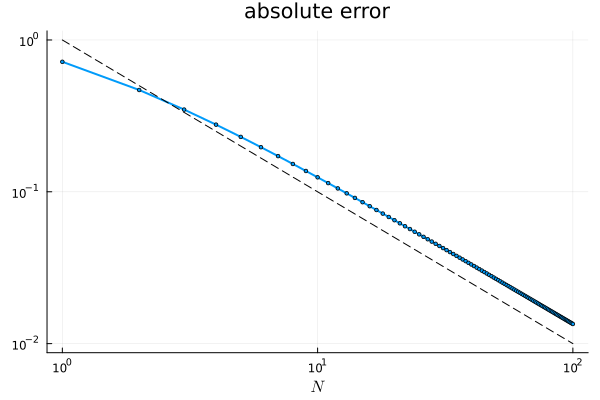
Euler-Mascheroni constant, \(\gamma\), is defined as the limit of \(\gamma_n = \sum_{k=1}^n \frac{1}{k} - \log n\) as \(n \to \infty\).
- What is the absolute error in approximating \(\gamma\) with \(\gamma_{1000}\)?
- What is the rate of convergence of \(\gamma_n\) to \(\gamma\)?
- [This was just so that we can remember some calculus and also rigorously prove the rate of convergence that we have seen above using a rigorous error estimate]
Prove that \(|\gamma - \gamma_n| \leq \frac1n\).
First, we define the Euler-Mascheroni constant:
γ = 0.5772156649015...… and compute the absolute error in approximating \(\gamma\) with \(\gamma_{1000}\):
Code
γ₁₀₀₀ = 0.5777155815682078
Abs. error = 0.0004999166666749266
Here’s a plot of the absolute errors on a log-log; the gradient matches \(O(N^{-1})\):
Code
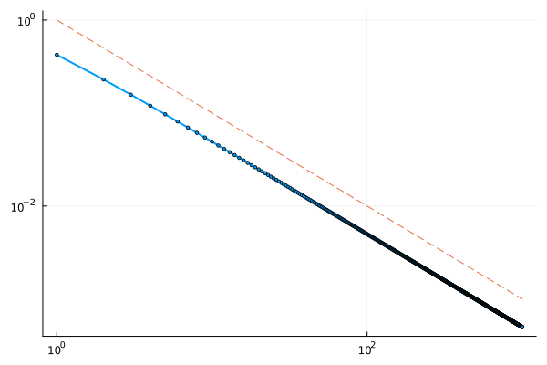
Proof. First, notice that
\[\begin{align} \gamma_n - \gamma_N % &= \log \frac Nn - \sum_{k=n+1}^N \frac{1}{k}\\ % &= \sum_{k=n+1}^N \left( \log \frac{k}{k-1} - \frac{1}{k} \right). \end{align}\]
Here, \(\frac1k\) is the area under the rectangle with base \([k-1,k]\) and height \(\frac1k\) and \(\log \frac{k}{k-1}\) is the integral of \(\frac1x\) between \(x = k-1\) and \(x = k\):
Code
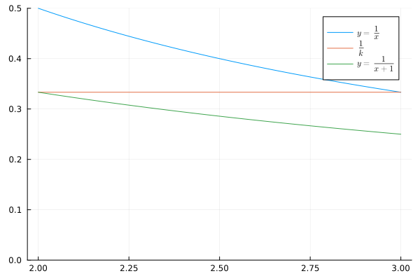
In the graph above, \(\frac1k\) is the area under the red line, \(\log \frac{k}{k-1}\) is the area under the blue line. We upper bound the absolute value of the error between these areas, by computing the area between \(y = \frac1x\) and \(y=\frac1{x+1}\):
\[\begin{align} 0 &\leq \gamma_n - \gamma_N \nonumber\\ % &= \sum_{k=n+1}^N \left( \log \frac{k}{k-1} - \frac{1}{k} \right) \\ % &\leq \sum_{k=n+1}^N \int_{k-1}^k \left( \frac{1}{x} - \frac{1}{x + 1} \right) \mathrm{d}x \nonumber\\ % &\leq \int_{n}^\infty \frac{1}{x(x+1)} \mathrm{d}x \\ % &\leq \int_{n}^\infty \frac{1}{x^2} \mathrm{d}x = \frac1n \end{align}\]
Here, we have shown that \((\gamma_n)\) is a Cauchy sequence and thus it converges, and we have the same estimate for \(\gamma_n - \gamma\) by taking the limit in \(N\).
Assignment 1, Fall 2025, 30 pts The quantities
\[\begin{align} \pi_N := 4 \sum_{n=0}^N \frac{(-1)^n}{2n+1} \end{align}\]
approximate \(\pi\) by using the Taylor expansion of \(\arctan\) together with the fact that \(\pi = 4 \arctan(1)\).
Code
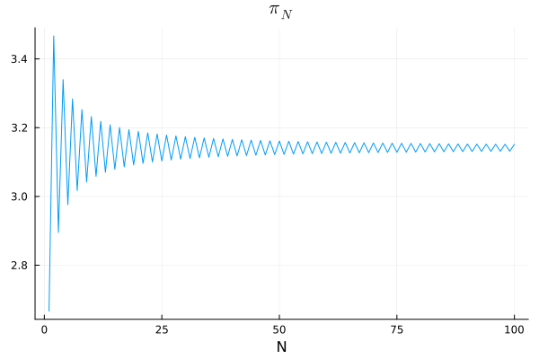
Based on the following graph, what is the rate of convergence of this particular approximation to \(\pi\)? Why do we use a log-log scale for this graph?
Code
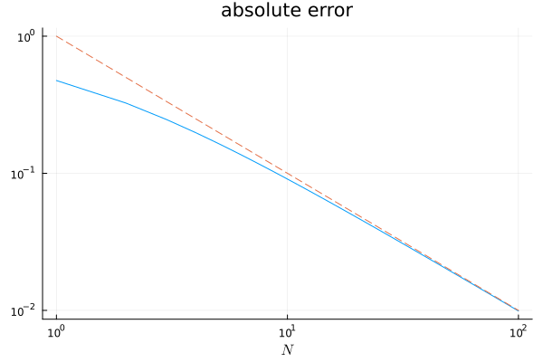
We have \(|\pi - \pi_N| = O(N^{-1})\). The log-log plot makes this behaviour easy to see.
In fact, one can show that
\[\begin{align} |\pi - \pi_N| &= 4 \int_{0}^1 \frac{t^{2(N+1)}}{1 + t^2} \mathrm{d}t\nonumber\\ % &\leq \frac{4}{2N+3}. \end{align}\]
Lecture 2
In England, when we need to convert between lb and kg some people use the phrase “2.2 pounds of jam is the same as a kilogram”.
- What is the error, absolute error, and relative error of approximating 1 kg with 2.2 lb?
- To how many significant digits is this approximation correct to?
You may use 1 kg = 2.20462262185 lb.
The error is simply “exact minus approx.” \(= 2.20462262185 - 2.2 \approx 0.00462262185\). This is also the absolute error (because it is positive).
For the relative error, we divide by the exact value:
relative error = 0.0020967860005540483
The error is \(0.002096... \leq 5 \times 10^{-3}\) and so \(2.2\) is correct to 3 significant digits. (This is sufficient for all recipes you will likely use).
Most people say a marathon is 26 miles when it is actually 26 miles 385 yards. In Europe, people say a marathon is 42 km when it is actually 42.194988 km.
- Which approximation has a smaller error?
- What is the advantage of computing the relative errors in this case?
Hint: You may use the fact that 1 mile \(=\) 1760 yards.
A marathon is \(26 \times 1760 + 385\) yards. The error and relative error in this approximation is
(385, 0.00834326579261025)The same calculation for the approximation in km is
(0.19498800000000216, 0.004621117560218341)1.8054649516893149The approximation in miles has a \(1.8\times\) larger relative error than the approximation in km.
Why is the error in the approximation in miles much larger than \(1.8\times\) bigger than the error in the approximation in km?
The astronomical unit is defined as \(1 \text{AU} = 149,597,870,700 \text{m}\). Write this in standard form.
\(1.495978707 \times 10^{11} \text{m}\)
Write down all the floating point numbers with \(k = 2\) in the interval \([1,2)\). What about the interval \([2,4)\)? \([2^n,2^{n+1})\)?
There are \(2^k\) equally spaced floating point numbers in any interval \([2^n,2^{n+1})\) (as long as \(\ell\) is sufficiently large).
Floats between \(1\) and \(2\) are \((1.b_1b_2)_2 = 1 + b_1 2^{-1} + b_2 2^{-2}\) and so are \(1\) (\(b_1 = b_2 = 0\)), \(1.25\) (\(b_1 = 0, b_2 = 1\)), \(1.5\) (\(b_1 = 1, b_2 = 0\)), \(1.75\) (\(b_1 = b_2 = 1\)).
Similarly, floats in the interval \([2^n, 2^{n+1})\) are of the form \((1 + b_1 2^{-1} + b_2 2^{-2} ) 2^n\). That is, \(2^n\) (\(b_1 = b_2 = 0\)), \(1.25 \times 2^n\) (\(b_1 = 0, b_2 = 1\)), \(1.5 \times 2^n\) (\(b_1 = 1, b_2 = 0\)), \(1.75 \times 2^n\) (\(b_1 = b_2 = 1\)).
Take \(k=\ell=2\).
- What number does \(0 0 1 1 0\) encode?
- Write the bitstring of \(-3.5\).
- What are the maximum and minimum positive (normal) numbers and the machine precision in this system?
Recall that floats are stored as \(s | c | f\) where \(s\) is the sign bit, \(c\) the characteristic, and \(f\) the fraction or mantissa. Recall that the bias is \(b = 2^{\ell-1}-1 = 2 - 1 = 1\) and \(c \in \{1, \dots, 2^\ell-2 \} = \{1,2\}\).
In this case, we have \(s = 0\), \(c = (01)_2 = 1\) and \(f = (0.10)_2 = \tfrac12\) and so this number represents \((-1)^s (1 + f) 2^{c - b} = (-1)^0 (1 + \tfrac12) 2^{1-1} = \tfrac32\).
\(-3.5 = (-1)^1 (1 + 0.75) 2 = (-1)^1 (1 + (0.11)_2 ) 2^{2-1}\) and so the bitstring is \(1 1 0 1 1\).
The maximum is \((-1)^0 (1 + (0.11)_2 ) 2^{ 2 - 1} = \tfrac72\),
The minimum positive float is \((-1)^0 (1 + (0.00)_2) 2^{ 1 - 1 } = 1\),
Machine precision is \(2^{-k} = \tfrac14\).
What are the maximum and minimum positive numbers and the machine precision for each of Float16, Float32, and Float64?
Recall, the bitstring is stored as \(s | c | f\) with \(1 | \ell | k\) bits for each where
Float16= half precision = \(1|5|10\),
Float32= single precision = \(1|8|23\), and
Float64= double precision = \(1|11|52\).
In general, the maximum number is \(2^{2^{\ell-1} -1}( 2 - 2^{-k} ) \approx 2^{2^{\ell-1}}\), the minimum positive (normal) number is \(2^{2-2^{\ell-1}}\), and the machine precision is \(\epsilon_{\text{mach}} = 2^{-k}\). Therefore:
Float16(\(\ell = 5\), \(k = 10\)): the maximum is \(2^{15}(2 - 2^{-10}) = 65504\), the minimum positive (normal) number is \(2^{-14} \approx 6.10 \times 10^{-5}\), and the machine precision is \(2^{-10} \approx 9.77 \times 10^{-4}\).Float32(\(\ell = 8\), \(k = 23\)): the maximum is \(2^{127}(2 - 2^{-23}) \approx 3.40 \times 10^{38}\), the minimum positive (normal) number is \(2^{-126} \approx 1.18 \times 10^{-38}\), and the machine precision is \(2^{-23} \approx 1.19 \times 10^{-7}\).Float64(\(\ell = 11\), \(k = 52\)): the maximum is \(2^{1023}(2 - 2^{-52}) \approx 1.80 \times 10^{308}\), the minimum positive (normal) number is \(2^{-1022} \approx 2.23 \times 10^{-308}\), and the machine precision is \(2^{-52} \approx 2.22 \times 10^{-16}\).
You can check these in Julia with floatmax, floatmin, and eps:
Code
Float16: max = 6.55e4
min = 6.104e-5
eps = 0.000977
Float32: max = 3.4028235e38
min = 1.1754944e-38
eps = 1.1920929e-7
Float64: max = 1.7976931348623157e308
min = 2.2250738585072014e-308
eps = 2.220446049250313e-16
Write down the bitstring for \(\pi\) in Float16.
\(\pi\) in Float16 rounds to
trueand, in Float16, we have \(1|\ell|k = 1|5|10\). Therefore, the bias is \(2^{\ell-1}-1 = 2^{4}-1 = 15\)
Compute the relative condition numbers of (i) \(x \mapsto cx\) for \(c \not= 0\), (ii) \(\log(x)\), (iii) \(\exp\), (iv) \(x^p\), and (v) \(f\circ g\) in terms of \(\kappa_f\) and \(\kappa_g\)
Recall that \(\kappa_f(x) = \left| \frac{x f'(x)}{f(x)} \right|\).
Since \((x \mapsto cx)' = c\), \(\log'(x) = \tfrac1x\), \(\exp'(x) = \exp(x)\), \((x^p)' = p x^{p-1}\), and \((f \circ g)'(x) = f'(g(x)) g'(x)\), we have
\[\begin{align} \kappa_{x \mapsto c x}(x) &= \left| \frac{x c}{cx} \right| = 1 \qquad \text{for } x \not=0, \nonumber\\ % \kappa_{\log}(x) &= \left| \frac{x \cdot \tfrac1x}{\log(x)} \right| = \frac{1}{|\log x|} \qquad \text{for } x>0, x \not= 1, \nonumber\\ % \kappa_{\exp}(x) &= \left| \frac{x e^x}{e^x} \right| = |x| \nonumber\\ % \kappa_{x\mapsto x^p}(x) &= \left| \frac{x \cdot p x^{p-1}}{x^p} \right| = |p| \nonumber \end{align}\]
and
\[\begin{align} \kappa_{f\circ g}(x) &= \left| \frac{x f'(g(x)) g'(x)}{f(g(x))} \right| \nonumber\\ % &=\left| \frac{g(x) f'(g(x))}{ f(g(x))} \right| \left| \frac{x g'(x)}{ g(x) } \right| \nonumber\\ % &= \kappa_{f}(g(x)) \kappa_g(x) \nonumber \end{align}\]
for \(f(g(x)) \not=0\).
Midterm, Fall 2025, Compulsory Section, 3 pts. Let us define
\[\begin{align*} f(x) = \frac{\sqrt{1+x}-1}{x}, \qquad g(x) = \frac{1}{\sqrt{1+x} + 1}. \end{align*}\]
One may verify that \(f\) and \(g\) are mathematically identical (but you don’t have to). The following table is the output of evaluating \(f\) and \(g\) on \(\{10^{-14}, 10^{-15}, 10^{-16}\}\) in double precision floating point. Why are the function values different?
Code
f(x) g(x)
x = 10^(-14): 0.4884981308350689 0.4999999999999988
x = 10^(-15): 0.44408920985006256 0.4999999999999999
x = 10^(-16): 0.0 0.5
Subtractive cancellation! The formula \(f\) suffers from subtractive cancellation, but the formula \(g\) does not.
(The formulae are the same since
\[\begin{align} f(x) &= \frac{\sqrt{1+x}-1}{x} \frac{\sqrt{1+x}+1}{\sqrt{1+x}+1} \nonumber\\ % &= \frac{1+x-1}{\sqrt{1+x}+1} = g(x). \nonumber \end{align}\]
Moreover, we can see that \(\lim_{x\to 0} f(x) = \lim_{x\to 0} g(x) = \frac12\).)
Quiz 0
Quiz 0: Exercise 1
Let \(x_n = \frac{1 + n^2}{ 2 n^3 } \cos n\). For which of the following sequences \((\varepsilon_n)\) do we have \(x_n = O(\varepsilon_n)\) as \(n\to\infty\)? Select all that apply.
(a). \(\varepsilon_n = e^{-n}\), (b). \(\varepsilon_n = n^{-2}\), (c). \(\varepsilon_n = n^{-1}\), (d). \(\varepsilon_n = 1\), (e). \(\varepsilon_n = n\).
(c), (d), and (e). Since \(|\cos n| \leq 1\) and \(1 \leq n^2\) for all \(n \in \mathbb N\), we have
\[\begin{align} |x_n| &= \left|\frac{1 + n^2}{ 2 n^3 } \cos n\right| \nonumber\\ % &\leq \frac{n^2 + n^2}{ 2 n^3 } \nonumber\\ % &= n^{-1} \leq 1 \leq n. \nonumber \end{align}\]
Therefore, \(x_n = O(n^{-1})\), \(O(1)\), and \(O(n)\).
However, \(x_n \not= O(n^{-2})\) (and so \(x_n \not= O(e^{-n})\) either): \(|\cos x| < \frac12\) only when \(x\) lies in an interval of the form \((\frac\pi3, \frac{2\pi}3) + k\pi\) (of length \(\frac\pi3 < 2\)), so at least one of any three consecutive integers \(n\) satisfies \(|\cos n| \geq \frac12\). For these \(n\), we have \(|x_n| \geq \frac{n^2}{2n^3} \cdot \frac12 = \frac1{4n}\), and so \(n^2 |x_n| \geq \frac{n}{4}\) is unbounded.
Quiz 0: Exercise 2
Let us define
\[\begin{align*} f(x) = \frac{\sqrt{1+x}-1}{x}, \qquad g(x) = \frac{1}{\sqrt{1+x} + 1}. \end{align*}\]
One may verify that \(f\) and \(g\) are mathematically identical (but you don’t have to). The following table is the output of evaluating \(f\) and \(g\) on \(\{10^{-14}, 10^{-15}, 10^{-16}\}\) in double precision floating point. Why are the function values different?
Code
f(x) g(x)
x = 10^(-14): 0.4884981308350689 0.4999999999999988
x = 10^(-15): 0.44408920985006256 0.4999999999999999
x = 10^(-16): 0.0 0.5Subtractive cancellation! For small \(x\), \(\sqrt{1+x} \approx 1 + \frac{x}{2}\), so the numerator of \(f\) is the difference of two numbers that agree in almost all of their digits: the result has very few correct significant digits. At \(x = 10^{-16} < \frac12 \epsilon_{\rm mach}\) we even have 1 + 1e-16 == 1, so the numerator is exactly \(0\). The formula \(g\) only adds positive numbers, so there is no cancellation and \(g(x) \approx \frac12\) is accurate.
(The formulae are the same since
\[\begin{align} f(x) &= \frac{\sqrt{1+x}-1}{x} \frac{\sqrt{1+x}+1}{\sqrt{1+x}+1} \nonumber\\ % &= \frac{1+x-1}{x(\sqrt{1+x}+1)} = g(x). \nonumber \end{align}\]
Moreover, \(\lim_{x\to 0} f(x) = \lim_{x\to 0} g(x) = \frac12\).)
Lecture 3
Let \(\epsilon\) be the machine precision. Is \((1 + \epsilon/2) - 1 = 1 + (\epsilon/2-1)\) in Float64?
falseThis is false, since \(1 + \epsilon\) is the smallest float larger than \(1\), Julia has to round or truncate \(1 + \epsilon/2\):
1.0Therefore, \((1 + \epsilon/2) -1 = 0\). On the other hand \(\epsilon/2 - 1\) is a float and so \(1 + (\epsilon/2 - 1)\) is not equal to \(0\).
Let \(X\) be an array containing \(10^{16}, -10^{16}\), and \(N\) copies of \(1\). What is the sum of all the entries of the array \(X\)? Does it depend on the order of summation? What about in Float64? Why?
Code
72.0
32.0
92.0
25.0
44.0
94.0
77.0
96.0
55.0
26.0
This happens because \(2^{53} \leq 10^{16} < 2^{54}\) and so the spacing between floats in this interval is \(2^{n-k} = 2^{53-52} = 2\) (in Float64, the binary precision is \(k=52\)). As a result \(10^{16} + 1\) is not a float; Julia rounds this to \(10^{16}\):
1.0e16Exercise 1.4.1 from Driscoll and Braun (2017), [Fundamentals of Numerical Computation by Driscoll, Braun]
(5.000444502912538e-7, 5.000000000000416e-7)Since \(1 - \cos x = 2 \sin^2 \frac{x}{2}\), the formulas \(f(x) = \frac{1 - \cos x}{\sin x}\) and \(g(x) = \frac{2 \sin^2(x/2)}{\sin x}\) are mathematically identical (both equal \(\tan \frac{x}{2}\)).
In floating point, however, they are different for small \(x\). For \(x = 10^{-6}\) (see the code above):
- \(f(10^{-6}) \approx 5.000444 \times 10^{-7}\), with relative error \(\approx 9 \times 10^{-5}\) (only about \(4\) correct significant digits),
- \(g(10^{-6}) \approx 5.000000000000416 \times 10^{-7}\), which is correct to machine precision (relative error \(\approx 10^{-16}\)).
The problem itself is well-conditioned: with \(F(x) = \tan\frac{x}{2}\), we have \(\kappa_F(x) = \left|\frac{x F'(x)}{F(x)}\right| = \frac{x}{\sin x} \approx 1\) for small \(x\). The large error in \(f\) is therefore due to the algorithm: \(\cos(10^{-6}) \approx 1 - 5 \times 10^{-13}\), so computing \(1 - \cos x\) subtracts two nearly equal numbers (subtractive cancellation) and loses about \(12\) significant digits. The formula \(g\) involves no such subtraction, and so is stable.
Exercise 1.4.2 from Driscoll and Braun (2017), [Fundamentals of Numerical Computation by Driscoll, Braun]
Code
11-element Vector{Float64}:
1.1102230246251565e-14
1.0880185641326532e-12
4.285460875053104e-11
4.32542890393961e-9
9.701794922989393e-7
3.798317216308078e-5
0.005663214341922184
1.1077470940534795
82.24037095772019
826.9037099495335
8273.537099867668Code
11-element Vector{Float64}:
3.061924358220656e-16
2.7835675983824175e-25
2.7584904128114e-34
2.7560075231509052e-43
2.7557594799933906e-52
2.755734678133266e-61
2.7557321979718108e-70
2.755731949955909e-79
2.755731925154322e-88
2.7557319226741635e-97
2.755731922426145e-106Using the Taylor expansion of \(e^x\), we have
\[\begin{align} f(x) = \frac{e^x - 1}{x} = \sum_{n=0}^\infty \frac{x^n}{(n+1)!}, \qquad p(x) := \sum_{n=0}^{8} \frac{x^n}{(n+1)!}. \nonumber \end{align}\]
For \(0 < x < 1\), the truncation error satisfies
\[\begin{align} |f(x) - p(x)| = \sum_{n = 9}^\infty \frac{x^n}{(n+1)!} \leq \frac{1}{10!} \sum_{n=9}^\infty x^n = \frac{x^9}{10!\,(1-x)}, \nonumber \end{align}\]
which is less than \(3.1 \times 10^{-16}\) for \(x \leq 0.1\) (see the second code cell above). Since \(f(x) \geq 1\), the polynomial \(p\) is accurate to machine precision for all \(x \in (0, 0.1]\).
On the other hand, the formula \(\frac{e^x - 1}{x}\) suffers from subtractive cancellation for small \(x\) (\(e^x \approx 1\)): its relative error grows roughly like \(\epsilon_{\rm mach}/x\), from \(\approx 10^{-14}\) at \(x = 10^{-2}\) to \(\approx 10^{-8}\) at \(x = 10^{-8}\). The differences \(|f - p|\) computed above are therefore almost entirely the error of the naive formula, not the truncation error of \(p\). (Julia’s expm1 avoids this problem: expm1(x)/x is accurate for all small \(x\).)
Let \(f(x) = e^x - 2x - 1\). Apply change of sign theorem to \(f\) to conclude there exists \(\xi \in [1,2]\) such that \(f(\xi) = 0\).
The function \(f(x) = e^x - 2x - 1\) is continuous with \(f(1) = e - 3 \approx -0.28 < 0\) and \(f(2) = e^2 - 5 \approx 2.39 > 0\). Therefore, \(f(1) f(2) < 0\) and, by the change of sign theorem, there exists \(\xi \in [1,2]\) with \(f(\xi) = 0\).
Let’s return to Exercise 3.5. You showed that \(f(x) = e^x - 2x - 1\) has a root \(\xi \in [1,2]\).
Show that \(f(x) = 0\) can be solved by instead considering the fixed point problems \(g(x) = x\) or \(h(x) = x\) where
\[ \begin{align} g(x) &= \log( 2x + 1 ), \\ h(x) &= \frac{e^x - 1}{2}. \end{align} \]
Show that Brouwer’s fixed point theorem applies to \(g\) but not \(h\) on \([1,2]\).
For \(x \in [1,2]\) we have \(2x + 1 > 0\), and \(\log\) is one-to-one, so
\[\begin{align} g(x) = x &\iff \log(2x+1) = x \nonumber\\ &\iff 2x + 1 = e^x \nonumber\\ &\iff f(x) = 0, \nonumber \end{align}\]
and
\[\begin{align} h(x) = x &\iff \frac{e^x - 1}{2} = x \nonumber\\ &\iff e^x - 2x - 1 = 0 \nonumber\\ &\iff f(x) = 0. \nonumber \end{align}\]
That is, the roots of \(f\) are exactly the fixed points of \(g\) and of \(h\).
\(g\): \(g\) is continuous and increasing on \([1,2]\), with \(g(1) = \log 3 \approx 1.10\) and \(g(2) = \log 5 \approx 1.61\). So, for all \(x \in [1,2]\),
\[\begin{align} 1 < g(1) \leq g(x) \leq g(2) < 2. \nonumber \end{align}\]
Therefore \(g : [1,2] \to [1,2]\) and Brouwer’s fixed point theorem gives a fixed point \(\xi = g(\xi) \in [1,2]\).
\(h\): \(h(1) = \frac{e - 1}{2} \approx 0.86 < 1\) (and \(h(2) = \frac{e^2 - 1}{2} \approx 3.19 > 2\)), so \(h\) does not map \([1,2]\) into \([1,2]\) and Brouwer’s fixed point theorem does not apply. (Of course, \(h\) still has the fixed point \(\xi \in [1,2]\) found above: the theorem just cannot be used to show it.)
Assignment 1, Fall 2025, [30 pts]. Prove that, for \(x \geq 0\), there exists a unique \(W(x) \geq 0\) for which \(W(x) e^{W(x)} = x\). Show that \(\Omega := W(1)\) satisfies \(0.56 < \Omega < 0.58\).
Intermediate value theorem is useful!
The function \(F(w) := w e^w\) is continuous on \([0, \infty)\) with \(F(0) = 0\) and \(F(w) \to \infty\) as \(w \to \infty\). Therefore, for \(x \geq 0\), there exists \(w_x \geq 0\) with \(F(0) \leq x \leq F(w_x)\) and, by the intermediate value theorem, there exists \(W \in [0, w_x]\) with \(F(W) = x\). Moreover, \(F'(w) = (1 + w) e^w > 0\), so \(F\) is strictly increasing on \([0,\infty)\): if \(W' < W < W''\) then \(F(W') < x < F(W'')\). Hence \(W(x) := W\) is the unique solution in \([0,\infty)\) of \(W e^W = x\).
Finally, \(F(0.56) = 0.56\, e^{0.56} \approx 0.980 < 1\) and \(F(0.58) = 0.58\, e^{0.58} \approx 1.035 > 1\), and so (again since \(F\) is continuous and strictly increasing) \(\Omega = W(1) \in (0.56, 0.58)\). In the plot below, \(\Omega\) is where the curve \(y = w e^w\) crosses the line \(y = 1\):
Code
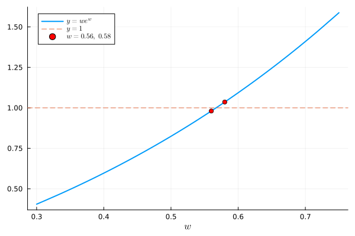
Assignment 2, Fall 2025, [10 pts]. For fixed \(f\), define
\[\begin{align} g(x) &= f(x - a), \\ h(x) &= b f(x), \\ j(x) &= f(c x), \end{align}\]
- What is \(\kappa_g(x)\)?
- Write \(\kappa_{h}(x)\) in terms of \(\kappa_f\),
- Write \(\kappa_{j}(x)\) in terms of \(\kappa_f\),
- What is \(\kappa_f(x)\) when \(f(x) = e^{-x^2}\)?
Recall that \(\kappa_f(x) = \left| \frac{x f'(x)}{f(x)} \right|\).
- \(g'(x) = f'(x - a)\) and so \(\kappa_g(x) = \left| \frac{x f'(x-a)}{f(x-a)} \right| = \left| \frac{x}{x - a} \right| \kappa_f(x - a)\).
- \(h'(x) = b f'(x)\) and so \(\kappa_h(x) = \left| \frac{x\, b f'(x)}{b f(x)} \right| = \kappa_f(x)\) (for \(b \not= 0\)): scaling the output doesn’t change the conditioning.
- \(j'(x) = c f'(cx)\) and so \(\kappa_j(x) = \left| \frac{x\, c f'(cx)}{f(cx)} \right| = \kappa_f(cx)\). (Common mistakes: \(|c| \kappa_f(cx)\), \(\frac{1}{|c|}\kappa_f(x)\), or \(\frac{1}{|c|}\kappa_f(cx)\).)
- \(f'(x) = -2x e^{-x^2}\) and so \(\kappa_f(x) = \left| \frac{x \cdot (-2x) e^{-x^2}}{e^{-x^2}} \right| = 2x^2\).
Assignment 2, Fall 2025, [25 pts]. Consider the differential equation (initial value problem)
\[ \begin{align} \begin{split} u'(x) &= u(x) +e^{-x} \nonumber \\ u(0) &= -\frac12 . \end{split} \end{align} \]
- Show that \(u(x) = -\frac12 e^{-x}\) solves (3.2).
Now we perturb the initial data, by considering
\[ \begin{align} \begin{split} u'(x) &= u(x) +e^{-x} \nonumber \\ u(0) &= \alpha \end{split} \end{align} \]
for \(\alpha := \epsilon - \frac12\).
- Show that \(u_{\alpha}(x) = (\alpha + \frac12) e^x -\frac12 e^{-x}\) solves (3.3).
- Plot the functions \(u\) and \(u_{\alpha}\) and comment on the difference between the solutions for large \(x\).
- Let \(f( \alpha ) = u_\alpha( 100 )\). What is the condition number \(\kappa_f( \alpha )\)?
- Explain what happens for \(\alpha \approx -\frac12\). Link your observations to your answer for question 3.
\(u'(x) = \frac12 e^{-x} = -\frac12 e^{-x} + e^{-x} = u(x) + e^{-x}\) and \(u(0) = -\frac12\).
\(u_\alpha'(x) = (\alpha + \frac12) e^x + \frac12 e^{-x} = u_\alpha(x) + e^{-x}\) and \(u_\alpha(0) = (\alpha + \frac12) - \frac12 = \alpha\).
The difference between the two solutions is \(u_\alpha(x) - u(x) = (\alpha + \frac12) e^{x} = \epsilon e^x\). Here are \(u\) and \(u_\alpha\) for \(\epsilon = 10^{-10}\):
Code
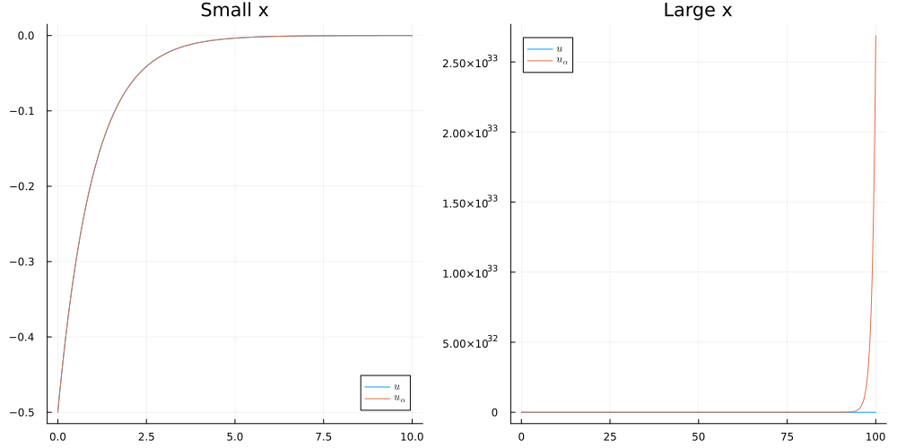
For small \(x\) (left) the two solutions are indistinguishable: \(u_\alpha(x) \approx u(x)\). For large \(x\) (right) they are completely different: \(u(x) = -\frac12 e^{-x}\) decays to \(0\), whereas \(u_\alpha(x) \approx \epsilon e^x\) grows exponentially. For example, \(u(20) \approx -10^{-9}\) but \(u_\alpha(20) \approx 0.05\), and \(u(30) \approx -5 \times 10^{-14}\) but \(u_\alpha(30) \approx 1069\).
The difference is easiest to see on a logarithmic scale:
Code
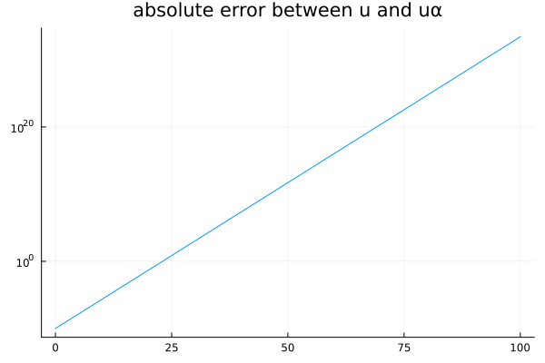
On a logarithmic \(y\)-axis, the error \(|u(x) - u_\alpha(x)| = \epsilon e^x\) is a straight line with slope \(1\) (in natural-log units): a perturbation of size \(\epsilon = 10^{-10}\) in the initial condition grows by a factor \(e\) for every unit increase in \(x\), and is about \(3 \times 10^{33}\) at \(x = 100\).
\(f(\alpha) = u_\alpha(100) = (\alpha + \frac12) e^{100} - \frac12 e^{-100}\) and \(f'(\alpha) = e^{100}\), so \[\begin{align} \kappa_f(\alpha) = \left| \frac{\alpha f'(\alpha)}{f(\alpha)} \right| = \left| \frac{\alpha e^{100}}{(\alpha + \frac12) e^{100} - \frac12 e^{-100}} \right|. \nonumber \end{align}\]
As \(\alpha \to -\frac12\), \(\kappa_f(\alpha) \to \left| \frac{-\frac12 e^{100}}{-\frac12 e^{-100}} \right| = e^{200} \approx 7 \times 10^{86}\): the problem is extremely ill-conditioned. A tiny relative change in the initial condition (e.g. storing \(-\frac12 + \epsilon\) in floating point) leads to a huge relative change in \(u(100)\), which is exactly what the plots in part 3 show.
For example, with \(\epsilon = 10^{-10}\) as in the plots: the relative change in the input is \(\left|\frac{\epsilon}{-1/2}\right| = 2 \times 10^{-10}\), while \(u(100) \approx -1.9 \times 10^{-44}\) and \(u_\alpha(100) \approx 2.7 \times 10^{33}\), a relative change of about \(1.4 \times 10^{77}\) in the output. Their ratio is \(\approx 7.2 \times 10^{86} \approx e^{200} \approx \kappa_f(\alpha)\), as predicted.
Assignment 2, Fall 2025, [10 pts]. Let \(p_{\alpha}(x) = \alpha x^n + \sum_{j=0}^{n-1} a_{j} x^j\) be a polynomial of degree \(n\) and let \(r(\alpha)\) be a root of \(p_{\alpha}\). What is the condition number \(\kappa_r(\alpha)\)?
Since \(p_\alpha(r(\alpha)) = 0\) for all \(\alpha\), differentiating with respect to \(\alpha\) gives
\[\begin{align} r(\alpha)^n + p_\alpha'\big(r(\alpha)\big)\, r'(\alpha) = 0 \qquad \text{and so} \qquad r'(\alpha) = - \frac{r(\alpha)^n}{p_\alpha'\big(r(\alpha)\big)} \nonumber \end{align}\]
(assuming \(r(\alpha)\) is a simple root, so that \(p_\alpha'(r(\alpha)) \not= 0\)). Therefore,
\[\begin{align} \kappa_r(\alpha) = \left| \frac{\alpha\, r'(\alpha)}{r(\alpha)} \right| = \left| \frac{\alpha\, r(\alpha)^{n-1}}{p_\alpha'\big(r(\alpha)\big)} \right|. \nonumber \end{align}\]
In particular, the root is ill-conditioned when \(p_\alpha'(r(\alpha))\) is small, i.e. when \(r(\alpha)\) is close to a repeated root.
Lecture 4
Suppose \(g :[a,b] \to \mathbb R\) is continuously differentiable with \(|g'(x)| \leq L < 1\) for all \(x \in [a,b]\). Show that \(g\) is a contraction with constant \(L\).
Use Taylor/mean value theorem.
By the mean value theorem, for \(x, y \in [a,b]\), there exists \(c \in [a,b]\) such that
\[\begin{align} |g(x) - g(y)|&= |g'(c)| |x-y| \nonumber\\ % &\leq L |x-y|. \end{align}\]
As a result, \(g\) is a contraction.
Suppose \(g \in C^1([a,b])\). Take the simple iteration \(x_{n+1} = g(x_n)\) for some contraction \(g : [a,b] \to [a,b]\). Show that \((x_n)\) converges to the fixed point of \(g\) in \([a,b]\) at least linearly with asymptotic error constant \(\mu = |g'(\xi)|\).
Notice that, by the mean value theorem, there exists \(\eta_n\) between \(x_{n}\) and \(\xi\) for which
\[\begin{align} \frac {|x_{n+1} - \xi|} {|x_n - \xi|} % &= \frac {|g(x_n) - g(\xi)|} {|x_n - \xi|} \nonumber\\ % &= \frac {|g'(\eta_n)| |x_n - \xi|} {|x_n - \xi|} \nonumber\\ % &= |g'(\eta_n)| \nonumber \end{align}\]
Following the hint: since \((x_n) \to \xi\), and \(\eta_n\) is between \(x_n\) and \(\xi\), we have
\[\begin{align} \lim_{n\to\infty} \frac {|x_{n+1} - \xi|} {|x_n - \xi|} % &= |g'(\xi)| \nonumber \end{align}\]
and the order of convergence is at least linear with asymptotic error constant \(\mu = |g'(\xi)| < 1\).
(Recal that, if \(\mu = 0\), the order of convergence is superlinear)
Show that \(g(x) = \log( 2x + 1)\) is a contraction on \([1,2]\) with \(L = \frac23\). Hence conclude that \(x_{n+1} := g(x_n)\) converges for all \(x_1 \in [1,2]\).
First, note that Exercise 3.6 gives \(1 < g(1) \leq g(x) \leq g(2) < 2\) for all \(x\in [1,2]\).
Notice that \(g'(x) = \frac{2}{2x+1}\) which is positive and decreasing on \([1,2]\). We therefore have \(\frac25 = g'(2) \leq g'(x) \leq g'(1) = \frac{2}{3}\) and so \(g\) is a contraction with \(L = \frac23\) by Exercise 4.1. Applying the contraction mapping theorem shows that \((x_n)\) converges linearly to the fixed point \(\xi \in [1,2]\) of \(g\).
Assignment 2, Fall 2025, [25 pts]. Fix \(a, x_1 > 0\) and define the iteration \(x_{n+1} = \frac{1}{2}\big( x_n + \frac{a}{x_n} \big)\).
- ✍ Show that \(x_{n+1}\) has the same sign as \(x_n\),
- ✍ Suppose that \((x_n) \to \xi\). What is the value of \(\xi\)?
- 💻 Let \(x\) be as in question 2. Show numerically that \((x_n) \to \xi\) for a few different choices of \(a\) and \(x_1\),
- 💻 This iteration can be seen as a way of approximating \(\xi\). What is the correseponding order of convergence?
Note \(\frac12 x_n\) and \(\frac1{2 x_n}\) have the same sign as \(x_n\). Moreover, since \(a> 0\), \(\frac{a}{x_n}\) has the same sign as \(x_n\). As a result \(x_{n+1}\) has the same sign as \(x_n\). Since \(x_1 > 0\), we find that \(x_n > 0\) for all \(n\).
Since \(g(x) := \frac12\big( x + \frac{a}{x} \big)\) is continuous on \((0,\infty)\) and \((x_n)\to\xi\), we have \(\xi = g(\xi)\). Therefore, we have \(\frac12\xi = \frac12 \frac{a}{\xi}\) and so \(\xi^2 = a\). Since \(\xi > 0\) since \(x_n > 0\) for all \(n\), we have \(\xi = + \sqrt{a}\).
Code
(a, x₁) = (2, 1.0); converged to 1.414213562373095
(a, x₁) = (2, 2.0); converged to 1.414213562373095
(a, x₁) = (2, 0.01); converged to 1.414213562373095
(a, x₁) = (4, 1.0); converged to 2.0
(a, x₁) = (4, 2.0); converged to 2.0
(a, x₁) = (4, 0.01); converged to 2.0
(a, x₁) = (9, 1.0); converged to 3.0
(a, x₁) = (9, 2.0); converged to 3.0
(a, x₁) = (9, 0.01); converged to 3.0
(a, x₁) = (81, 1.0); converged to 9.0
(a, x₁) = (81, 2.0); converged to 9.0
(a, x₁) = (81, 0.01); converged to 9.0
This method converges to \(\sqrt{a}\) for all \(a\) and \(x_1\) that we chose.
- Here, we compute \(x_{n+1} = g(x_n)\) for \(a = 2\) and \(x_1 = 1\):
Code
5-element Vector{Float64}:
1.0
1.5
1.4166666666666665
1.4142156862745097
1.4142135623746899Next, we compute \(\frac{|x_{n+1} - \xi|}{|x_n-\xi|^\alpha}\) for \(\alpha = 1\):
4-element Vector{Float64}:
0.20710678118654724
0.028595479208965498
0.0008658015152821018
7.508466926336308e-7This appears to converge to \(0\); suggesting the convergence is superlinear.
For \(\alpha = 2\), we have:
4-element Vector{Float64}:
0.49999999999999917
0.33333333333330084
0.35294117643144196
0.35352238456116425This is a number \(>0\), suggesting the convergence is quadratic.
In fact, in the Lecture 5, we will prove that the convergence is quadratic with \(\mu = \frac1{2\sqrt{a}}\). In the last case, this is
0.35355339059327373which matches the numerically computed value above.
We could have also numerically approximated \(\alpha\) by computing \(\frac{\log |x_{n+1} - \xi|}{\log |x_n - \xi|}\):
4-element Vector{Float64}:
2.7864397013573967
2.4473369494135158
2.1732752731987097
2.0796040502714805Assignment 3, Fall 2025. The Lambert W function (also called the product-log function) \(W : [0,\infty) \to [0,\infty)\) satisfies \(W(a) e^{W(a)} = a\). Define \(\Omega := W(1)\).
- ✍ Show that \(\Omega \in [0.56, 0.58]\).
- ✍ Show that \(\Omega\) is a fixed point of \(g\) and \(h\) as defined by
\[\begin{align} g(x) = e^{-x}, \qquad h(x) = \log \left|\frac{1}{x}\right| \end{align}\]
- 💻 Show numerically that \(x_{n+1} = g(x_n)\) converges and \(y_{n+1} = h(y_n)\) diverges for a few different choices of \(x_1\) and \(y_1\).
- ✍ Show that \(g:[\frac{1}{e}, 1]\to[\frac{1}{e},1]\) with \(|g'| < 1\),
- ✍ Explain why this means that the iteration \(x_{n+1} = g(x_n)\) converges for all \(x_1 \in [\frac{1}{e}, 1]\),
- ✍ Now fix \(x_1 \in \mathbb R\). Show that the sequence \((x_n)\) is eventually contained in \([0,1]\) and that \(g : [0,1] \to [\frac{1}{e}, 1]\). Explain why this means that \((x_n)\) converges for all \(x_1 \in \mathbb R\),
- ✍ What is the order of convergence of this method?
- 💻 Confirm this numerically.
- ✍ Show that \((y_n)\) doesn’t converge to \(\Omega\) unless \(y_n = \Omega\) for some \(n\) (for example, when \(y_1 = -\Omega\)).
This exercise is more difficult
Midterm, Fall 2025, Optional section, 30 pts. Define \(g(x) = 1 + \frac{1}{1 + x}\) and \(I := [1,2]\).
- [3 points] Show that \(g(x) \in I\) for all \(x \in I\).
- [3 points] Which theorem guarantees the existence of a fixed point \(\xi = g(\xi) \in I\).
- [3 points] Compute the value of \(\xi\).
- [3 points] Show that \(L := \max_{x \in I} |g'(x)| = \frac14\).
- [3 points] Explain why this means the iteration \(x_{n+1} = g(x_n)\) converges to \(\xi\) for all \(x_1 \in I\).
- [5 points] What is the order of convergence?
- [5 points] What is the asymptotic error constant?
- [5 points] Fix \(x_1 \in I\). Find \(n\) for which the error bound \(|x_{n+1} - \xi| \leq \frac{1}{64}\) is guaranteed.
Quiz 1
Quiz 1: Exercise 1
Let \(x_n = \frac{1 + n^2}{ 3 n^4 } \cos n^5\). For which of the following sequences \((\varepsilon_n)\) do we have \(x_n = O(\varepsilon_n)\) as \(n\to\infty\)? Select all that apply.
- \(\varepsilon_n = e^{-n}\),
- \(\varepsilon_n = n^{-2}\),
- \(\varepsilon_n = n^{-1}\),
- \(\varepsilon_n = 1\),
- \(\varepsilon_n = n\).
(b), (c), (d), and (e). Since \(|\cos n^5| \leq 1\) and \(1 \leq n^2\) for all \(n \in \mathbb N\), we have
\[\begin{align} |x_n| &= \left|\frac{1 + n^2}{ 3 n^4 } \cos n^5\right| \nonumber\\ % &\leq \frac{n^2 + n^2}{ 3 n^4 } \nonumber\\ % &= \frac23 n^{-2} \leq n^{-1} \leq 1 \leq n. \nonumber \end{align}\]
Therefore, \(x_n = O(n^{-2})\), \(O(n^{-1})\), \(O(1)\), and \(O(n)\). However, \(x_n \not= O(e^{-n})\): e.g. along the subsequence of \(n\) for which \(|\cos n^5| \geq \frac12\) (there are infinitely many), \(|x_n| \geq \frac16 n^{-2}\), which decays much slower than \(e^{-n}\).
Quiz 1: Exercise 2
Note that \(x := 1.001^{2026}\) and \(y := e^{2026 \log 1.001}\) are mathematically identical (\(x=y\)). In the following code, we use 16 bit floating point arithmetic to compute \(x\) (by repeated multiplication) and \(y\) (with the above formula):
Code
x = 5.914; y = 7.227Which result do you trust more and why?
Trust \(y\) more. Computing \(x\) by repeated multiplication involves \(2026\) multiplications, each of which introduces a round-off error (of relative size up to \(\frac12 \epsilon_{\rm mach} = 2^{-11}\) in Float16) and these errors accumulate. On the other hand, \(y\) is computed with only three operations (log, *, and exp), so there are far fewer opportunities for round-off error.
(In fact, neither value equals \(1.001^{2026} \approx 7.576\): Float16(1.001) is \(1 + 2^{-10} \approx 1.000977\), and \(y \approx 7.227\) is an accurate value of \((1 + 2^{-10})^{2026} \approx 7.225\).)
Quiz 1: Exercise 3
True or false: there exists a continuous function \(f\) with a root in \([a,b]\) and \(f(a) f(b) > 0\)? Why or why not?
True. For example, \(f(x) = x^2\) has a root in \([-1,1]\) but \(f(-1) f(1) = 1 > 0\). That is, the converse of the change of sign theorem is false.
Quiz 1: Exercise 4
True or false: the function \(f(x) = x^2\) is a contraction on some interval \([a,b]\). Show your working.
True. For example, on \([0, \frac14]\) we have \(|x^2 - y^2| = |x+y|\,|x-y| \leq \frac12 |x-y|\), so \(f\) is a contraction with \(L = \frac12\).
More generally, \(|x^2 - y^2| = |x+y|\,|x-y| \leq 2\max(|a|,|b|)\,|x-y|\) for \(x, y \in [a,b]\) (or use the mean value theorem: \(|x^2 - y^2| = 2|\xi|\,|x-y|\) for some \(\xi\) between \(x\) and \(y\)). Therefore, \(f\) is a contraction on any \([a,b] \subset (-\frac12, \frac12)\) with \(L = 2\max(|a|,|b|) < 1\).
Lecture 5
Suppose \(g : [a,b] \to [a,b]\) is a contraction with constant \(L < 1\) and consider the simple iteration \(x_{n+1} = g(x_n)\). Let \(\xi \in [a,b]\) be the unique fixed point of \(g\) in \([a,b]\).
- Show that \(|x_1 - \xi| \leq \frac1{1-L} |x_1 - x_2|\),
- Hence, write down a lower bound on the number of iterations \(n\) to ensure \(|x_{n+1} - \xi|\leq \varepsilon\).
- Use the triangle inequaltiy,
- Use the fact that
\[\begin{align} |x_{n+1} - \xi| \leq \frac{L^n}{1-L} |x_1 - x_2| \end{align}\]
Recall that \(|x_{n+1} - \xi| \leq L |x_{n} - \xi|\). In particular, we have \(|x_1 - \xi| \leq |x_1 - x_2| + |x_2 - \xi| \leq |x_1 - x_2| + L|x_1-\xi|\) and thus \(|x_1 - \xi| \leq \frac1{1-L} |x_1 - x_2|\). As a result, we have
\[\begin{align} |x_{n+1} - \xi| &\leq L^n |x_1 - \xi| \nonumber\\ &\leq \frac {L^n} {1-L} |x_1 - x_2| \end{align}\]
This number is less than \(\epsilon\) when
\[\begin{align} n \geq \frac{ \log \frac{|x_1-x_2|}{\epsilon(1-L)} }{\log\frac1L}. \end{align}\]
This gives an upper bound on the number of iterations needed in order to be within some fixed tolerance.
Let’s back to the function \(g(x) = \log(2x+1)\). For an error of \(\epsilon = 10^{-10}\), we require around \(54\) iterations. Actually, \(40\) will do (but we have an upper bound):
Code
N = log(abs(x1 - x2) / (ϵ * (1 - L))) / log(1 / L) = 53.78490871074893
8.923461969345681e-11Exercise 4.4 continued…
This is an example of Newton’s method!
\[\begin{align} x_{n+1} = \frac12 \left( x_n + \frac{a}{x_n} \right) \end{align}\]
is the Newton iteration with \(f(x) = x^2 - a\). Notice that \(\xi = \sqrt{a}\) and \(f'(\xi) = 2\sqrt{a}\), \(f''(\xi) = 2\).
Compute the order of convergence and asymptotic error constant numerically, and compare to Theorem 5.3.
Here, we plot the order of convergence and asymptotic error constant:
Code
iteration abs error log error α μ (α=2.0)
1 4.142136e-01 -0.3828 NaN NaN
2 8.578644e-02 -1.0666 2.7864 0.5000
3 2.453104e-03 -2.6103 2.4473 0.3333
4 2.123901e-06 -5.6729 2.1733 0.3529
5 1.594724e-12 -11.7973 2.0796 0.3535
theoretical value of μ (for α=2) = 0.35355339059327373
Assignment 5, Fall 2025, Section B
What happens when applying Newton to Kepler’s equation with \(\epsilon = 1\) (in this case \(f(2\pi) = f'(2\pi) = f''(2\pi) = 0\)).
Suppose that \(g\) is twice continuously differentiable with \(g(\xi) = \xi\) and \(g'(\xi) = 0\).
- ✍️ Show that there exists \(\delta > 0\) such that \(x_{n+1} = g(x_n)\) converges to \(\xi\) for all \(x_1 \in [\xi - \delta, \xi + \delta]\).
- ✍️ Show that
\[\begin{align} \lim_{n\to\infty} \frac{|x_{n+1} - \xi|}{|x_n - \xi|^2} = \frac12 |g''(\xi)| \nonumber \end{align}\]
(whenever \(x_n \not= \xi\) for all \(n\)). What is the order of convergence when \(g''(\xi) \not= 0\)?
- Since \(g'\) is continuous and \(g'(\xi) = 0\), there exists \(\delta > 0\) such that
\[ |g'(x)| \leq \tfrac12 \qquad \text{for all } x \in I := [\xi-\delta, \xi+\delta]. \]
For \(x \in I\) the mean value theorem gives some \(\eta\) between \(x\) and \(\xi\) (so \(\eta\in I\)) with
\[ |g(x) - \xi| = |g(x) - g(\xi)| = |g'(\eta)|\,|x-\xi| \leq \tfrac12 |x - \xi| \le \tfrac12\delta, \]
so \(g(I) \subseteq I\). The same argument applied to any \(x,y\in I\) gives \(|g(x)-g(y)| \le \frac12|x-y|\), so \(g : I \to I\) is a contraction with \(L = \frac12\). By the contraction mapping theorem, \(x_{n+1} = g(x_n)\) converges to the unique fixed point of \(g\) in \(I\), which is \(\xi\), for every \(x_1 \in I\).
The contraction mapping theorem is proved by writing \(|x_{n+1}-\xi| \leq 2^{-n}|x_1-\xi| \to 0\) as \(n\to \infty\).
- Take \(x_1\in I\), so \(x_n\in I\) for all \(n\). By Taylor’s theorem about \(\xi\), there exists \(\eta_n\) between \(x_n\) and \(\xi\) with
\[\begin{align} x_{n+1} &= g(x_n) \nonumber\\ % &= g(\xi) + g'(\xi)(x_n-\xi) + \tfrac12 g''(\eta_n)(x_n-\xi)^2 \nonumber\\ % &= \xi + \tfrac12 g''(\eta_n)(x_n-\xi)^2 . \end{align}\]
Hence, as \(x_n \neq \xi\),
\[ \frac{|x_{n+1} - \xi|}{|x_n - \xi|^2} = \tfrac12 |g''(\eta_n)| . \]
Since \(x_n \to \xi\) and \(\eta_n\) is between \(x_n\) and \(\xi\), \(\eta_n \to \xi\). By continuity of \(g''\) we have
\[ \lim_{n\to\infty}\frac{|x_{n+1} - \xi|}{|x_n - \xi|^2} = \tfrac12 |g''(\xi)| . \]
Order of convergence. If \(g''(\xi) \not= 0\), the limit above is finite and nonzero, so the convergence is quadratic (\(\alpha = 2\)) with asymptotic error constant \(\mu = \frac12|g''(\xi)|\).
Newton’s method \(x_{n+1} = x_n - \frac{f(x_n)}{f'(x_n)}\) is the simple iteration with \(g(x) := x - \frac{f(x)}{f'(x)}\).
✍️ Suppose that \(f\) is three times continuously differentiable with \(f(\xi) = 0\) and \(f'(\xi) \not= 0\). Show that \(g'(\xi) = 0\) and \(g''(\xi) = \frac{f''(\xi)}{f'(\xi)}\). What does this tell you about Newton’s method?
Taylor’s theorem.
Since \(f'\) is continuous and \(f'(\xi)\neq0\), \(f' \neq 0\) on some interval \(I\) around \(\xi\). As a result, \(g\) is defined on \(I\). Since \(f\in C^3\), we have \(g \in C^2(I)\). By the quotient rule (or product rule),
\[\begin{align} g'(x) &= 1 - \frac{f'(x)^2 - f(x)f''(x)}{f'(x)^2} % \nonumber\\ &= \frac{f(x)\,f''(x)}{f'(x)^2}. \end{align}\]
At \(x=\xi\) the numerator contains \(f(\xi) = 0\), so \(g'(\xi) = 0\). Differentiating \(g' = f f'' \,(f')^{-2}\) once more gives
\[ g''(x) = \frac{f'(x)f''(x) + f(x)f'''(x)}{f'(x)^2} - \frac{2 f(x) f''(x)^2}{f'(x)^3}. \]
At \(x = \xi\) every term containing \(f(\xi)=0\) vanishes, leaving
\[\begin{align} g''(\xi) &= \frac{f'(\xi)f''(\xi)}{f'(\xi)^2} % \nonumber\\ % &= \frac{f''(\xi)}{f'(\xi)} . \end{align}\]
Since \(g\) is \(C^2\) near \(\xi\) with \(g(\xi) = \xi\) and \(g'(\xi) = 0\), Exercise 5.4 applies:
- Newton converges for all \(x_1\) sufficiently close to \(\xi\);
- the convergence is at least quadratic, with
\[ \lim_{n\to\infty}\frac{|x_{n+1} - \xi|}{|x_n - \xi|^2} = \tfrac12|g''(\xi)| = \frac12\left|\frac{f''(\xi)}{f'(\xi)}\right| , \]
which is exactly the asymptotic error constant in Theorem 5.3; * if \(f''(\xi)\neq 0\) the order is exactly \(2\); if \(f''(\xi) = 0\) the convergence is faster than quadratic.
Fix \(a > 0\).
- ✍️ Show that Newton’s method applied to \(f(x) := \frac1x - a\) is given by \(x_{n+1} = x_n(2 - a x_n)\).
- ✍️ Define \(e_n := 1 - a x_n\) and show that \(e_{n+1} = e_n^2\). Hence, find all \(x_1\) for which \((x_n) \to \frac1a\).
- ✍️ Show that \(\left| x_{n+1} - \frac1a \right| = a \left| x_n - \frac1a \right|^2\). What are the order of convergence and the asymptotic error constant? Compare with the asymptotic error constant \(\mu = \frac12 \left| \frac{f''(\xi)}{f'(\xi)} \right|\) from lectures.
- 💻 Take \(a = 7\). Verify your answers to (ii) and (iii) numerically using \(x_1 = 0.1, 0.28\), and \(0.3\).
- We have \(f(x) = \frac1x - a\) and \(f'(x) = -\frac1{x^2}\) and so Newton is
\[\begin{align} x_{n+1} &= x_n - \frac{f(x_n)}{f'(x_n)} \nonumber\\ % &= x_n - \frac{\frac1{x_n} - a}{ - \frac{1}{x_n^2} } \nonumber\\ % &= x_n( 2 - a x_n ) \end{align}\]
If \(x_n \to \xi\), then \(\xi = \frac1a\).
- Notice \(e_n = 1 - a x_n\) and so
\[\begin{align} e_{n+1} &= 1 - a x_{n+1} \nonumber\\ &= 1 - a x_n (2 - ax_n) \nonumber\\ &= 1 - 2 a x_n + (ax_n)^2 \nonumber\\ &= (1 - a x_n)^2 = e_n^2. \end{align}\]
We have \(x_n \to \frac1a\) if and only if \(e_n \to 0\). Since \(e_{n+1} = e_n^2 = e_1^{2^n}\), we have \(e_n \to 0\) for all \(x_1\) with \(|e_1| = |1 - a x_1| < 1\). That is, if \(0 < x_1 < 2/a\).
- We have
\[\begin{align} |x_{n+1} - \frac1a| &= \frac{1}{a} | 1 - a x_{n+1} | \nonumber\\ &= \frac1a |e_{n+1}| \nonumber\\ &= \frac1a |1 - a x_n|^2 \nonumber\\ &= a |x_n - \frac1a|^2. \end{align}\]
Therefore, the order of convergence is \(\alpha = 2\) with asymptotic error constant \(\mu = a\). Here, we are applying Newton’s method to \(f(x) = \frac1x - a\) and so \(f'(x) = -\frac1{x^2}\), \(f''(x) = \frac2{x^3}\), and \(\frac12 \big|\frac{f''(1/a)}{f'(1/a)}\big| = \frac12 \frac2{a^{-3}} (a^{-2}) = a\) (which agrees with the above).
Problem Class 1
Exercise 1
Show that each of the following have fixed points on \([2,4]\):
\[\begin{align} g_1(x) &= 1 + x - \frac19 x^2 \nonumber\\ g_2(x) &= \pi + 0.99 \sin x \nonumber\\ g_3(x) &= x + 1 - \tan\frac{x}4 \end{align}\]
- Do you expect the simple iterations \(x_{n+1} = g_j( x_n )\) to converge?
- Why?
- Test your hypothesis numerically.
- Compute the order of convergence and asymptotic error constants.
Exercise 2
Suppose that \(g(\xi) = \xi\), \(g'(\xi) = 0\) and \(|g''|\) is bounded near \(\xi\).
- Show that the simple iteration \(x_{n+1} = g(x_n)\) with \(x_1 \approx \xi\) converges to \(\xi\).
- What is the order of convergence?
- Can you generalise this statement to the case where \(g'(\xi) = \cdots = g^{(\ell-1)}(\xi) = 0\) and \(g^{(\ell)}\) bounded near \(\xi\)?
Exercise 3
For \(\alpha \in (0,1]\), define \(x_{n+1} := x_n + \alpha ( g(x_n) - x_n )\) where \(g\) is continuous.
- Show that if \((x_n) \to \xi\) then \(\xi\) is a fixed point of \(g\)
- Suppose that \(g'\) is continuous with \(g'(\xi) < 0\). Show that there exists \(\alpha_0 > 0\) such that, if \(\alpha \leq \alpha_0\), then \((x_n)\) converges to \(\xi\) for all \(x_1\) sufficiently close to \(\xi\)
Lecture 6
Show that the degree \(m_0\) Taylor polynomial of \(f\) about \(x_0\) solves (6.1) when \(X = \{ x_0 \}\).
Recall that
\[\begin{align} p(x) = f(x_0) + f'(x_0)(x-x_0) + \cdots + \frac{f^{(m_0)}(x_0)}{m_0!}(x-x_0)^{m_0} % \nonumber \end{align}\]
is the degree \(m_0\) Taylor polynomial of \(f\) about \(x_0\).
Let \[ p(x) = \sum_{k=0}^{m_0} \frac{f^{(k)}(x_0)}{k!}(x-x_0)^k . \] Fix \(0 \le j \le m_0\) and differentiate \(j\) times. Terms with \(k<j\) have degree \(<j\) and thus vanish, and \(\frac{d^j}{dx^j}(x-x_0)^k = \frac{k!}{(k-j)!}(x-x_0)^{k-j}\) for \(k \ge j\), so \[ p^{(j)}(x) = \sum_{k=j}^{m_0} \frac{f^{(k)}(x_0)}{(k-j)!}(x-x_0)^{k-j}. \] At \(x=x_0\) every term with \(k>j\) contains a positive power of \((x-x_0)\) and so vanishes, leaving only \(k=j\): \[ p^{(j)}(x_0) = \frac{f^{(j)}(x_0)}{0!} = f^{(j)}(x_0). \] As \(j\in\{0,\dots,m_0\}\) was arbitrary, \(p\) satisfies all conditions of (6.1) for \(X=\{x_0\}\), and \(p\) has degree at most \(m_0\).
Write down the polynomial of least degree interpolating \(f(x) = \sin(x)\) at the points \(0, \frac{\pi}{2}, \pi\)
The nodes are \(x_0=0\), \(x_1=\tfrac\pi2\), \(x_2=\pi\) with data \(f(x_0)=0\), \(f(x_1)=1\), \(f(x_2)=0\). In the Lagrange form \(p(x) = \sum_{j=0}^2 f(x_j)\,\ell_j(x)\) the terms with \(f(x_j)=0\) drop out, leaving
\[\begin{align} p(x) &= \ell_1(x) \nonumber\\ % &= \frac{(x-x_0)(x-x_2)}{(x_1-x_0)(x_1-x_2)} \nonumber\\ % &= \frac{x(x-\pi)}{\left(\frac\pi2\right)\left(-\frac\pi2\right)} \nonumber\\ % &= -\frac{4}{\pi^2}\,x(x-\pi). \end{align}\]
Write down an error estimate for approximating \(f(x) = \sin(x)\) by \(I_{\{0, \frac\pi2, \pi\}}f(x) = - \frac4{\pi^2} x (x - \pi)\).
Here \(n=2\), so Theorem 6.2 gives, for each \(x\in[0,\pi]\), some \(\xi_x\in[0,\pi]\) with
\[\begin{align} \sin x - p(x) &= \frac{f^{(3)}(\xi_x)}{3!}\,q(x), \nonumber\\ % q(x) &:= x\big(x-\tfrac\pi2\big)(x-\pi). \end{align}\]
Since \(f^{(3)}(x) = -\cos x\), \(|f^{(3)}(\xi_x)| \le 1\), so
\[ |\sin x - p(x)| \;\le\; \frac{|q(x)|}{6} \]
for all \(x\in [0,\pi]\).
The maximum of \(|q(x)|\) on \([0,\pi]\) is attained at a critial point of \(q(x)\). Since \(q'(x) = (x-\tfrac\pi2)(x-π) + x(x-\pi) + x(x-\tfrac\pi2) = 3x^2 -3\pi x + \tfrac{\pi^2}{2}\), the maxima are obtained at \(x_{\pm} = \left( \frac12 \pm \frac16 \sqrt{3} \right) \pi\) with \(q(x_{\pm}) = \frac{\pi^3}{12\sqrt3}\) and so
\[ |\sin x - p(x)| \;\le\; \frac{\pi^3}{72\sqrt3}. \]
Consider \(f(x) = e^{-x}\) on \([-1,1]\).
Find a Lagrange interpolating polynomial \(p\) of \(f\) on \(\{ -1, 0 , 1\}\),
Write down an error estimate for approximating \(f\) with \(p\) on \([-1,1]\).
1. With \(x_0=-1, x_1=0, x_2=1\) and \(f(x_0)=e, f(x_1)=1, f(x_2)=e^{-1}\), the Lagrange polynomials are
\[\begin{align} \ell_0(x) &= \frac{x(x-1)}{2}, \nonumber\\ % \ell_1(x) &= 1-x^2, \nonumber\\ % \ell_2(x) &= \frac{x(x+1)}{2}, \end{align}\]
so
\[\begin{align} p(x) &= e\,\frac{x(x-1)}{2} + (1-x^2) + e^{-1}\frac{x(x+1)}{2} \nonumber\\ &= \left(\frac{e+e^{-1}}{2}-1\right)x^2 - \frac{e-e^{-1}}{2}\,x + 1. \end{align}\]
- Here \(n=2\) and \(f^{(3)}(x) = -e^{-x}\), so \(\max_{[-1,1]}|f^{(3)}| = e\). The node polynomial is \(\ell_X(x) = (x+1)x(x-1) = x^3-x\); it vanishes at \(\pm1\) and its critical points are \(x=\pm1/\sqrt3\), where \(|x^3-x| = \frac{1}{\sqrt3}\left(1-\frac13\right) = \frac{2}{3\sqrt3}\). By Theorem 6.2,
\[\begin{align} |f(x)-p(x)| &\leq \frac{e}{3!}\,|x^3-x| \nonumber\\ % &\leq \frac{e}{6}\cdot\frac{2}{3\sqrt3} \nonumber\\ % &= \frac{e}{9\sqrt3} \;\approx\; 0.174 \end{align}\]
for all \(x\in [-1,1]\).
(The actual maximum error is about \(0.079\).)
Let \(X = \{x_0 < \cdots < x_n\}\) be \(n+1\) equispaced nodes on \([-1,1]\), i.e. \(x_j = -1 + jh\) with \(h = 2/n\), and let \(\ell_X(x) = (x-x_0)(x-x_1)\cdots(x-x_n)\) be the node polynomial.
Fix \(x \in [x_k, x_{k+1}]\) for some \(0 \leq k \leq n-1\). By bounding \(|x - x_j|\) for \(j < k\) and \(j > k+1\) and using \(|x-x_k|\,|x-x_{k+1}| \leq h^2/4\), show that
\[ |\ell_X(x)| \leq \frac{h^{n+1}}{4} (k+1)!\,(n-k)!, \]
and deduce that \(\max_{x\in[-1,1]} |\ell_X(x)| \leq \dfrac{n!}{4} h^{n+1}\).
Use Stirling’s formula, \(n! \sim \sqrt{2\pi n}\,(n/e)^n\), to show that there is a constant \(C > 0\), independent of \(n\), such that
\[ \max_{x\in[-1,1]} |\ell_X(x)| \leq C\, \frac{(2/e)^n}{\sqrt n} \qquad \text{for all } n. \]
By evaluating \(\ell_X\) at the point \(x^* = x_0 + h/2\), show that there is a constant \(c > 0\), independent of \(n\), such that
\[ \max_{x\in[-1,1]} |\ell_X(x)| \geq c\, \frac{(2/e)^n}{n} \qquad \text{for all } n. \]
Note that \(2/e \approx 0.736\): parts 2 and 3 together show that \(\max\limits_{x\in[-1,1]} |\ell_X(x)|\) decays exponentially, but at a rate no better than \((2/e)^n\).
1. Fix \(x\in[x_k,x_{k+1}]\) and split \(\prod_{j=0}^n|x-x_j|\) into three groups.
- \(j\le k-1\): since \(x_j < x \le x_{k+1}\), \(|x-x_j| \le x_{k+1}-x_j = (k+1-j)h\). As \(j\) runs over \(0,\dots,k-1\), we have \(k+1-j\) runs over \(k+1,\dots,2\) and so \(\prod_{j=0}^{k-1}|x-x_j| \le h^k\,(k+1)!\).
- \(j\ge k+2\): since \(x_k \le x < x_j\), \(|x-x_j| \le x_j-x_k = (j-k)h\), and \(j-k\) runs over \(2,\dots,n-k\), so \(\prod_{j=k+2}^{n}|x-x_j| \le h^{\,n-k-1}\,(n-k)!\).
- \(j\in\{k,k+1\}\): we have
\[\begin{align} (x-x_k) (x_{k+1}-x) \leq \left( \frac{(x-x_k) + (x_{k+1}-x)}{2} \right)^2 = \frac{h^2}{4}. \end{align}\]
Multiplying (the powers of \(h\) add to \(k+(n-k-1)+2=n+1\)): \[ |\ell_X(x)| \;\le\; \frac{h^{n+1}}{4}(k+1)!\,(n-k)!. \] For the uniform bound write \[ (k+1)!\,(n-k)! = \frac{(n+1)!}{\binom{n+1}{k+1}} . \] For \(0\le k\le n-1\) we have \(1\le k+1\le n\), and \(\binom{n+1}{m}\ge \binom{n+1}{1} = n+1\) for \(1\le m\le n\) (binomial coefficients increase towards the middle of each row). Hence \((k+1)!(n-k)! \le (n+1)!/(n+1) = n!\), with equality for \(k=0\) and \(k=n-1\), and since every \(x\in[-1,1]\) lies in some \([x_k,x_{k+1}]\), \[ \max_{x\in[-1,1]}|\ell_X(x)| \;\le\; \frac{n!}{4}h^{n+1}. \]
2. We use Stirling’s formula in the form of the two-sided bound \[ \sqrt{2\pi n}\left(\frac ne\right)^n \;\le\; n! \;\le\; e\sqrt n\left(\frac ne\right)^n, \] (for \(n\ge1\)), which makes the constants explicit. With \(h=2/n\), \[ \frac{n!}{4}h^{n+1} \;\le\; \frac{e\sqrt n\, n^n e^{-n}}{4}\cdot\frac{2^{n+1}}{n^{n+1}} \;=\; \frac{e}{2}\,\frac{(2/e)^n}{\sqrt n}. \] So Part 2 holds with \(C = e/2\); this is exactly the bound \(|\ell_X(x)| \le \frac{e}{2\sqrt n}(2/e)^n\) quoted in the lecture. (Asymptotically, \(\frac{n!}{4}h^{n+1}\sim\sqrt{\pi/2}\,\frac{(2/e)^n}{\sqrt n}\).)
3. At \(x^* = -1+h/2\) we have \(x^*-x_j = h\left(\tfrac12-j\right)\), so \[ \begin{align} |\ell_X(x^*)| % &= h^{n+1}\prod_{j=0}^n\left|j-\tfrac12\right| \nonumber\\ % &= h^{n+1}\cdot\frac12\prod_{j=1}^n\frac{2j-1}{2} \nonumber\\ % &= \frac{h^{n+1}}{2^{n+1}}\prod_{j=1}^n(2j-1) \nonumber\\ % &= \frac{h^{n+1}}{2^{2n+1}}\cdot\frac{(2n)!}{n!}, \end{align} \] using \(\prod_{j=1}^n(2j-1) = \frac{(2n)!}{2\cdot4\cdots(2n)} = \frac{(2n)!}{2^n n!}\). The lower Stirling bound for \((2n)!\) and the upper one for \(n!\) give \[ \begin{align} \frac{(2n)!}{n!} &\ge \frac{\sqrt{4\pi n}\,(2n)^{2n}e^{-2n}}{e\sqrt n\, n^n e^{-n}} \nonumber\\ % &= \frac{2\sqrt\pi}{e}\,4^n n^n e^{-n}, \end{align} \] so, with \(h^{n+1} = 2^{n+1}/n^{n+1}\), \[ \begin{align} \max_{x\in[-1,1]}|\ell_X(x)| &\ge |\ell_X(x^*)| \nonumber\\ % &\ge \frac{2^{n+1}}{n^{n+1}}\cdot\frac{4^n}{2^{2n+1}}\cdot\frac{2\sqrt\pi}{e}\,n^n e^{-n} \nonumber\\ % &= \frac{2\sqrt\pi}{e}\,\frac{(2/e)^n}{n}. \end{align} \] So Part 3 holds with \(c = 2\sqrt\pi/e\approx1.30\).
Parts 2 and 3 together show that \(\max|\ell_X|\) decays like \((2/e)^n\approx(0.736)^n\), up to a factor between \(1/n\) and \(1/\sqrt n\).
This exercise is more difficult
Fix \(\alpha > 0\) and let \(f(x) = \dfrac{1}{1+\alpha x^2}\), as in Example 6.2 (with \(\alpha=25\)).
Using the geometric series \(f(x) = \sum_{k=0}^\infty (-\alpha)^k x^{2k}\) for \(|x| < 1/\sqrt\alpha\), show that
\[\begin{align} f^{(2k)}(0) &= (2k)!\,(-\alpha)^k, \nonumber\\ f^{(2k+1)}(0) &= 0. \nonumber \end{align}\]
Using partial fractions (the poles of \(f\) are at \(x = \pm i/\sqrt\alpha\)), show more generally that for \(n\) even
\[ \max_{x \in [-1,1]} |f^{(n)}(x)| = n!\, \alpha^{n/2}, \]
with the maximum attained at \(x=0\).
Combine part 2 with Exercise 6.5 and Theorem 6.2 to show that, for \(X\) the equispaced nodes on \([-1,1]\),
\[ |f(x) - I_Xf(x)| \leq C\sqrt\alpha \, \frac{1}{\sqrt n} \left( \frac{2\sqrt\alpha}{e} \right)^n, \]
and deduce that this bound converges to \(0\) whenever \(\alpha < \frac{e^2}{4} \approx 1.847\).
It turns out that we have convergence for all \(\alpha < \alpha_{\rm c} \approx 3.621\) Trefethen (2019), Epperson (1987).
Next week, we will see that for Chebyshev nodes, the node polynomial instead satisfies \(|\ell_X(x)| \leq 2^{1-n}\) and so
\[ |f(x) - I_Xf(x)| \leq 2\sqrt\alpha \left( \frac{\sqrt\alpha}{2} \right)^n, \]
which converges to \(0\) whenever \(\alpha < 4\). (A sharper argument, using that \(f\) is analytic throughout a neighbourhood of \([-1,1]\) in \(\mathbb C\) rather than just bounding derivatives along the real axis shows that Chebyshev interpolation converges for all \(\alpha > 0\).)
1. For \(|x|<1/\sqrt\alpha\) we have \(|\alpha x^2|<1\), so \[ \begin{align} f(x) &= \frac{1}{1-(-\alpha x^2)} \nonumber\\ % &= \sum_{k=0}^\infty(-\alpha)^kx^{2k}. \end{align} \] A convergent power series is the Taylor series of its sum, so its coefficients are \(f^{(m)}(0)/m!\). Comparing coefficients of \(x^{2k}\) and \(x^{2k+1}\): \[ \begin{align} \frac{f^{(2k)}(0)}{(2k)!} &= (-\alpha)^k \;\Longrightarrow\; f^{(2k)}(0) \nonumber\\ % &= (2k)!\,(-\alpha)^k \end{align} \] and \(f^{(2k+1)}(0)=0\).
2. Let \(a := 1/\sqrt\alpha\), so \(1+\alpha x^2 = \alpha(x-ia)(x+ia)\) and \[ f(x) = \frac{1}{2i\sqrt\alpha}\left(\frac{1}{x-ia}-\frac{1}{x+ia}\right). \] Using \(\frac{d^n}{dx^n}(x-c)^{-1} = (-1)^nn!\,(x-c)^{-(n+1)}\), \[ f^{(n)}(x) = \frac{(-1)^nn!}{2i\sqrt\alpha}\Big((x-ia)^{-(n+1)} - (x+ia)^{-(n+1)}\Big). \] Write \(x+ia = re^{i\theta}\) with \(r = \sqrt{x^2+a^2}\) and \(\theta = \arg(x+ia)\in(0,\pi)\), so \(x-ia = re^{-i\theta}\) and the bracket equals \(r^{-(n+1)}\big(e^{i(n+1)\theta}-e^{-i(n+1)\theta}\big) = 2i\,r^{-(n+1)}\sin((n+1)\theta)\). Hence \[ f^{(n)}(x) = \frac{(-1)^n\,n!\,\sin\big((n+1)\theta\big)}{\sqrt\alpha\;r^{n+1}} . \] Since \(r\ge a = \alpha^{-1/2}\) and \(|\sin|\le1\), for every real \(x\) \[ |f^{(n)}(x)| \;\le\; \frac{n!}{\sqrt\alpha}\,\alpha^{(n+1)/2} = n!\,\alpha^{n/2}. \] Equality requires \(r=a\), i.e. \(x=0\), where \(\theta=\pi/2\) and \(|\sin((n+1)\pi/2)|\) is \(1\) for \(n\) even and \(0\) for \(n\) odd. So for even \(n\) the bound is attained at \(x=0\).
3. Let \(X\) be the \(n+1\) equispaced nodes. By Theorem 6.2, \((\ast)\) with \(n+1\) in place of \(n\), and Part 2 of Exercise 6.5, \[ \begin{align} |f(x)-I_Xf(x)| &\le \frac{(n+1)!\,\alpha^{(n+1)/2}}{(n+1)!}\cdot C\,\frac{(2/e)^n}{\sqrt n} % \nonumber\\ &= C\sqrt\alpha\,\frac{1}{\sqrt n}\left(\frac{2\sqrt\alpha}{e}\right)^n. \end{align} \] If \(\alpha \leq e^2/4\) then \(\max_{x\in[-1,1]}|f(x)-I_Xf(x)|\to0\) (and this error bound blows up for \(\alpha>e^2/4\)).
This exercise is more difficult
Lecture 7
Show that \(T_0(x) = 1\) and \(T_1(x) = x\).
For \(x\in[-1,1]\) write \(\cos \theta = x\) for some \(\theta\in[0,\pi]\). Then \[ \begin{align} T_0(x) &= \cos(0\cdot\theta) = 1, \nonumber\\ T_1(x) &= \cos\theta = x. \end{align} \]
Use \(\cos(x+y) = \cos x \cos y - \sin x \sin y\) to show that
- \(T_{n+1}(x) = 2x T_{n}(x) - T_{n-1}(x)\) for \(n =1,2,\dots\),
- Hence show that \(T_n\) is a polynomial of degree \(n\),
- Show that the coefficent of \(x^n\) in \(T_n\) is \(2^{n-1}\) for \(n \geq 1\).
(i) Let \(x=\cos\theta\) with \(\theta\in[0,\pi]\). Using the hint, we have \[ \begin{aligned} T_{n+1}(x) &= \cos(n\theta+\theta) \nonumber\\ &= \cos n\theta\cos\theta - \sin n\theta\sin\theta,\\ T_{n-1}(x) &= \cos(n\theta-\theta) \nonumber\\ &= \cos n\theta\cos\theta + \sin n\theta\sin\theta . \end{aligned} \] Adding, \(T_{n+1}(x) + T_{n-1}(x) = 2\cos\theta\cos n\theta = 2x\,T_n(x)\), which is the recursion. It holds for every \(x\in[-1,1]\) and \(n\ge1\).
(ii) and (iii) If \(T_{n-1}, T_n\) are polynomials of degree \(n-1,n\) (resp.) and \(T_n\) has leading coefficient \(2^{n-1}\) then \(T_{n+1} = 2x T_n - T_{n-1}\) is a polynomial of degree \(n+1\) with leading coefficient \(2^n\). This combined with the fact that \(T_0, T_1\) are polynomials of degree \(0\) and \(1\) and the leading coefficient of \(T_1\) is \(1 = 2^{1-1}\) we can conclude (by induction).
Show that
- \(\|T_n\|_{L^\infty([-1,1])} = 1\),
- \(T_{n}\big( \cos\tfrac{j\pi}{n} \big) = (-1)^j\) for \(j = 0,\dots,n\) (extreme points; Chebyshev nodes of the second kind),
- \(T_{n+1} = 0\) on \(\big\{ \cos \frac{(2j+1)\pi}{2(n+1)} \big\}_{j=0}^{n}\) (zeros; Chebyshev nodes of the first kind).
(i) We can write \(x\in[-1,1]\) as \(\cos\theta\) for some \(\theta\in[0,\pi]\), so \(|T_n(x)| = |\cos n\theta|\le1\). Also \(T_n(1) = \cos 0 = 1\). Hence \(\max_{x\in [-1,1]}|T_n(x)| = 1\).
(ii) Let \(n\ge1\). For \(j=0,\dots,n\), \(\theta_j = j\pi/n\in[0,\pi]\), so \(T_n(\cos\theta_j) = \cos(n\theta_j) = \cos(j\pi) = (-1)^j\). Since \(\cos\) is strictly decreasing on \([0,\pi]\), these are \(n+1\) distinct points, and by (i) they are points where \(|T_n|\) attains its maximum \(1\). They are the only such points in \([-1,1]\), because \(|\cos n\theta|=1\) with \(\theta\in[0,\pi]\) forces \(n\theta\in\{0,\pi,\dots,n\pi\}\).
(iii) For \(j=0,\dots,n\), \(\theta_j = \frac{(2j+1)\pi}{2(n+1)}\in(0,\pi)\) and \[ \begin{align} T_{n+1}(\cos\theta_j) &= \cos\big((n+1)\theta_j\big) \nonumber\\ % &= \cos\Big(\frac{(2j+1)\pi}{2}\Big) = 0 . \end{align} \] Again these \(n+1\) points are distinct (as \(\cos\) is strictly decreasing on \([0,\pi]\)). Since \(T_{n+1}\) has degree \(n+1\) (Exercise 7.2), it has at most \(n+1\) roots, so these are all the zeros of \(T_{n+1}\). Hence \[ \begin{align} T_{n+1}(x) &= 2^n\prod_{j=0}^n\Big(x-\cos\tfrac{(2j+1)\pi}{2(n+1)}\Big), \nonumber\\ % \text{i.e.}\qquad \ell_{X_{\rm I}} &= 2^{-n}T_{n+1} = t_{n+1}. \end{align} \]
Recall that \(T_{n+1}(x) = 2x T_n(x) - T_{n-1}(x)\) for \(n=1,2,...\).
- Use the recursion to write down \(T_2\), \(T_3\) and \(T_4\) in the monomial basis.
- Write down the Chebyshev nodes of the first kind \(X_{\mathrm I}\) for \(n = 2\) (i.e. the zeros of \(T_3\)) and check directly that \(\ell_{X_{\mathrm I}}(x) = t_3(x) = x^3 - \tfrac34 x\).
- Find \(\| \ell_{X_{\mathrm I}} \|_{L^\infty([-1,1])}\) for \(n=2\) by calculus, and compare with the equispaced nodes \(\{-1, 0, 1\}\).
1. Starting from \(T_0=1\), \(T_1=x\): \[ \begin{aligned} T_2 &= 2x\cdot x - 1 \nonumber\\ &= 2x^2-1,\\ T_3 &= 2x(2x^2-1) - x \nonumber\\ &= 4x^3-3x,\\ T_4 &= 2x(4x^3-3x) - (2x^2-1) \nonumber\\ &= 8x^4-8x^2+1 . \end{aligned} \]
2. For \(n=2\), \(X_{\rm I} = \big\{\cos\frac{(2j+1)\pi}{6}\big\}_{j=0}^2 = \big\{\cos\frac\pi6,\cos\frac\pi2,\cos\frac{5\pi}6\big\} = \big\{\tfrac{\sqrt3}{2},\,0,\,-\tfrac{\sqrt3}{2}\big\}\). Then \[ \begin{align} \ell_{X_{\rm I}}(x) &= \Big(x-\tfrac{\sqrt3}2\Big)\,x\,\Big(x+\tfrac{\sqrt3}2\Big) \nonumber\\ &= x\Big(x^2-\tfrac34\Big) \nonumber\\ &= x^3-\tfrac34x = \tfrac14(4x^3-3x) \nonumber\\ &= 2^{1-3}\,T_3(x) = t_3(x). \end{align} \]
3. Let \(g(x) = x^3-\frac34x\). Then \(g'(x) = 3x^2-\frac34 = 0 \iff x=\pm\frac12\). Comparing values at the critical points and endpoints: \[ \begin{align} g\big(\tfrac12\big) &= \tfrac18-\tfrac38 = -\tfrac14,\nonumber\\ g\big(-\tfrac12\big) &= \tfrac14,\nonumber\\ g(1) &= \tfrac14,\nonumber\\ g(-1) &= -\tfrac14 . \end{align} \] So \(\|\ell_{X_{\rm I}}\|_{L^\infty} = \frac14 = 2^{-2}\), attained at the four points \(\pm\frac12,\pm1\) with alternating signs. These are \(\cos\frac{j\pi}{3}\), \(j=0,\dots,3\), the extreme points of \(T_3\).
For the equispaced nodes, \(\ell(x) = x^3-x\) has critical points \(x=\pm\frac1{\sqrt3}\) and vanishes at \(\pm1\), so \[ \begin{align} \|\ell_{\{-1,0,1\}}\|_{L^\infty} &= \frac1{\sqrt3}\Big(1-\frac13\Big) \nonumber\\ % &= \frac{2}{3\sqrt3}\approx0.385, \end{align} \] about \(1.54\) times larger than \(\frac14\). Because the factor \(\frac{\max|f^{(3)}|}{3!}\) in the error bound is the same for both node sets, the Chebyshev nodes give an error bound about \(35\%\) smaller.
In the notes, we claimed that \(\ell_{X_{\mathrm{II}}}(x) = 2^{-n} \big( T_{n+1}(x) - T_{n-1}(x) \big)\) for \(n \geq 1\). Since \(\|T_n\|_{L^\infty} = 1\), this gives \(\| \ell_{X_{\rm II}} \|_{L^\infty} \leq 2^{1-n}\).
Prove the claim as follows:
- Show that \(T_{n+1}(\cos\theta) - T_{n-1}(\cos\theta) = -2 \sin\theta \sin n\theta\).
- Deduce that \(T_{n+1} - T_{n-1}\) vanishes on \(X_{\mathrm{II}} = \big\{ \cos\frac{j\pi}{n} \big\}_{j=0}^n\).
- Show that \(2^{-n} \big( T_{n+1} - T_{n-1} \big)\) is monic of degree \(n+1\), and conclude.
1. From the two addition-formula identities in Exercise 7.2, subtracting instead of adding: \[ \begin{align} T_{n+1}(\cos\theta) - T_{n-1}(\cos\theta) &= \big(\cos n\theta\cos\theta - \sin n\theta\sin\theta\big) - \big(\cos n\theta\cos\theta + \sin n\theta\sin\theta\big) \nonumber\\ &= -2\sin\theta\,\sin n\theta . \end{align} \]
2. At \(x_j = \cos\theta_j\) with \(\theta_j = j\pi/n\), \(j=0,\dots,n\), we have \(\sin(n\theta_j) = \sin(j\pi) = 0\), so \((T_{n+1}-T_{n-1})(x_j) = 0\). (At the endpoints \(j=0,n\) the factor \(\sin\theta_j\) vanishes too.) The \(n+1\) points \(x_j\) are distinct, since \(\cos\) is strictly decreasing on \([0,\pi]\).
3. By Exercise 7.2, \(T_{n+1}\) has degree \(n+1\) and leading coefficient \(2^n\), and \(T_{n-1}\) has degree \(n-1<n+1\). So \(P := 2^{-n}(T_{n+1}-T_{n-1})\) is a monic polynomial of degree \(n+1\). Both \(P\) and \(\ell_{X_{\rm II}}\) are monic of degree \(n+1\), so \(P-\ell_{X_{\rm II}}\in\mathcal P_n\). This difference vanishes at the \(n+1\) distinct points of \(X_{\rm II}\), so it is the zero polynomial (a nonzero polynomial of degree \(\le n\) has at most \(n\) roots). Hence \[ \ell_{X_{\rm II}} = 2^{-n}\big(T_{n+1}-T_{n-1}\big). \] Finally, \(\|\ell_{X_{\rm II}}\|_{L^\infty} \le 2^{-n}\big(\|T_{n+1}\|_{L^\infty}+\|T_{n-1}\|_{L^\infty}\big) = 2^{1-n}\).
Suppose we want to interpolate on a general interval \([a,b]\) rather than \([-1,1]\).
- Let \(\phi(t) = \frac{a+b}{2} + \frac{b-a}{2} t\), so that \(\phi\) maps \([-1,1]\) onto \([a,b]\). If \(Y = \{y_0,\dots,y_n\} \subset [-1,1]\) and \(X = \phi(Y) = \{\phi(y_0), \dots, \phi(y_n)\}\), show that \[ \ell_X\big(\phi(t)\big) = \left( \frac{b-a}{2} \right)^{n+1} \ell_Y(t). \]
- Deduce that, if \(X\) is the image of \(X_{\mathrm I}\) under \(\phi\), then \(\max_{x \in [a,b]} |\ell_X(x)| = 2 \left( \frac{b-a}{4} \right)^{n+1}\).
- Let \(f(x) = \sin x\) on \([0, \pi]\), interpolated at the image of \(X_{\mathrm I}\). Write down an error bound and find the smallest \(n\) that guarantees \(\max_{x\in[0,\pi]} |f(x) - I_Xf(x)| \leq 10^{-6}\).
1. \(\phi\) is linear: \(\phi(t)-\phi(y_j) = \frac{b-a}{2}(t-y_j)\). Therefore \[ \begin{align} \ell_X(\phi(t)) &= \prod_{j=0}^n\big(\phi(t)-\phi(y_j)\big) \nonumber\\ % &= \prod_{j=0}^n\frac{b-a}{2}(t-y_j) \nonumber\\ &= \left(\frac{b-a}{2}\right)^{n+1}\ell_Y(t). \end{align} \]
2. By Exercise 7.3, \(\ell_{X_{\rm I}} = t_{n+1} = 2^{-n}T_{n+1}\), so \(\max_{t\in[-1,1]}|\ell_{X_{\rm I}}(t)| = 2^{-n}\). Since \(\phi\) is a bijection from \([-1,1]\) onto \([a,b]\), every \(x\in[a,b]\) is \(\phi(t)\) for exactly one \(t\in[-1,1]\), so by Part 1 \[ \begin{align} \max_{x\in[a,b]}|\ell_X(x)| &= \left(\frac{b-a}{2}\right)^{n+1}\max_{t\in[-1,1]}|\ell_{X_{\rm I}}(t)| \nonumber\\ % &= \frac{(b-a)^{n+1}}{2^{n+1}2^{n}} \nonumber\\ &= 2\left(\frac{b-a}{4}\right)^{n+1}. \end{align} \]
3. All derivatives of \(\sin\) are \(\pm\sin\) or \(\pm\cos\), so \(|f^{(n+1)}|\le1\). With \(b-a=\pi\), the Lagrange error formula and Part 2 give \[ \max_{x\in[0,\pi]}|\sin x - I_Xf(x)| \;\le\; \frac{1}{(n+1)!}\cdot 2\left(\frac{\pi}{4}\right)^{n+1} =: B_n . \] Evaluating: \[ \begin{align} B_6 &\approx 7.3\times10^{-5},\nonumber\\ B_7 &\approx 7.2\times10^{-6},\nonumber\\ B_8 &\approx 6.3\times10^{-7}, \end{align} \] and \(B_n\) decreases in \(n\). So the smallest \(n\) with \(B_n\le10^{-6}\) is \(n=8\), (that is, \(9\) interpolation nodes).
Quiz 2
Quiz 2: Exercise 1
Recall that \(g : [a,b] \to \mathbb R\) is a contraction if there exists \(L < 1\) such that \(|g(x) - g(y)| \leq L |x-y|\) for all \(x,y \in [a,b]\).
Prove the uniqueness part of the contraction mapping theorem. That is, suppose that \(g :[a,b] \to [a,b]\) is a contraction with a fixed point \(\xi = g(\xi) \in [a,b]\) and show that \(\xi\) is the only fixed point of \(g\) in \([a,b]\).
Suppose \(\zeta = g(\zeta) \in [a,b]\) is a fixed point. Then
\[\begin{align} |\xi - \zeta| = |g(\xi) - g(\zeta)| \leq L |\xi-\zeta| \nonumber \end{align}\]
and so \((1 - L)|\xi - \zeta| \leq 0\). Since \(L < 1\), we must have \(|\xi - \zeta| = 0\) and thus \(\xi = \zeta\).
Quiz 2: Exercise 2
Show that \(g(x) = \cos x\) maps \([0,\tfrac\pi3]\) to \([0,\tfrac\pi3]\) and is a contraction on \([0,\tfrac\pi3]\). What does this tell you about the iteration \(x_{n+1} = \cos x_n\) with \(x_1 = 0\)?
Since \(\cos\) is decreasing on \([0,\tfrac\pi3]\), we have \(0 < \tfrac12 = \cos \tfrac\pi3 \leq g(x) \leq \cos 0 = 1 < \tfrac\pi3\) for all \(x \in [0, \tfrac\pi3]\) and so \(g : [0,\tfrac\pi3] \to [\tfrac12, 1] \subset [0,\tfrac\pi3]\).
Moreover, \(|g'(x)| = |\sin x| \leq \sin \tfrac\pi3 = \frac{\sqrt{3}}{2} < 1\) for all \(x \in [0,\tfrac\pi3]\) and so, by the mean value theorem, \(g\) is a contraction with \(L = \frac{\sqrt3}{2}\).
By the contraction mapping theorem, there exists a unique fixed point \(\xi = \cos \xi \in [0,\tfrac\pi3]\) and, since \(x_1 = 0 \in [0,\tfrac\pi3]\), the iteration \(x_{n+1} = \cos x_n\) converges to \(\xi\) (at least linearly, with asymptotic error constant \(\mu = |g'(\xi)| = \sin \xi\)).
Quiz 2: Exercise 3
Recall that if \(f\) is \(n+1\) times continuously differentiable and \(X = \{x_0 < \dots < x_n\}\), then, for all \(x\), there exists \(\xi_x\) (between the smallest and largest of \(x, x_0, \dots, x_n\)) such that
\[\begin{align} f(x) - I_Xf(x) = \frac{f^{(n+1)}(\xi_x)}{(n+1)!} (x - x_0)(x-x_1) \cdots (x-x_n). \nonumber \end{align}\]
Let \(f(x) = x^3\) and \(X = \{ x_0 < x_1 < x_2 \} := \{-1, 0, 1\}\). Find a polynomial interpolant \(p\) of \(f\) on \(X\). Write down the interpolation error formula (above) in this case.
We have \(f(-1) = -1\), \(f(0) = 0\), \(f(1) = 1\). The polynomial \(p(x) = x \in \mathcal P_2\) satisfies \(p(x_j) = f(x_j)\) for \(j = 0,1,2\) and so, by uniqueness, \(I_Xf(x) = x\). (Alternatively, use the Lagrange polynomials: \(I_Xf(x) = -\ell_0(x) + \ell_2(x) = -\frac{x(x-1)}{2} + \frac{x(x+1)}{2} = x\).)
Here \(n = 2\) and \(f'''(x) = 6\) for all \(x\), so the error formula gives
\[\begin{align} f(x) - I_Xf(x) = \frac{6}{3!}(x+1)x(x-1) = x^3 - x, \nonumber \end{align}\]
which agrees with \(x^3 - x\) (for any choice of \(\xi_x\)).
Quiz 2: Exercise 4
Let \(f(x) = \frac1x\) and \(X = \{1, 2\}\).
- Find the linear interpolant \(I_Xf\).
- Use the interpolation error formula to show that \(|f(x) - I_Xf(x)| \leq \frac14\) for all \(x \in [1,2]\). Hint: \(|(x-1)(x-2)|\) is largest on \([1,2]\) at \(x = \frac32\).
- Compute the actual error at \(x = \frac32\).
- Using the Lagrange polynomials \(\ell_0(x) = \frac{x-2}{1-2} = 2 - x\) and \(\ell_1(x) = \frac{x-1}{2-1} = x - 1\), we have
\[\begin{align} I_Xf(x) = f(1) \ell_0(x) + f(2) \ell_1(x) = (2 - x) + \tfrac12 (x-1) = \frac{3 - x}{2}. \nonumber \end{align}\]
- Here \(n = 1\) and \(f''(x) = \frac{2}{x^3}\), so \(\max_{\xi \in [1,2]} |f''(\xi)| = 2\). Moreover, \(|(x-1)(x-2)|\) is maximised on \([1,2]\) at the midpoint \(x = \frac32\) where it equals \(\frac14\). Therefore,
\[\begin{align} |f(x) - I_Xf(x)| \leq \frac{\max_{[1,2]}|f''|}{2!} |(x-1)(x-2)| \leq \frac{2}{2} \cdot \frac14 = \frac14. \nonumber \end{align}\]
- \(f(\frac32) = \frac23\) and \(I_Xf(\frac32) = \frac34\), so the error is \(|\frac23 - \frac34| = \frac1{12} \leq \frac14\).
(In fact, \(f(x) - I_Xf(x) = \frac{(x-1)(x-2)}{2x}\), which agrees with the error formula with \(\xi_x = \sqrt[3]{2x}\), e.g. \(\xi_{3/2} = \sqrt[3]{3} \in [1,2]\).)
Lecture 8
Let’s use the formula
\[ \begin{align} I_Xf(x) &= \sum_{j=0}^n f(x_j) \ell_j(x), \\ % \ell_j(x) &:= \prod_{k\not=j} \frac{x - x_k}{x_j - x_k} \nonumber \end{align} \]
to compute the polynomial interpolation of \(f(x) = \frac1{1+25x^2}\) (Runge function, as above):
Code
Runge = t -> 1/(1 + 25t^2)
function ℓⱼ( j, t, x )
if j == 0
return prod( @. t - x[2:end] ) / prod( @. x[1] - x[2:end] )
elseif j == length(x)-1
return prod( @. t - x[1:end-1] ) / prod( @. x[end] - x[1:end-1] )
else
return prod( @. t - x[1:j] ) * prod( @. t - x[(j+2):end] ) / ( prod( @. x[j+1] - x[1:j] ) * prod( @. x[j+1] - x[(j+2):end] ) )
end
end
function p_naive( t, x, y )
r = 0
for j in 0:(length(x)-1)
r = r + ℓⱼ(j, t, x) * y[j+1]
end
return r
end
egrid = range(-1, 1, length=401)
anim = @animate for n ∈ [10, 20, 50, 100, 200, 400, 600, 700, 760, 780:20:1020...]
x = @. cos( π*(0:n)/n )
y = @. Runge( x )
p = p_naive.( egrid, Ref(x), Ref(y) )
err = @. max( abs( p - Runge(egrid) ), 1e-17 )
plt1 = plot(Runge, -1, 1; label=L"y = f(x)", lw = 3, linestyle = :dash,
title = "Naive Lagrange formula: n = $n", ylims = (-0.5, 1.5))
plot!(plt1, egrid, p; label=L"y = p(x)", lw = 3 )
scatter!(plt1, x, y; primary = false, markersize = 2, markerstrokewidth = 0)
plt2 = plot(egrid, err; yscale = :log10, ylims = (1e-17, 1e2), legend = false, lw = 2,
title = @sprintf("max error = %.2e", maximum(err)))
plot( plt1, plt2; size=(1000, 500) )
end
gif(anim, "../images/Naive Lagrange.gif", fps = 1, show_msg = false)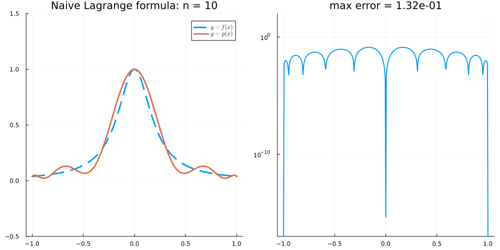
What is happening here?
Underflow! The products \(\prod_{k} (t - x_k)\) and \(\prod_{k\not=j} (x_j - x_k)\) are of size roughly \(2^{-n}\) (and the partial products computed in the code can be even smaller). Around \(n \approx 800\), these partial products fall below the smallest normal double (\(\approx 2.2 \times 10^{-308}\)) into the subnormal range, where precision is lost.
Suppose that \(X = \{ x_0 < ... < x_n \}\) and let \(\ell_j\) be the corresponding Lagrange polynomials. Show that \(\sum_{j=0}^n \ell_j(x) = 1\) for all \(x\).
Let \(s(x) := \sum_{j=0}^n \ell_j(x)\). Each \(\ell_j\) has degree \(n\), so \(s\in\mathcal P_n\). Since \(\ell_j(x_i) = \delta_{ij}\), \[ s(x_k) = \sum_{j=0}^n \delta_{jk} = 1. \] for all \(k=0,\dots,n\). Hence \(s - 1 \in \mathcal P_n\) vanishes at the \(n+1\) distinct points \(x_0,\dots,x_n\), so \(s-1 = 0\) (a nonzero polynomial of degree \(\le n\) has at most \(n\) roots). Thus \(\sum_j \ell_j(x) = 1\) for all \(x\in\mathbb R\).
Equivalently: \(s = \sum_j 1\cdot\ell_j = I_X 1\) is the interpolant of the constant function \(1\), and \(1\in\mathcal P_n\) interpolates itself, so \(I_X1 = 1\) by uniqueness.
Explain why one may instead consider any weights of the form \(w_j := C \lambda_j\) in the Barycentric formula (8.3). Why might this be a good idea? See (8.4) for the weights appearing in the Barycentric formula for Chebyshev nodes of the second kind.
Let \(C\ne0\) be a constant that does not depend on \(j\). The formula does not depend on \(C\): for \(x\not\in X\), \[ \frac{\sum_{j}\frac{C\lambda_j f(x_j)}{x-x_j}}{\sum_{j}\frac{C\lambda_j}{x-x_j}} = \frac{C\sum_{j}\frac{\lambda_j f(x_j)}{x-x_j}}{C\sum_{j}\frac{\lambda_j}{x-x_j}} = \frac{\sum_{j}\frac{\lambda_j f(x_j)}{x-x_j}}{\sum_{j}\frac{\lambda_j}{x-x_j}} = I_Xf(x), \] (the denominator is nonzero because it equals \(1/\ell_X(x)\) by Exercise 8.2).
Why it is a good idea.
- Overflow/underflow. The true weights can be astronomically large or small. For Chebyshev nodes of the second kind \(|\lambda_j| = \frac{2^n}{2n}\) (or \(\frac{2^n}{4n}\)): already
2.0^1024 == Inf, so for large \(n\) the formula would compute \(\mathrm{Inf}/\mathrm{Inf} = \mathrm{NaN}\). - Simplicity. The rescaled Chebyshev weights are known exactly in closed form: no \(O(n^2)\) computation of products and no rounding error in the weights. They are also the same on every interval: the affine map \([-1,1]\to[a,b]\) multiplies every \(\lambda_j\) by the same factor \(\big(\frac{2}{b-a}\big)^n\), which cancels (compare Exercise 8.4, where \(\{0,\frac\pi2,\pi\}\) gets the weights \(\frac12,-1,\frac12\)).
Recall that the degree \(2\) polynomial interpolation of \(f(x) = \sin x\) on \(X = \{ x_0 < x_1 < x_2 \} = \{ 0, \frac\pi2, \pi \}\) is \(I_X f(x) = -\frac4{\pi^2} x(x-\pi)\). Write the Barycentric version of this formula (8.3).
Explain how you would have to update this formula if we added an extra point \(x_{3} = -2\pi\) to the interpolation set.
The Barycentric formula (8.3) depends on the weights \(\lambda_j = \prod_{k\not=j} (x_j-x_k)^{-1}\) which in this case are given by
\[ \begin{align} \lambda_0 &= \frac{1}{(0-\frac\pi2)(0-\pi)} = \frac2{\pi^2}, \nonumber\\ \lambda_1 &= \frac{1}{(\frac\pi2-0)(\frac\pi2 - \pi)} = -\frac4{\pi^2}, \nonumber\\ \lambda_2 &= \frac{1}{(\pi - 0)(\pi-\frac\pi2)} = \frac2{\pi^2} \end{align} \]
(which makes sense because \(\{ 0, \frac\pi2, \pi \}\) are Chebyshev nodes of the second kind scaled to \([0,\pi]\). The scaling only multiplies all of the weights by a common constant, which cancels in the Barycentric formula. In general, the Chebyshev weights can be chosen to be \(\frac12, -1, 1, -1, \dots, (-1)^{n-1}, \frac{(-1)^n}{2}\).)
Since \(f(x_{j}) = 0\) for \(j=0,2\), we have
\[ \begin{align} I_Xf(x) &= \left.\left( \frac{\lambda_0 f(x_0)}{x - x_0} + \frac{\lambda_1 f(x_1)}{x - x_1} + \frac{\lambda_2 f(x_2)}{x - x_2} \right) \middle/ \left( \frac{\lambda_0}{x - x_0} + \frac{\lambda_1}{x - x_1} + \frac{\lambda_2}{x - x_2} \right) \right. \nonumber\\ % &= \left.\left( \frac{-1}{x - \frac\pi2} \right) \middle/ \left( \frac{1/2}{x} + \frac{-1}{x - \frac\pi2} + \frac{1/2}{x - \pi} \right) \right. \end{align} \]
where, in the second line, we have multiplied all of the weights by \(\frac{\pi^2}{4}\) (which does not change the formula) to obtain the weights \(\frac12, -1, \frac12\).
We would have to update \(\lambda_{j}\) by dividing by \(x_{j} - (-2\pi)\) for each \(j=0,1,2\) so we get \(\lambda_0,\lambda_1,\lambda_2 = \frac{1}{\pi^3}, -\frac{8}{5\pi^3}, \frac{2}{3\pi^3}\) and write down
\[ \begin{align} \lambda_3 = \frac{1}{(-2\pi-0)(-2\pi-\frac\pi2)(-2\pi-\pi)} = -\frac{1}{15\pi^3} \end{align} \]
Let \(n = 2\) and let \(X = X_{\mathrm{II}} = \big\{ \cos\frac{j\pi}{2} \big\}_{j=0}^2\) be the Chebyshev nodes of the second kind, so that \(x_0 = 1\), \(x_1 = 0\), and \(x_2 = -1\). Compute \(\lambda_0, \lambda_1, \lambda_2\) directly from the definition \(\lambda_j = \big( \prod_{k\not=j} (x_j - x_k) \big)^{-1}\) and check that they agree with (8.4).
We have \[ \begin{align} \lambda_0 &= \frac{1}{(1 - 0)(1 - (-1))} = \frac12, \nonumber\\ \lambda_1 &= \frac{1}{(0 - 1)(0 - (-1))} = -1, \nonumber\\ \lambda_2 &= \frac{1}{(-1 - 1)(-1 - 0)} = \frac12. \nonumber \end{align} \] With \(n = 2\), (8.4) gives \(\lambda_0 = \frac{2^2}{8} = \frac12\), \(\lambda_1 = (-1)^1 \frac{2^2}{4} = -1\), and \(\lambda_2 = (-1)^2 \frac{2^2}{8} = \frac12\).
In the notes, we claimed that for the Chebyshev nodes \(X_{\mathrm{II}} = \big\{ x_j = \cos\frac{j\pi}{n} \big\}_{j=0}^n\) the barycentric weights \(\lambda_j := \big( \prod_{k\not=j} (x_j - x_k) \big)^{-1}\) are given by
\[ \lambda_j = \begin{cases} \frac{2^{n}}{4n} & \text{if } j = 0 \\ (-1)^j \frac{2^{n}}{2n} & \text{if } j = 1,\dots,n-1 \\ (-1)^n \frac{2^{n}}{4n} & \text{if } j = n \end{cases} \]
Prove the claim as follows:
- Show that \(\lambda_j = 1 / \ell_X'(x_j)\), where \(\ell_X(x) = \prod_{k=0}^n (x - x_k)\) is the node polynomial.
- Show that \(T_n'(\cos\theta) = n \frac{\sin n\theta}{\sin\theta}\). Using Exercise 7.5, deduce that \[ \ell_X(x) = \frac{2^{1-n}}{n} (x^2 - 1) T_n'(x). \]
- By differentiating \(T_n(\cos\theta) = \cos n\theta\) twice, show that \(T_n\) satisfies the Chebyshev differential equation \[ (1 - x^2) T_n''(x) - x T_n'(x) + n^2 T_n(x) = 0. \]
- Let \(w(x) := (x^2-1) T_n'(x)\). Show that \[ w'(x) = x T_n'(x) + n^2 T_n(x). \]
- Compute \(w'(x_j)\) for \(j = 0,\dots,n\) and conclude.
- Explain why we may replace \(\lambda_j\) by \((-1)^j\) (halved for \(j = 0, n\)) in the barycentric formula. Why is this a good idea when \(n\) is large?
For 5, treat the interior nodes and the endpoints separately: \(x_1,\dots,x_{n-1}\) are the points where \(T_n\) attains \(\pm 1\) in \((-1,1)\). For the endpoints, evaluate the differential equation from 3 at \(x = \pm 1\) to find \(T_n'(\pm1)\).
Differentiating \(\ell_X(x) = (x - x_j) \prod_{k\not=j} (x - x_k)\) with the product rule and setting \(x = x_j\) gives \(\ell_X'(x_j) = \prod_{k\not=j} (x_j - x_k) = 1/\lambda_j\).
Differentiating \(T_n(\cos\theta) = \cos n\theta\) gives \(-\sin\theta \, T_n'(\cos\theta) = -n \sin n\theta\). Therefore, with \(x = \cos\theta\), \[ (x^2 - 1) T_n'(x) = -\sin^2\theta \cdot n \frac{\sin n\theta}{\sin \theta} = -n \sin\theta \sin n\theta = \frac{n}{2} \big( T_{n+1}(x) - T_{n-1}(x) \big) \] by Exercise 7.5. Since both sides are polynomials which agree on \([-1,1]\), they are equal, and so \(\ell_X(x) = 2^{-n}\big( T_{n+1}(x) - T_{n-1}(x) \big) = \frac{2^{1-n}}{n} (x^2-1) T_n'(x)\).
Differentiating \(-\sin\theta \, T_n'(\cos\theta) = -n \sin n\theta\) again gives \(\sin^2\theta \, T_n''(\cos\theta) - \cos\theta \, T_n'(\cos\theta) = -n^2 \cos n\theta = -n^2 T_n(\cos\theta)\). With \(x = \cos\theta\) and \(\sin^2\theta = 1 - x^2\), this is the Chebyshev differential equation on \([-1,1]\) and therefore everywhere (both sides are polynomials).
By the product rule, \(w' = 2x T_n' + (x^2-1) T_n''\). By 3, \((x^2-1) T_n'' = n^2 T_n - x T_n'\) and so \(w' = x T_n' + n^2 T_n\).
For \(j = 1,\dots,n-1\), \(T_n(x_j) = \cos j\pi = (-1)^j\) and, since \(x_j\) is an interior maximum or minimum of \(T_n\), \(T_n'(x_j) = 0\). Therefore \(w'(x_j) = n^2 (-1)^j\).
At \(x = 1\), the differential equation gives \(-T_n'(1) + n^2 T_n(1) = 0\) and so \(T_n'(1) = n^2\). Therefore, \(w'(x_0) = w'(1) = n^2 + n^2 = 2n^2\). Similarly, at \(x = -1\), we have \(T_n'(-1) = -n^2 T_n(-1) = (-1)^{n+1} n^2\) and so \(w'(x_n) = w'(-1) = (-1)^n n^2 + (-1)^n n^2 = 2 (-1)^n n^2\).
By 1 and 2, \(\lambda_j = 1 / \ell_X'(x_j) = \frac{n 2^{n-1}}{w'(x_j)}\), which gives \[ \begin{align} \lambda_0 = \frac{n 2^{n-1}}{2n^2} = \frac{2^n}{4n}, \qquad \lambda_j = \frac{n 2^{n-1}}{(-1)^j n^2} = (-1)^j \frac{2^n}{2n}, \qquad \lambda_n = \frac{n 2^{n-1}}{2(-1)^n n^2} = (-1)^n \frac{2^n}{4n}. \nonumber \end{align} \]
- The barycentric formula is unchanged if every \(\lambda_j\) is multiplied by the same constant \(c \not= 0\) (the factor \(c\) cancels between the numerator and the denominator). Taking \(c = \frac{2n}{2^n}\) gives the weights \((-1)^j\), halved for \(j = 0, n\). For large \(n\), \(2^n\) overflows in floating point arithmetic (for example,
2.0^1024 == Inf) whereas the rescaled weights are all of size \(1\) or \(\frac12\).
This exercise is more difficult
Let \(X = \{x_0 < \dots < x_n\}\) be the equispaced nodes on \([-1,1]\): \(x_j = -1 + jh\) for \(j = 0, \dots, n\), where \(h = \frac2n\).
- Show that \(\prod_{k\not= j} (x_j - x_k) = (-1)^{n-j} h^n \, j!\, (n-j)!\), and deduce that the barycentric weights are \[ \lambda_j = \frac{(-1)^{n-j}}{h^n\, n!} \binom{n}{j}. \]
- Using Exercise 8.3, explain why we may use the weights \(w_j := (-1)^j \binom{n}{j}\) in the Barycentric formula (8.3) instead. Compare the ratio \(\max_j |w_j| / \min_j |w_j|\) for these weights with the same ratio for the weights \((-1)^j \tau_j\) for Chebyshev nodes (\(\tau_j = \frac12\) for \(j = 0,n\) and \(\tau_j = 1\) otherwise) as \(n \to \infty\).
- Write a function
EquispacedInterpolant(f, n), analogous toChebyshevInterpolantfrom the notes, which returns the polynomial interpolant offon the equispaced nodes (using the weights \(w_j\) from 2; in Julia,binomial(n, j)computes \(\binom{n}{j}\)). Compute the maximum error \(\max_{t} |f(t) - I_Xf(t)|\) over the gridrange(-1, 1, length=2001)for:- the Runge function \(f(x) = \frac{1}{1 + 25x^2}\) with \(n = 10, 20, 40\),
- \(f(x) = e^x\) with \(n = 10, 20, 40, 60\).
For 1, split the product into the terms with \(k < j\) (where \(x_j - x_k = (j - k)h > 0\)) and the terms with \(k > j\) (where \(x_j - x_k = -(k - j)h < 0\)). For 3, think about how errors of size \(10^{-16}\) in the values \(f(x_j)\) (or in the arithmetic) are amplified when the weights vary by many orders of magnitude.
For \(k < j\), we have \(x_j - x_k = (j-k)h\) and so \(\prod_{k=0}^{j-1} (x_j - x_k) = h^j \, j!\). For \(k > j\), we have \(x_j - x_k = -(k-j)h\) and so \(\prod_{k=j+1}^{n} (x_j - x_k) = (-1)^{n-j} h^{n-j} (n-j)!\). Multiplying gives \(\prod_{k\not= j} (x_j - x_k) = (-1)^{n-j} h^n \, j! \, (n-j)!\) and therefore \[ \lambda_j = \frac{(-1)^{n-j}}{h^n \, j! \, (n-j)!} = \frac{(-1)^{n-j}}{h^n \, n!} \binom{n}{j}. \]
We have \(w_j = C \lambda_j\) with the constant \(C = (-1)^n h^n n!\) (which does not depend on \(j\)), and so the factor \(C\) cancels between the numerator and the denominator of (8.3). The smallest weights are \(|w_0| = |w_n| = 1\) and the largest is \(\binom{n}{\lfloor n/2 \rfloor} \approx 2^n \sqrt{\frac{2}{\pi n}}\). Therefore, the ratio grows exponentially: it is \(252\) for \(n = 10\), about \(1.8 \times 10^5\) for \(n = 20\), and about \(1.2 \times 10^{17}\) for \(n = 60\). For Chebyshev nodes, the ratio is \(2\) for all \(n\).
Lecture 9
Let \(f(x) = e^x\) and \(X = \{\{0, 0, 1\}\}\) (so that \(z_0 = 0\) with \(m_0 = 2\), \(z_1 = 1\) with \(m_1 = 1\), and \(n = 2\)). Find the Hermite interpolant \(p \in \mathcal P_2\) of \(f\) on \(X\) by writing \(p(x) = a_0 + a_1 x + a_2 x^2\) and solving for the coefficients. Compare \(p\) with the Taylor polynomial of degree \(1\) about \(0\) and with the Lagrange interpolant of \(f\) on \(\{0, 1\}\).
We look for \(p(x) = a_0 + a_1 x + a_2 x^2 \in \mathcal P_2\) with \[ \begin{align} p(0) &= f(0) = 1, \nonumber\\ p'(0) &= f'(0) = 1, \nonumber\\ p(1) &= f(1) = e. \nonumber \end{align} \] Since \(p'(x) = a_1 + 2a_2 x\), the first two conditions give \(a_0 = 1\) and \(a_1 = 1\). The third gives \(1 + 1 + a_2 = e\), so \(a_2 = e - 2\) and \[ p(x) = 1 + x + (e - 2) x^2. \]
Code
p_H(x) = 1 + x + (ℯ - 2)*x^2 # Hermite X = {{0, 0, 1}}
p_T(x) = 1 + x # Taylor (or Hermite on X = {{0,0}})
p_L(x) = 1 + (exp(1) - 1)*x # Lagrange X ={0,1}
plot(exp, -0.5, 1.5; label=L"y = e^x", lw=2, linestyle=:dash)
plot!(p_H, -0.5, 1.5; label="Hermite", lw=3)
plot!(p_T, -0.5, 1.5; label="Taylor", lw=2)
plot!(p_L, -0.5, 1.5; label="Lagrange", lw=2)
scatter!([0, 1], [1, ℯ]; markersize=5, primary=false)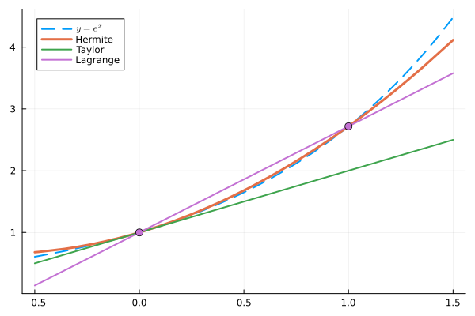
What is the least degree polynomial interpolant on \(X = \{\{x_0, x_0, \dots, x_0\}\}\) (where \(x_0\) is repeated \(n+1\) times)?
The Taylor polynomial \[ T_f(x) = \sum_{j=0}^n \frac{f^{(j)}(x_0)}{j!} (x - x_0)^j \in \mathcal P_n \] satisfies \(T_f^{(l)}(x_0) = f^{(l)}(x_0)\) for \(l = 0, \dots, n\). So Hermite interpolation on a single node repeated \(n+1\) times is Taylor expansion, and Lagrange interpolation (all \(m_j = 1\)) is the other extreme.
Return to Exercise 9.1: compute the Hermite interpolant of \(f(x) = e^x\) on \(\{\{0, 0, 1\}\}\) again, this time using the divided difference table and Theorem 9.3.
With \(x_0 = x_1 = 0\) and \(x_2 = 1\), the divided difference table is
\[ \begin{array}{c|ccc} x_j & f(x_j) & \text{1st} & \text{2nd} \\ \hline 0 & 1 & & \\ & & 1 & \\ 0 & 1 & & e - 2 \\ & & e - 1 & \\ 1 & e & & \end{array} \]
where \(f[0,0] = f'(0) = 1\) (the nodes are equal), \(f[0,1] = \frac{e - 1}{1 - 0} = e - 1\), and \(f[0,0,1] = \frac{f[0,1] - f[0,0]}{1 - 0} = e - 2\). With \(\pi_1(x) = x\) and \(\pi_2(x) = x^2\), the Newton form is \[ p(x) = 1 + 1 \cdot x + (e - 2) x^2, \] which agrees with Exercise 9.1. This time we did not need to solve a linear system, and adding another condition (for example \(p'(1) = f'(1)\)) only adds one new row to the table and one new term to \(p\) (see Exercise 9.7).
What is the Hermite interpolant of \(f(x) = \sin x\) on \(\{\{ 0,0,\pi, \pi\}\}\)? Hint: you can compute the divided difference tables in the same way as before.
With \(x_0 = x_1 = 0\) and \(x_2 = x_3 = \pi\), the divided difference table is
\[ \begin{array}{c|cccc} x_j & f(x_j) & \text{1st} & \text{2nd} & \text{3rd} \\ \hline 0 & 0 & & & \\ & & 1 & & \\ 0 & 0 & & -\frac{1}{\pi} & \\ & & 0 & & 0 \\ \pi & 0 & & -\frac{1}{\pi} & \\ & & -1 & & \\ \pi & 0 & & & \end{array} \]
where
\[ \begin{align} f[0,0] &= f'(0) = \cos 0 = 1, \nonumber\\ f[0,\pi] &= \frac{\sin \pi - \sin 0}{\pi - 0} = 0, \nonumber\\ f[\pi,\pi] &= f'(\pi) = \cos \pi = -1, \nonumber\\ f[0,0,\pi] &= \frac{f[0,\pi] - f[0,0]}{\pi - 0} = -\frac1\pi, \nonumber\\ f[0,\pi,\pi] &= \frac{f[\pi,\pi] - f[0,\pi]}{\pi - 0} = -\frac1\pi, \nonumber\\ f[0,0,\pi,\pi] &= \frac{f[0,\pi,\pi] - f[0,0,\pi]}{\pi - 0} = 0. \nonumber \end{align} \]
By Theorem 9.3 (with \(\pi_1 = x\), \(\pi_2 = x^2\), \(\pi_3 = x^2(x-\pi)\)),
\[ \begin{align} p(x) &= 0 + 1 \cdot x - \frac1\pi x^2 + 0 \cdot x^2(x-\pi) \nonumber\\& = x - \frac{x^2}{\pi}. \end{align} \]
Check: \(p(0) = 0\), \(p'(0) = 1\), \(p(\pi) = 0\), and \(p'(\pi) = 1 - 2 = -1\). The interpolant has degree \(2\) (not \(3\)) because the leading divided difference happens to vanish (by symmetry of \(\sin\) about \(\frac\pi2\)).
Code
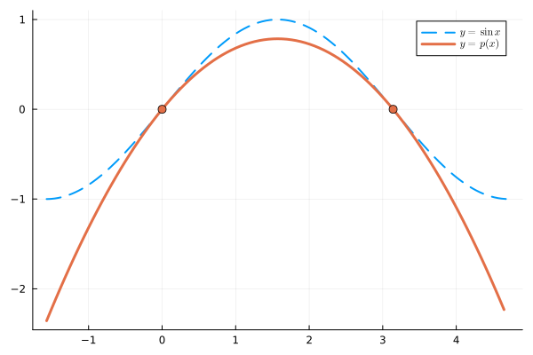
In this exercise, we prove Theorem 9.1. As in the notes, let \(z_0, \dots, z_k\) be distinct nodes with multiplicities \(m_0, \dots, m_k \geq 1\), and let \(n + 1 = \sum_{j=0}^k m_j\).
- Let \(r \in \mathcal P_n\) and suppose that \(r^{(l)}(z) = 0\) for \(l = 0, \dots, m-1\). Show that \(r(x) = (x - z)^m s(x)\) for some polynomial \(s\).
- Suppose that \(r \in \mathcal P_n\) satisfies \(r^{(l)}(z_j) = 0\) for all \(l = 0,\dots,m_j - 1\) and \(j = 0,\dots,k\). Show that \(r = 0\).
- Deduce that the Hermite interpolation problem has at most one solution in \(\mathcal P_n\).
- Consider the map \(L : \mathcal P_n \to \mathbb R^{n+1}\) defined by \(L p := \big( p^{(l)}(z_j) \big)_{j = 0,\dots,k, \; l = 0, \dots, m_j - 1}\). Show that \(L\) is linear and injective, and conclude that the Hermite interpolation problem has exactly one solution in \(\mathcal P_n\).
1. Write \(r\) as its Taylor polynomial about \(z\) (which is exact because \(r\) is a polynomial). 2. Apply 1 at \(z_0\) and then show that \(s\) still has zeros of order \(m_j\) at \(z_j\) for \(j \geq 1\). 4. Use the fact that injective linear maps between vector spaces of the same finite dimension is also surjective.
Since \(r \in \mathcal P_n\), Taylor’s theorem is exact: \[ \begin{align} r(x) &= \sum_{l=0}^n \frac{r^{(l)}(z)}{l!} (x - z)^l \nonumber\\ &= \sum_{l=m}^n \frac{r^{(l)}(z)}{l!} (x - z)^l \nonumber\\ &= (x-z)^m s(x) \end{align} \] where \(s(x) := \sum_{l=m}^n \frac{r^{(l)}(z)}{l!} (x - z)^{l-m}\).
By 1, \(r(x) = (x - z_0)^{m_0} s_0(x)\). Fix \(j \geq 1\) and write \(u(x) := (x - z_0)^{m_0}\) (with \(u(z_j) \not= 0\)). By the Leibniz rule, \[ \begin{align} r^{(l)}(z_j) &= \sum_{i=0}^l \binom{l}{i} u^{(l-i)}(z_j) \, s_0^{(i)}(z_j) \nonumber\\ &= u(z_j) \, s_0^{(l)}(z_j) + \sum_{i=0}^{l-1} \binom{l}{i} u^{(l-i)}(z_j) \, s_0^{(i)}(z_j). \end{align} \] By induction on \(l = 0, \dots, m_j - 1\), we obtain \(s_0^{(l)}(z_j) = 0\). Therefore, \(s_0\) satisfies the same conditions at \(z_1, \dots, z_k\) and, repeating the argument, we have \[ r(x) = (x - z_0)^{m_0} (x - z_1)^{m_1} \cdots (x - z_k)^{m_k} s(x) \] for some polynomial \(s\). If \(s \not= 0\), then \(r\) has degree at least \(\sum_j m_j = n+1\), which contradicts \(r \in \mathcal P_n\). Therefore \(s = 0\) and \(r = 0\).
If \(p, q \in \mathcal P_n\) both solve the Hermite interpolation problem, then \(r := p - q \in \mathcal P_n\) satisfies \(r^{(l)}(z_j) = f^{(l)}(z_j) - f^{(l)}(z_j) = 0\) for all \(j\) and \(l = 0, \dots, m_j-1\). By 2, \(r = 0\) and so \(p = q\).
Differentiation and evaluation are linear and so \(L\) is linear. If \(L p = 0\), then \(p = 0\) by 2, and so \(L\) is injective. Since \(\dim \mathcal P_n = n + 1 = \dim \mathbb R^{n+1}\), the rank-nullity theorem shows that \(L\) is also surjective. In particular, there exists \(p \in \mathcal P_n\) with \(L p = \big( f^{(l)}(z_j) \big)_{j,l}\), which is exactly a solution to the Hermite interpolation problem. By 3, this solution is unique.
This exercise is more difficult
In this exercise, we prove the error estimate for Hermite interpolation (compare with the Lagrange case in Lecture 6). We say that \(g\) has a zero of order \(m\) at \(z\) if \(g(z) = g'(z) = \dots = g^{(m-1)}(z) = 0\).
- (Rolle’s theorem with multiplicities) Suppose that \(g \in C^1([a,b])\) has zeros at distinct points \(w_1 < \dots < w_r\) in \([a,b]\) of orders \(k_1, \dots, k_r\), and let \(N := k_1 + \dots + k_r\). Show that \(g'\) has zeros in \([w_1, w_r]\) whose orders add up to at least \(N - 1\).
- Let \(f \in C^{n+1}([a,b])\), let \(X = \{\{x_0, \dots, x_n\}\} \subset [a,b]\) be a multiset, and let \(p \in \mathcal P_n\) be the Hermite interpolant of \(f\) on \(X\). Define the node polynomial \(\ell_X(x) := (x - x_0)(x - x_1) \cdots (x - x_n)\) (so repeated nodes give repeated factors). Show that, for every \(x \in [a,b]\), there exists \(\xi_x \in [\min (\{x\} \cup X), \max (\{x\} \cup X)]\) with \[ f(x) - p(x) = \frac{f^{(n+1)}(\xi_x)}{(n+1)!} \ell_X(x). \]
- At each \(w_i\) the derivative \(g'\) has a zero of order \(k_i - 1\), and Rolle’s theorem gives one more zero strictly between each pair \(w_i < w_{i+1}\).
- Copy the proof from Lecture 6: for \(x \not\in X\), consider \[ g(t) := f(t) - p(t) - \big[ f(x) - p(x) \big] \frac{\ell_X(t)}{\ell_X(x)} \] and count its zeros with their orders.
At each \(w_i\), \(g'\) has a zero of order \(k_i - 1\) (because \(g', \dots, g^{(k_i-1)}\) vanish at \(w_i\)). Moreover, for each \(i = 1, \dots, r-1\), \(g(w_i) = g(w_{i+1}) = 0\) and so, by Rolle’s theorem, \(g'\) has a zero in \((w_i, w_{i+1})\), which is different from all of the \(w_i\). Adding these up, the orders of the zeros of \(g'\) in \([w_1, w_r]\) add up to at least \[ \sum_{i=1}^r (k_i - 1) + (r - 1) = N - 1. \]
If \(x \in X\), then both sides are zero (take any \(\xi_x\)). Otherwise \(\ell_X(x) \not= 0\) and we can define \[ g(t) := f(t) - p(t) - \big[ f(x) - p(x) \big] \frac{\ell_X(t)}{\ell_X(x)}. \] Then \(g \in C^{n+1}\). If \(z\) appears \(m\) times in \(X\), then \(f - p\) has a zero of order \(m\) at \(z\) (by the Hermite conditions) and so does \(\ell_X\) (it contains the factor \((t - z)^m\)). Therefore \(g\) has a zero of order \(m\) at \(z\). Moreover, \(g(x) = 0\). So the orders of the zeros of \(g\) add up to (at least) \((n + 1) + 1 = n + 2\). Applying 1 \(n+1\) times, \(g^{(n+1)}\) has a zero \(\xi_x\) in \([\min (\{x\} \cup X), \max (\{x\} \cup X)]\). Since \(p \in \mathcal P_n\) and \(\ell_X\) is monic of degree \(n + 1\), we have \(p^{(n+1)} = 0\) and \(\ell_X^{(n+1)} = (n+1)!\), and so \[ 0 = g^{(n+1)}(\xi_x) = f^{(n+1)}(\xi_x) - \big[ f(x) - p(x) \big] \frac{(n+1)!}{\ell_X(x)}. \] Rearranging gives the result.
This exercise is more difficult
Let \(X = \{\{0, 0, 1, 1\}\}\) and suppose that we know \(f(0) = y_0\), \(f'(0) = s_0\), \(f(1) = y_1\) and \(f'(1) = s_1\).
- Compute the divided difference table and show that the Hermite interpolant of \(f\) on \(X\) is \[ \begin{align} p(x) &= y_0 + s_0 x + (d - s_0) x^2 + (s_0 + s_1 - 2d) \, x^2 (x - 1) \end{align} \] where \(d := y_1 - y_0\).
- Write down \(p\) for \(f(x) = e^x\) and compare it with Exercise 9.1.
- Use Exercise 9.6 to show that \(\max_{x \in [0,1]} |e^x - p(x)| \leq \frac{e}{384}\).
- More generally, suppose that \(p\) is the Hermite interpolant of \(f\) on \(\{\{a, a, b, b\}\}\). Show that \(\max_{x \in [a,b]} |f(x) - p(x)| \leq \frac{(b-a)^4}{384} \max_{[a,b]} |f^{(4)}|\). What does this tell you about approximating \(f\) on \([a,b]\) by a cubic Hermite interpolant on each \(n\) subintervals of length \(h = \frac{b-a}{n}\)?
With \(x_0 = x_1 = 0\) and \(x_2 = x_3 = 1\), the table is \[ \begin{array}{c|cccc} x_j & f(x_j) & \text{1st} & \text{2nd} & \text{3rd} \\ \hline 0 & y_0 & & & \\ & & s_0 & & \\ 0 & y_0 & & d - s_0 & \\ & & d & & s_0 + s_1 - 2d \\ 1 & y_1 & & s_1 - d & \\ & & s_1 & & \\ 1 & y_1 & & & \end{array} \] since \(f[0,0] = f'(0) = s_0\), \(f[0,1] = \frac{y_1 - y_0}{1 - 0} = d\), \(f[1,1] = f'(1) = s_1\), \(f[0,0,1] = \frac{d - s_0}{1 - 0}\), \(f[0,1,1] = \frac{s_1 - d}{1 - 0}\), and \(f[0,0,1,1] = (s_1 - d) - (d - s_0)\). By Theorem 9.3 with \(\pi_1 = x\), \(\pi_2 = x^2\) and \(\pi_3 = x^2(x-1)\), we get the formula for \(p\). (Check: \(p(1) = y_0 + s_0 + d - s_0 = y_1\) and \(p'(1) = s_0 + 2(d - s_0) + (s_0 + s_1 - 2d) = s_1\).)
Here \(y_0 = s_0 = 1\), \(y_1 = s_1 = e\) and \(d = e - 1\), so \[ p(x) = 1 + x + (e - 2) x^2 + (3 - e) \, x^2 (x - 1). \] The first three terms are exactly the interpolant from Exercise 9.1 on \(\{\{0, 0, 1\}\}\): adding the condition \(p'(1) = f'(1)\) only adds one new term to the Newton form.
By Exercise 9.6, \(e^x - p(x) = \frac{e^{\xi_x}}{4!} x^2 (x-1)^2\) for some \(\xi_x \in [0,1]\). The function \(x(1 - x)\) has maximum \(\frac14\) on \([0,1]\) (at \(x = \frac12\)), and so \(|e^x - p(x)| \leq \frac{e}{24} \cdot \frac{1}{16} = \frac{e}{384} \approx 7.1 \times 10^{-3}\). (Numerically, the maximum error is about \(4.4 \times 10^{-3}\).)
In the same way, \(|f(x) - p(x)| \leq \frac{\max |f^{(4)}|}{24} (x - a)^2 (x - b)^2\) and \((x-a)(b-x) \leq \big(\frac{b - a}{2}\big)^2\), which gives the bound \(\frac{(b-a)^4}{16 \cdot 24} \max |f^{(4)}|\). On \(n\) subintervals of length \(h\), the error is at most \(\frac{h^4}{384} \max_{[a,b]} |f^{(4)}|\): halving \(h\) divides the error bound by \(16\). Moreover, neighbouring cubics share their values and slopes at the break points, so the resulting piecewise cubic is continuously differentiable. (This is piecewise cubic Hermite interpolation.)
- Let \(f \in C^n([a,b])\) and let \(X = \{\{x_0, \dots, x_n\}\} \subset [a,b]\) be a multiset. Show that there exists \(\xi \in [\min X, \max X]\) with \[ f[x_0, \dots, x_n] = \frac{f^{(n)}(\xi)}{n!}. \]
- Deduce that \(f[x_0, x_0 + h] \to f'(x_0)\) and, more generally, \[ f[x_0, x_0 + h, \dots, x_0 + nh] \to \frac{f^{(n)}(x_0)}{n!} \] as \(h \to 0\). Explain why this makes the first case of Theorem 9.2 a natural definition.
- Let \(p\) be the Hermite interpolant of \(f\) on \(X\) and apply part 1 of Exercise 9.6 to \(g := f - p\). What is \(p^{(n)}\)?
Let \(p \in \mathcal P_n\) be the Hermite interpolant of \(f\) on \(X\). Then \(g := f - p\) has zeros whose orders add up to \(n + 1\) (a zero of order \(m\) at each node appearing \(m\) times). Applying part 1 of Exercise 9.6 \(n\) times, \(g^{(n)}\) has a zero \(\xi \in [\min X, \max X]\). Since \(p(x) = f[x_0, \dots, x_n] x^n + q(x)\) with \(q \in \mathcal P_{n-1}\), we have \(p^{(n)} = n! \, f[x_0,\dots,x_n]\) and so \(0 = f^{(n)}(\xi) - n! \, f[x_0, \dots, x_n]\). (If all the nodes are equal, then \(\xi = x_0\) and this is the first case of Theorem 9.2.)
By 1, \(f[x_0, x_0 + h, \dots, x_0 + nh] = \frac{f^{(n)}(\xi_h)}{n!}\) for some \(\xi_h\) between \(x_0\) and \(x_0 + nh\). As \(h \to 0\), \(\xi_h \to x_0\) and, since \(f^{(n)}\) is continuous, \(f^{(n)}(\xi_h) \to f^{(n)}(x_0)\). So the divided difference on \(n+1\) nearby nodes converges to \(\frac{f^{(n)}(x_0)}{n!}\) as the nodes merge. Defining \(f[x_0, \dots, x_0] := \frac{f^{(n)}(x_0)}{n!}\) makes the divided difference continuous in the nodes, and Hermite interpolation is the limit of Lagrange interpolation as nodes come together.
This exercise is more difficult
- Write a Julia function
hermite_dd(x, df)which takes a vector of nodesx(sorted so that equal nodes are next to each other) and a functiondf(l, z)returning \(f^{(l)}(z)\), and returns the Newton coefficients \(f[x_0], f[x_0,x_1], \dots, f[x_0,\dots,x_n]\) using the divided difference table. - Write a function
newton_eval(c, x, t)which evaluates \(\sum_{k=0}^n c_k \pi_k(t)\) using \(O(n)\) operations. - Check your code against Exercise 9.1, Exercise 9.4, and Exercise 9.7, and compute \(\max_{t \in [0,1]} |e^t - p(t)|\) for the cubic Hermite interpolant of \(e^x\) on \(\{\{0,0,1,1\}\}\).
- Use nested multiplication (Horner’s method): \(c_0 + (t - x_0)\big(c_1 + (t - x_1)\big(c_2 + \cdots\big)\big)\).
Code
function hermite_dd( x, df )
n = length(x) - 1
T = zeros(n+1, n+1) # T[j+1, k+1] = f[x_j, ..., x_{j+k}]
for j ∈ 0:n
T[j+1, 1] = df(0, x[j+1])
end
for k ∈ 1:n, j ∈ 0:(n-k)
if x[j+k+1] == x[j+1] # all nodes equal
T[j+1, k+1] = df(k, x[j+1]) / factorial(k)
else
T[j+1, k+1] = (T[j+2, k] - T[j+1, k]) / (x[j+k+1] - x[j+1])
end
end
return T[1, :] # top diagonal
end
function newton_eval( c, x, t )
p = c[end]
for k ∈ (length(c)-1):-1:1
p = c[k] + (t - x[k]) * p
end
return p
end
dsin(l, z) = (sin(z), cos(z), -sin(z), -cos(z))[l % 4 + 1]
dexp(l, z) = exp(z)
X = [0, 0, 1, 1]
c = hermite_dd(X, dexp)
t = range(0, 1, length=10001)
err = maximum( abs.( exp.(t) .- newton_eval.(Ref(c), Ref(X), t) ) )
println("Hermite-1, e^x on {{0,0,1}}:")
println(" computed: ", hermite_dd([0, 0, 1], dexp))
println(" exact: ", [1, 1, ℯ - 2])
println("Hermite-2, sin x on {{0,0,π,π}}:")
println(" computed: ", hermite_dd([0, 0, π, π], dsin))
println(" exact: ", [0, 1, -1/π, 0])
println("Cubic Hermite, e^x on {{0,0,1,1}}:")
println(" computed: ", c)
println(" exact: ", [1, 1, ℯ - 2, 3 - ℯ])
println("max |e^t - p(t)| on [0,1] = ", err, " (bound e/384 = ", ℯ/384, ")")Hermite-1, e^x on {{0,0,1}}:
computed: [1.0, 1.0, 0.7182818284590451]
exact: [1.0, 1.0, 0.7182818284590451]
Hermite-2, sin x on {{0,0,π,π}}:
computed: [0.0, 1.0, -0.3183098861837907, 0.0]
exact: [0.0, 1.0, -0.3183098861837907, 0.0]
Cubic Hermite, e^x on {{0,0,1,1}}:
computed: [1.0, 1.0, 0.7182818284590451, 0.2817181715409549]
exact: [1.0, 1.0, 0.7182818284590451, 0.2817181715409549]
max |e^t - p(t)| on [0,1] = 0.004371001067176472 (bound e/384 = 0.007078858928278763)
The table needs \(O(n^2)\) operations and newton_eval needs \(O(n)\) operations per point.
Lecture 10
- Compute the divided difference table for \(f(x) = x^2\) on \(\{0, 1, 2\}\) and write down the Newton form of the interpolant. What do you notice?
- What are \(f[x_0, x_0]\) and \(f[x_0, x_0, x_0]\)?
- Why do we prefer the barycentric formula (8.3) to the naive Lagrange formula?
- What is the Hermite interpolant of \(f\) on \(\{\{a, a\}\}\)? How many conditions does the Hermite interpolant on \(\{\{0, 0, 1\}\}\) satisfy, and what is its degree?
- The next iterate of Newton’s method is the root of which interpolant of \(f\)? What about the secant method?
- \(f[0] = f(0) = 0\), \(f[1] = f(1) = 1\), \(f[2] = f(2) = 4\); \(f[0,1] = \frac{f(1)-f(0)}{1-0} = 1\), \(f[1,2] = \frac{f(1)-f(2)}{1-2} = 3\); \(f[0,1,2] = \frac{f[1,2] - f[0,1]}{2-0} = \frac{3 - 1}{2 - 0} = 1\). So \(p(x) = 0 + 1 \cdot x + 1 \cdot x(x-1) = x^2\): the interpolant is \(f\) itself, as it must be since \(f \in \mathcal P_2\).
- \(f[x_0, x_0] = f'(x_0)\) and \(f[x_0, x_0, x_0] = \frac{f''(x_0)}{2}\).
- Once the weights are known, the barycentric formula costs \(O(n)\) operations per evaluation (the naive formula costs \(O(n^2)\)), it is numerically stable, and the weights may be rescaled to avoid overflow/underflow (Exercise 8.1, Exercise 8.3).
- The tangent line \(p(x) = f(a) + f'(a)(x - a)\) (the degree \(1\) Taylor polynomial). On \(\{\{0,0,1\}\}\) there are \(3\) conditions (\(p(0) = f(0)\), \(p'(0) = f'(0)\), \(p(1) = f(1)\)) and \(p \in \mathcal P_2\).
- Newton: \(x_{n+1}\) is the root of the Hermite interpolant on \(\{\{x_n, x_n\}\}\) (the tangent line). Secant: \(x_{n+1}\) is the root of the Lagrange interpolant on \(\{x_{n-1}, x_n\}\) (the secant line).
Can you compute \(\int_0^1 e^{-x^2} \,\mathrm{d}x\) or \(\int_0^1 \frac{\sin x}{x} \,\mathrm{d}x\) exactly?
No: neither integrand has an antiderivative that can be written in terms of elementary functions. (Also, in practice we may only know \(f\) at some points.) This is why we need quadrature rules.
(One defines
\[\begin{align} \mathrm{erf}(x) &:= \frac{2}{\sqrt{\pi}} \int_0^x e^{-t^2} \mathrm{d}t \nonumber\\ % \mathrm{Si}(x) &:= \int_0^x \frac{\sin t}{t} \mathrm{d}t \end{align}\]
with \(\lim_{x\to\infty}\mathrm{erf}(x)=1\) and \(\mathrm{Si}(x) \to \frac{\pi}{2}\).)
Show that \(\int_0^{2\pi} \frac{1}{2\pi}(x + x \sin x) \,\mathrm{d}x = \pi - 1\).
Integrating by parts gives
\[\begin{align} \int_0^{2\pi} x \sin x \,\mathrm{d}x % &= \int_0^{2\pi} x (-\cos' x) \,\mathrm{d}x \nonumber\\ % &= \big[ -x \cos x \big]_0^{2\pi} + \int_0^{2\pi} \cos x \,\mathrm{d}x \nonumber\\ % &= -2\pi. \end{align}\]
Therefore the integral of \((x+x\sin x)/2\pi\) on \([0,2\pi]\) is \(\frac{1}{2\pi} \big( 2\pi^2 - 2\pi \big) = \pi - 1\).
Write down the interpolation error formula for \(f - p\) when \(p\) interpolates \(f\) on \(n+1\) nodes (Theorem 6.2). What does it say when \(n = 0\) and \(X = \{a\}\)?
We have: for \(x\), there exists \(\xi_x\) between \(\min\{ x, \min X\}\) and \(\max\{x,\max X\}\) such that
\[\begin{align} f(x) - p(x) &= \frac{f^{(n+1)}(\xi_x)}{(n+1)!} \ell_X(x) \end{align}\]
where \(\ell_X\) is the node polynomial on \(X\). For \(n = 0\) and \(X = \{a\}\), \(p = f(a)\) and this reads \(f(x) - f(a) = f'(\xi_x)(x - a)\) for some \(\xi_x\) between \(a\) and \(x\) (which is just the mean value theorem)
Suppose \(f \in C^1([a,b])\). Show that
\[ \begin{align} \left| \int_{a}^b f - (b-a) f(a) \right| \leq \| f'\|_{L^\infty([a,b])} \frac{(b-a)^2}{2}. \end{align} \]
Since \(p_0\) is a degree zero interpolating polynomial, we may apply the error bound we had for interpolation (Theorem 6.2):
\[ \begin{align} f(x) - p_0(x) = f'(\xi_x) (x - a) \end{align} \]
for some \(\xi_x \in [a, x]\) (in this case, this is just the mean value theorem). Therefore, integrating this over \([a,b]\), we have the bound
\[ \begin{align} \left| \int_{a}^b \big[ f(x) - p_0(x) \big] \mathrm{d}x \right| % &\leq \| f'\|_{L^\infty([a,b])} \int_a^b |x - a| \mathrm{d}x \nonumber\\ &= \| f'\|_{L^\infty([a,b])} \int_{0}^{b-a} t \,\mathrm{d}t \nonumber\\ % &= \| f'\|_{L^\infty([a,b])} \frac{(b-a)^2}{2}. \nonumber \end{align} \]
Approximate \(\int_0^1 x \,\mathrm{d}x\) by the composite rectangular rule with \(n\) subintervals of equal length. What is the error?
First, note that \(\int_0^1 x \mathrm{d}x = \frac12\).
The composite rectangular rule on \([0,1]\) is \(\frac1n \sum_{j=0}^{n-1} \frac{j}{n} = \frac{n-1}{2n} = \frac12 - \frac{1}{2n}\), so the error is exactly \(\frac{1}{2n}\): the rate \(O(n^{-1})\) of Theorem 10.1 (and the constant \(\frac{\|f'\|_{L^\infty}}{2}(b-a)^2 = \frac12\) is attained).
- Write down the polynomial \(p_1\) of degree at most \(1\) interpolating \(f\) on \(X = \{a, b\}\).
- Show that \(\int_a^b p_1(x) \,\mathrm{d}x = \frac{b-a}{2} \big( f(a) + f(b) \big)\).
You can either go through the details in the integration, or draw a picture and calculate the area of the trapezium with points \((a,0), (a,f(a)), (b, f(b)), (b,0)\). If you do the integration explicitly, the Newton form is probably slightly easier…
Lagrange form:
We have \(p_1(x) = \frac{x-b}{a-b}f(a) + \frac{x-a}{b-a} f(b)\).
We have \[ \begin{align} \int_a^b \frac{x-b}{a-b} \,\mathrm{d}x % &= \frac{1}{a-b} \Big[ \frac{(x-b)^2}{2} \Big]_a^b % \nonumber\\ % &= - \frac{(a-b)^2}{2(a-b)} = \frac{b-a}{2} \nonumber\\ \int_a^b \frac{x-a}{b-a} \,\mathrm{d}x &= \frac{1}{b-a} \Big[ \frac{(x-a)^2}{2} \Big]_a^b \nonumber\\ &= \frac{b-a}{2}, \nonumber \end{align} \] and so \(\int_a^b p_1 = \frac{b-a}{2} f(a) + \frac{b-a}{2} f(b)\).
Newton form:
- \(p_1(x) = f(a) + \frac{f(b)-f(a)}{b-a} (x-a)\),
- Integrating gives \[ \begin{align} \int_a^b (x-a) \mathrm{d}x &= \frac12 (x-a)^2\Big|_a^b \nonumber\\ % &= \frac12 (b-a)^2 \end{align} \] and the result follows.
What is the sign of \((x-a)(x-b)\) on \([a,b]\)? Compute \(\int_a^b |(x-a)(x-b)| \,\mathrm{d}x\).
Make the substitution \(t := x - \frac{a+b}{2}\) and define \(h := b-a\).
We have \((x-a)(x-b) \leq 0\) on \([a,b]\), so
\[\begin{align} \int_a^b |(x-a)(x-b)| \,\mathrm{d}x % &= -\int_a^b (x-a)(x-b) \,\mathrm{d}x \nonumber\\ % &= \int_{-h/2}^{h/2} \big( \tfrac{h^2}{4} -t^2 \big) \mathrm{d}t \nonumber\\ % &= \tfrac{h^3}{4} - \Big[ \frac{t^3}{3} \Big]_{-h/2}^{h/2} \nonumber\\ % &= \tfrac{h^3}{4} - \frac{h^3}{12} \nonumber\\ % &= \frac{(b-a)^3}{6}. \end{align}\]
The midpoint rule is \(\int_a^b f \approx (b-a) f\big(\tfrac{a+b}{2}\big)\).
- Show that the midpoint rule is exact for all polynomials of degree at most \(1\).
- Suppose \(f \in C^2([a,b])\). Show that \[ \left| \int_a^b f - (b-a) f\big(\tfrac{a+b}{2}\big) \right| \leq \frac{\|f''\|_{L^\infty([a,b])}}{24} (b-a)^3. \]
- Write down the composite midpoint rule on \(n\) subintervals of equal length and show that its error is bounded by \(\frac{\|f''\|_{L^\infty([a,b])}}{24} \frac{(b-a)^3}{n^2}\). Compare with Theorem 10.3.
For 2, use Taylor’s theorem about \(m = \frac{a+b}{2}\):
\[\begin{align} f(x) = f(m) + f'(m)(x - m) + \frac{f''(\xi_x)}{2}(x-m)^2. \end{align}\]
Let \(m = \frac{a+b}{2}\).
For \(f = 1\): \(\int_a^b 1 = b - a = (b-a) \cdot 1\). For \(f = x - m\): \[ \begin{align} \int_a^b (x - m) \,\mathrm{d}x &= 0 \nonumber\\ % &= (b-a)(m - m). \end{align} \]
By Taylor’s theorem, \[ \begin{align} f(x) = f(m) + f'(m)(x-m) + \frac{f''(\xi_x)}{2} (x-m)^2 \end{align} \] for some \(\xi_x\) between \(m\) and \(x\). Integrating and using \(\int_a^b (x - m) \,\mathrm{d}x = 0\), \[ \begin{align} \left| \int_a^b f - (b-a) f(m) \right| % &= \left| \int_a^b \frac{f''(\xi_x)}{2} (x-m)^2 \,\mathrm{d}x \right| \nonumber\\ % &\leq \frac{\|f''\|_{L^\infty([a,b])}}{2} \int_a^b (x - m)^2 \,\mathrm{d}x \nonumber\\ % &= \frac{\|f''\|_{L^\infty([a,b])}}{2} \frac{(b-a)^3}{12}. \end{align} \]
With \(x_j = a + j \frac{b-a}{n}\), the composite rule is \(\frac{b-a}{n} \sum_{j=0}^{n-1} f\big( \frac{x_j + x_{j+1}}{2} \big)\). Applying 2 on each subinterval of length \(\frac{b-a}{n}\) and summing the \(n\) errors gives \[ \begin{align} n \cdot \frac{\|f''\|_{L^\infty([a,b])}}{24} \Big( \frac{b-a}{n} \Big)^3 % &= \frac{\|f''\|_{L^\infty([a,b])}}{24} \frac{(b-a)^3}{n^2}. \end{align} \] This is the same rate \(O(n^{-2})\) as the composite trapezoid rule, but with half the constant (and one fewer function evaluation).
Let \(x_0, \dots, x_n \in [a,b]\) be distinct and let \(w_j = \int_a^b \ell_j\) be the weights in (10.2).
- Show that \(\{w_j\}\) are the unique weights for which \(\sum_{j=0}^n w_j f(x_j)\) is exact for all \(f \in \mathcal P_n\).
- Show that \(\sum_{j=0}^n w_j = b - a\).
- Let \(\hat x_j \in [0,1]\) and let \(\hat w_j\) be the corresponding weights on \([0,1]\). Show that the nodes \(x_j = a + (b-a) \hat x_j\) on \([a,b]\) have weights \(w_j = (b-a) \hat w_j\).
- Suppose the nodes are symmetric: \(x_{n-j} = a + b - x_j\) for all \(j\). Show that \(w_{n-j} = w_j\).
- What happens if you apply the rule to \(f(x) = \ell_j(x)\)?
- What happens if you apply the rule to \(f(x) = 1\)?
- Use \(w_j = \int_a^b \ell_j\),
- Show that \(\ell_{n-j}(x) = \ell_j(a + b - x)\) by checking the values of both sides at the nodes.
If \(f \in \mathcal P_n\) then \(f\) is its own interpolant, \(f = \sum_j \ell_j f(x_j)\), and so \(\int_a^b f = \sum_j w_j f(x_j)\) and the rule is exact. Conversely, if \(\sum_j v_j f(x_j)\) is exact on \(\mathcal P_n\), then applying it to \(\ell_j \in \mathcal P_n\) gives \(v_j = \sum_k v_k \ell_j(x_k) = \int_a^b \ell_j = w_j\), as required.
Apply 1 to \(f = 1\): \(b - a = \int_a^b 1 = \sum_j w_j\).
Write \(x = a + (b-a) t\). Since \(x - x_j = (b-a)(t - \hat x_j)\), we have \[ \begin{align} \ell_j(x) &= \prod_{k \not= j} \frac{x - x_k}{x_j - x_k} \nonumber\\ % &= \prod_{k\not=j} \frac{t - \hat x_k}{\hat x_j - \hat x_k} \nonumber\\ % &= \hat \ell_j(t). \end{align} \] Therefore \[ \begin{align} w_j = \int_a^b \ell_j(x) \,\mathrm{d}x = (b-a) \int_0^1 \hat\ell_j(t) \,\mathrm{d}t = (b-a) \hat w_j. \end{align} \]
Let \(q(x) := \ell_j(a + b - x) \in \mathcal P_n\). Then \(q(x_{n-k}) = \ell_j(x_k) = \delta_{jk}\). That is, \(q(x_k) = \delta_{k, n-j}\), so \(q = \ell_{n-j}\). Substituting \(y = a + b - x\), \[ \begin{align} w_{n-j} &= \int_a^b \ell_j(a+b-x) \,\mathrm{d}x \nonumber\\ % &= \int_a^b \ell_j(y) \,\mathrm{d}y \nonumber\\ % &= w_j. \end{align} \]
This exercise is more difficult
Quiz 3
Quiz 3: Exercise 1
Let \(f(x) = |x|\) and \(X = \{x_0, x_1, x_2\} = \{-1, 0, 1\}\). Find the polynomial interpolant \(I_Xf \in \mathcal P_2\) of \(f\) on \(X\) in (i) Lagrange form, (ii) Barycentric form, and (iii) Newton form.
Hints: For \(x \notin X\),
\[\begin{align} I_Xf(x) &= \sum_{j=0}^2 f(x_j)\, \ell_j(x) && \text{(Lagrange)} \nonumber\\ &= \left. \sum_{j=0}^2 \frac{\lambda_j f(x_j)}{x - x_j} \middle/ \sum_{j=0}^2 \frac{\lambda_j}{x - x_j} \right. && \text{(Barycentric)} \nonumber\\ &= f(x_0) + f[x_0, x_1]\,(x - x_0) + f[x_0, x_1, x_2]\,(x - x_0)(x - x_1) && \text{(Newton)} \nonumber \end{align}\]
where \(\ell_j(x) = \prod_{k \neq j} \frac{x - x_k}{x_j - x_k}\) are the Lagrange polynomials, \(\lambda_j = \frac{1}{\prod_{k\neq j}(x_j - x_k)}\) are the Barycentric weights, and \(f[x_j] = f(x_j)\), \(f[x_0, \dots, x_n] = \frac{f[x_1, \dots, x_n] - f[x_0, \dots, x_{n-1}]}{x_n - x_0}\) are the divided differences. You may use: \[ \ell_0(x) = \frac{x(x-1)}{2}, \quad \ell_2(x) = \frac{x(x+1)}{2}, \qquad \lambda_0 = \frac12, \quad \lambda_1 = -1, \quad \lambda_2 = \frac12, \qquad \begin{array}{c|ccc} x_j & f(x_j) & \text{1st} & \text{2nd} \\ \hline -1 & 1 & & \\ & & -1 & \\ 0 & 0 & & 1 \\ & & 1 & \\ 1 & 1 & & \end{array} \]
We have \(f(-1) = 1\), \(f(0) = 0\), \(f(1) = 1\). (In each case, the answer simplifies to \(I_Xf(x) = x^2\).)
The Lagrange polynomials are \[ \begin{align} \ell_0(x) &= \frac{x(x-1)}{(-1)(-2)} = \frac{x(x-1)}{2}, \nonumber\\ \ell_1(x) &= \frac{(x+1)(x-1)}{(1)(-1)} = 1 - x^2, \nonumber\\ \ell_2(x) &= \frac{(x+1)x}{(2)(1)} = \frac{x(x+1)}{2}, \nonumber \end{align} \] and so \(I_Xf(x) = 1 \cdot \ell_0(x) + 0 \cdot \ell_1(x) + 1 \cdot \ell_2(x) = \frac{x(x-1)}{2} + \frac{x(x+1)}{2} \;(= x^2)\).
\(\lambda_0 = \frac{1}{(-1-0)(-1-1)} = \frac12\), \(\lambda_1 = \frac{1}{(0+1)(0-1)} = -1\), \(\lambda_2 = \frac{1}{(1+1)(1-0)} = \frac12\), so for \(x \notin X\),
\[\begin{align} I_Xf(x) = \frac{\frac{1/2}{x+1} + \frac{1/2}{x-1}}{\frac{1/2}{x+1} - \frac{1}{x} + \frac{1/2}{x-1}} \qquad \Big( = \frac{\frac{x}{x^2-1}}{\frac{1}{x(x^2-1)}} = x^2 \Big). \nonumber \end{align}\]
(Any multiple of the weights, e.g. \(1, -2, 1\), is also fine.)
- \(f[x_1, x_2] = \frac{1 - 0}{1 - 0} = 1\) and \(f[x_0, x_1, x_2] = \frac{1 - (-1)}{1 - (-1)} = 1\):
\[ \begin{array}{c|ccc} x_j & f(x_j) & \text{1st} & \text{2nd} \\ \hline -1 & 1 & & \\ & & -1 & \\ 0 & 0 & & 1 \\ & & 1 & \\ 1 & 1 & & \end{array} \]
So \(I_Xf(x) = 1 - (x+1) + (x+1)x \;(= x^2)\).
Quiz 3: Exercise 2
In this question, we prove that \(\cos\frac\pi8 = \frac{\sqrt{2 + \sqrt2}}{2}\). Recall that the Chebyshev polynomials satisfy \(T_n(\cos\theta) = \cos n\theta\).
- Show that \(T_m\big(T_n(x)\big) = T_{mn}(x)\) for all \(x \in [-1,1]\) and \(m, n \geq 0\).
We saw that \(T_4\big(\cos\frac\pi8\big) = \cos\frac\pi2 = 0\).
Moreover, by using (a) and \(T_2(x) = 2x^2 - 1\), we have \(T_4(x) = T_2\big(T_2(x)\big) = 8x^4 - 8x^2 + 1\).
- Show that the zeros of \(8x^4 - 8x^2 + 1\) are \(\pm\frac{\sqrt{2 \pm \sqrt2}}{2}\).
Hint: let \(y = x^2\). You may use the fact that the solutions of \(8y^2 - 8y + 1 = 0\) are \(y = \frac{2 \pm \sqrt2}{4}\).
- The zeros of \(T_4\) are \(\cos\frac{(2j+1)\pi}{8}\) for \(j = 0, 1, 2, 3\). Explain why \(\cos\frac\pi8 = \frac{\sqrt{2 + \sqrt2}}{2}\).
- Let \(x = \cos\theta\). Then \(T_n(x) = \cos n\theta\) and so
\[\begin{align} T_m\big(T_n(x)\big) = T_m(\cos n\theta) = \cos(mn\theta) = T_{mn}(\cos\theta) = T_{mn}(x). \nonumber \end{align}\]
(Strictly, we use \(T_m(\cos\varphi) = \cos m\varphi\) with \(\varphi = n\theta\), which may lie outside \([0,\pi]\). This is fine: the identity holds for all real \(\varphi\), since \(\cos\varphi = \cos\varphi'\) for some \(\varphi' = \pm\varphi + 2\pi k \in [0,\pi]\) and then \(\cos m\varphi' = \cos m\varphi\).)
(Given.) \(T_4(x) = 2(2x^2 - 1)^2 - 1 = 8x^4 - 8x^2 + 1\) and \(T_4(\cos\frac\pi8) = \cos\frac{4\pi}{8} = \cos\frac\pi2 = 0\).
With \(y = x^2\), \(8x^4 - 8x^2 + 1 = 8y^2 - 8y + 1 = 0\), so \(y = \frac{8 \pm \sqrt{64 - 32}}{16} = \frac{2 \pm \sqrt2}{4}\). Both are positive, so \(x = \pm\sqrt{y} = \pm\frac{\sqrt{2 \pm \sqrt2}}{2}\).
Since \(T_4(\cos\frac\pi8) = 0\), \(\cos\frac\pi8\) is one of the zeros in (b). Since \(\cos\) is decreasing on \([0,\pi]\), \(\cos\frac\pi8\) is the largest of the zeros \(\cos\frac{(2j+1)\pi}{8}\), and the largest of \(\pm\frac{\sqrt{2 \pm \sqrt2}}{2}\) is \(\frac{\sqrt{2 + \sqrt2}}{2}\). Therefore \(\cos\frac\pi8 = \frac{\sqrt{2+\sqrt2}}{2}\).
Quiz 3: Exercise 3
- Write down the cubic polynomial \(p \in \mathcal P_3\) with \(p(0) = 1\), \(p'(0) = 0\), \(p(1) = 0\), and \(p'(1) = 0\).
Hint: use the nodes \(X = \{\{0, 0, 1, 1\}\}\). You may use the template: \[ \begin{array}{c|cccc} x_j & f(x_j) & \text{1st} & \text{2nd} & \text{3rd} \\ \hline 0 & \underline{\qquad} & & & \\ & & \underline{\qquad} & & \\ 0 & \underline{\qquad} & & \underline{\qquad} & \\ & & \underline{\qquad} & & \underline{\qquad} \\ 1 & \underline{\qquad} & & \underline{\qquad} & \\ & & \underline{\qquad} & & \\ 1 & \underline{\qquad} & & & \end{array} \] - Explain why \(q(x) = 1-p(x)\) satisfies \(q \in \mathcal P_3\) with \(q(0) = 0\), \(q'(0) = 0\), \(q(1) = 1\), \(q'(1) = 0\).
- This is the Hermite interpolant on \(X = \{\{0,0,1,1\}\}\) of any \(f\) with \(f(0) = 1\), \(f'(0) = 0\), \(f(1) = 0\), \(f'(1) = 0\):
\[ \begin{array}{c|cccc} x_j & f(x_j) & \text{1st} & \text{2nd} & \text{3rd} \\ \hline 0 & 1 & & & \\ & & 0 & & \\ 0 & 1 & & -1 & \\ & & -1 & & 2 \\ 1 & 0 & & 1 & \\ & & 0 & & \\ 1 & 0 & & & \end{array} \]
where \(f[0,0] = f'(0) = 0\), \(f[0,1] = \frac{0 - 1}{1 - 0} = -1\), \(f[1,1] = f'(1) = 0\), \(f[0,0,1] = \frac{-1 - 0}{1 - 0} = -1\), \(f[0,1,1] = \frac{0 - (-1)}{1 - 0} = 1\), \(f[0,0,1,1] = \frac{1 - (-1)}{1 - 0} = 2\). Therefore
\[\begin{align} p(x) &= 1 + 0 \cdot x - x^2 + 2x^2(x-1) \nonumber\\ &= 1 - 3x^2 + 2x^3. \nonumber \end{align}\]
- Since \(p \in \mathcal P_3\), \(q = 1 - p \in \mathcal P_3\) (here \(q(x) = 3x^2 - 2x^3\)). Moreover, \(q' = -p'\) and so \(q(0) = 1 - p(0) = 1 - 1 = 0\), \(q'(0) = -p'(0) = 0\), \(q(1) = 1 - p(1) = 1 - 0 = 1\) and \(q'(1) = -p'(1) = 0\). (So, by uniqueness, \(q\) is the Hermite interpolant of this data.)
Lecture 11
Suppose you know \(f(0)\), \(f(\tfrac12)\) and \(f(1)\). Find weights \(\hat w_0, \hat w_1, \hat w_2\) so that
\[\begin{align} \int_0^1 f(x) \mathrm{d}x % &\approx \hat w_0 f(0) + \hat w_1 f(\tfrac{1}2) + \hat w_2 f(1) \end{align}\]
is exact for \(f = 1\), \(x\) and \(x^2\).
Notice that
\[\begin{align} \int_0^1 f(x)\mathrm{d}x = \begin{cases} 1 &\text{if } f = 1, \nonumber\\ 1/2 &\text{if } f = x, \nonumber\\ 1/3 &\text{if } f = x^2 \end{cases} \end{align}\]
and solve the resulting linear system of equations.
Exactness for \(1, x, x^2\) gives
\[ \begin{align} 1 &= \hat w_0 + \hat w_1 + \hat w_2 , \nonumber\\ \tfrac12 &= 0 \cdot \hat w_0 + \tfrac12 \hat w_1 + 1 \cdot \hat w_2, \nonumber\\ \tfrac13 &= 0^2 \hat w_0 + (\tfrac12)^2 \hat w_1 + 1^2 \hat w_2 \nonumber \end{align} \]
Subtracting the last two equations gives \(\frac14 \hat w_1 = \frac16\), so \(\hat w_1 = \frac23\), then \(\hat w_2 = \frac16\) and \(\hat w_0 = \frac16\).
This is Simpson’s rule (it was already known to Kepler in 1615 as his barrel rule for the volume of wine barrels).
- What is the quadratic interpolant of \(f(x) = x^2\) on \(\{-1, 0, 1\}\)?
- What is the cubic interpolant \(p\) of \(f(x) = x^3\) on \(\{-1, 0, 1\}\)? Compare \(\int_{-1}^1 f\) and \(\int_{-1}^1 p\).
- Why is \(\int_a^b \big(x - \tfrac{a+b}{2}\big)^3 \,\mathrm{d}x = 0\)?
- \(p(x) = x^2\): since \(f \in \mathcal P_2\), the interpolant is \(f\) itself.
- \(f(-1) = -1\), \(f(0) = 0\), \(f(1) = 1\), so \(p(x) = x\). Both integrals vanish: \(\int_{-1}^1 x^3 = 0 = \int_{-1}^1 x\). So integrating the quadratic interpolant gives the exact integral of this cubic.
- With \(t = x - \frac{a+b}{2}\) the integral is \(\int_{-h}^{h} t^3 \,\mathrm{d}t\) with \(h = \frac{b-a}{2}\), and \(t \mapsto t^3\) is odd.
- Compute the error of the trapezoid rule for \(f(x) = x^2\) on \([0,1]\) and compare it with the bound in Theorem 10.2.
- Compute the error of Simpson’s rule for \(f(x) = x^4\) on \([0,1]\) and compare it with the bound in Theorem 11.4.
- Explain why this shows that Simpson’s rule is not exact for all polynomials of degree \(4\).
\(\int_0^1 x^2 \,\mathrm{d}x = \frac13\) and the trapezoid rule gives \(\frac12 (0 + 1) = \frac12\), so the error is \(\frac12 - \frac13 = \frac16\). The bound is \(\frac{\|f''\|_{L^\infty}}{12} (1 - 0)^3 = \frac{2}{12} = \frac16\), so the bound is attained.
\(\int_0^1 x^4 \,\mathrm{d}x = \frac15\) and Simpson’s rule gives \(\frac16 \big( 0 + 4 \cdot \frac1{16} + 1 \big) = \frac16 \cdot \frac54 = \frac{5}{24}\), so the error is \(\frac{5}{24} - \frac15 = \frac{1}{120}\). The bound is \(\frac{\|f''''\|_{L^\infty}}{2880} = \frac{24}{2880} = \frac{1}{120}\), so again the bound is attained.
The error in 2 is non-zero, so Simpson’s rule is not exact for \(x^4 \in \mathcal P_4\). Together with Theorem 11.3, Simpson’s rule is exact on \(\mathcal P_3\) but not on \(\mathcal P_4\).
Let \(h = \frac{b-a}{3}\) and consider the Newton–Cotes rule with the four nodes \(a, a + h, a + 2h, b\).
- Show that the rule is \[ \int_a^b f \approx \frac{b-a}{8} \big[ f(a) + 3 f(a+h) + 3 f(a+2h) + f(b) \big]. \]
- Show that this rule is exact for all polynomials of degree at most \(3\), but not for \(x^4\).
- Compute the error of this rule for \(f(x) = x^4\) on \([0,1]\) and compare it with the error of Simpson’s rule from Exercise 11.3.
Use Exercise 10.10: it is enough to find the weights on \([0,1]\), and the weights are symmetric, so there are only two unknowns \(\hat w_0 = \hat w_3\) and \(\hat w_1 = \hat w_2\).
By Exercise 10.10 (3), it is enough to work on \([0,1]\) with nodes \(0, \frac13, \frac23, 1\). By Exercise 10.10 (4), \(\hat w_0 = \hat w_3 =: \alpha\) and \(\hat w_1 = \hat w_2 =: \beta\). Exactness on \(1\) and \(x^2\) gives \[ \begin{align} 1 &= 2\alpha + 2\beta, \nonumber\\ \frac13 &= \alpha \Big(0 + 1\Big) + \beta \Big( \frac19 + \frac49 \Big) \nonumber\\ &= \alpha + \frac59 \beta. \end{align} \] From the first, \(\alpha = \frac12 - \beta\), so \(\frac13 = \frac12 - \frac49 \beta\), i.e. \(\beta = \frac38\) and \(\alpha = \frac18\). Scaling by \(b-a\) gives the stated rule.
The rule is interpolatory with \(4\) nodes, so it is exact on \(\mathcal P_3\) by Exercise 10.10 (1). For \(x^4\), see 3.
On \([0,1]\) the rule gives \(\frac18 \big[ 0 + 3 \cdot \frac1{81} + 3 \cdot \frac{16}{81} + 1 \big] = \frac18 \cdot \frac{132}{81} = \frac{11}{54}\), whereas \(\int_0^1 x^4 = \frac15\). The error is \(\frac{11}{54} - \frac15 = \frac{1}{270} \not= 0\), so the rule is not exact on \(\mathcal P_4\).
Simpson’s rule has error \(\frac1{120}\) using \(3\) function evaluations, while the 3/8 rule has the smaller error \(\frac1{270}\) but uses \(4\). Both rules are exact on \(\mathcal P_3\) (but not \(\mathcal P_4\)), so their composite versions both converge at rate \(O(n^{-4})\).
Consider rules on \([0,1]\) of the form \(\int_0^1 f \approx w_0 f(0) + w_1 f(x_1)\) where \(w_0, w_1\) and \(x_1 \in (0,1]\) are free.
- Find \(w_0, w_1, x_1\) so that the rule is exact for all polynomials of degree at most \(2\).
- Show that the resulting rule is not exact for \(x^3\).
- Compare with the trapezoid rule (which also uses two nodes, one of which is \(0\)). What is the largest degree \(d\) for which you could hope to find a rule \(w_0 f(y_0) + w_1 f(y_1)\) (with both nodes free) that is exact on \(\mathcal P_d\)?
- Write down the three equations obtained from exactness on \(1, x, x^2\).
- Count the unknowns.
Exactness on \(1, x, x^2\) gives \[ \begin{align} w_0 + w_1 &= 1, \nonumber\\ w_1 x_1 &= \frac12, \nonumber\\ w_1 x_1^2 &= \frac13. \end{align} \] Dividing the third by the second gives \(x_1 = \frac23\), then \(w_1 = \frac34\) and \(w_0 = \frac14\). The rule is \(\int_0^1 f \approx \frac14 f(0) + \frac34 f\big(\frac23\big)\).
\(\frac34 \big(\frac23\big)^3 = \frac{2}{9} \not= \frac14 = \int_0^1 x^3\).
The trapezoid rule \(\frac12 \big( f(0) + f(1) \big)\) is exact on \(\mathcal P_1\) only: by freeing the second node we gained one degree of exactness. With both nodes free there are \(4\) unknowns \(w_0, w_1, y_0, y_1\) and exactness on \(\mathcal P_d\) imposes \(d+1\) equations, so we may hope for \(d = 3\). This is Gaussian quadrature, which we will see next time: the nodes \(y_{0,1} = \frac12 \mp \frac{1}{2\sqrt3}\) with \(w_0 = w_1 = \frac12\) give a rule exact on \(\mathcal P_3\).
In this exercise, we see why we use composite rules rather than Newton–Cotes rules with many nodes.
- Write a Julia function
nc_weights(n)which returns the weights \(\hat w_0, \dots, \hat w_n\) of the Newton–Cotes rule on \([0,1]\) with nodes \(\hat x_j = \frac{j}{n}\). (You may solve the linear system obtained from exactness on \(1, x, \dots, x^n\), or integrate the Lagrange polynomials usingPolynomials.jl.) - For \(n = 1, \dots, 12\), print the weights. For which \(n\) do negative weights first appear? Plot \(\sum_j |\hat w_j|\) against \(n\).
- Suppose that the values \(f(x_j)\) are only known up to errors \(|\varepsilon_j| \leq \varepsilon\). Show that the computed quadrature differs from \(\sum_j w_j f(x_j)\) by at most \(\varepsilon \sum_j |w_j|\). Why is it desirable to have positive weights?
- Apply the Newton–Cotes rule with \(n + 1\) nodes on \([-1,1]\) to Runge’s function \(f(x) = \frac{1}{1 + 25x^2}\) (Example 6.2) for \(n = 2, 4, \dots, 20\) and plot the error (the exact integral is \(\frac25 \arctan 5\)). Compare with the composite Simpson rule using the same nodes.
- Exactness on \(x^k\) means \[
\begin{align}
\sum_{j=0}^n \hat w_j \hat x_j^k &= \int_0^1 x^k \, \mathrm{d}x
\nonumber\\
&= \frac{1}{k+1}
\end{align}
\] for \(k = 0, \dots, n\). In other words, \(V^T \hat w = m\) where \(m = \big(1, \frac12, \dots, \frac{1}{n+1}\big)^T\) and \(V\) is the Vandermonde matrix \[
V = \begin{pmatrix} 1 & \hat x_0 & \hat x_0^2 & \cdots & \hat x_0^n \\ 1 & \hat x_1 & \hat x_1^2 & \cdots & \hat x_1^n \\ \vdots & \vdots & \vdots & & \vdots \\ 1 & \hat x_n & \hat x_n^2 & \cdots & \hat x_n^n \end{pmatrix}.
\] (\(V_{jk} = \hat x_j^k\) for \(0 \leq j, k \leq n\)). Exact rational arithmetic (e.g.
(0:n) .// big(n)) avoids the ill-conditioning of \(V\). - Use Exercise 10.10 (3) to convert the weights on \([0,1]\) to weights on \([-1,1]\).
- For example, using the Vandermonde system in exact rational arithmetic:
Code
nc_weights (generic function with 1 method)- Negative weights first appear for \(n = 8\): \(\hat w = \frac{1}{28350} (989, 5888, -928, 10496, -4540, 10496, -928, 5888, 989)\). The sum \(\sum_j \hat w_j = 1\) always (Exercise 10.10), but \(\sum_j |\hat w_j| > 1\) as soon as there are negative weights (\(n = 8\) and \(n \geq 10\)): it is about \(2.3\) for \(n = 12\) and grows exponentially as \(n \to \infty\).
Code
n = 1: 1//2, 1//2
n = 2: 1//6, 2//3, 1//6
n = 3: 1//8, 3//8, 3//8, 1//8
n = 4: 7//90, 16//45, 2//15, 16//45, 7//90
n = 5: 19//288, 25//96, 25//144, 25//144, 25//96, 19//288
n = 6: 41//840, 9//35, 9//280, 34//105, 9//280, 9//35, 41//840
n = 7: 751//17280, 3577//17280, 49//640, 2989//17280, 2989//17280, 49//640, 3577//17280, 751//17280
n = 8: 989//28350, 2944//14175, -464//14175, 5248//14175, -454//2835, 5248//14175, -464//14175, 2944//14175, 989//28350
n = 9: 2857//89600, 15741//89600, 27//2240, 1209//5600, 2889//44800, 2889//44800, 1209//5600, 27//2240, 15741//89600, 2857//89600
n = 10: 16067//598752, 26575//149688, -16175//199584, 5675//12474, -4825//11088, 17807//24948, -4825//11088, 5675//12474, -16175//199584, 26575//149688, 16067//598752
n = 11: 434293//17418240, 4495513//29030400, -3237113//87091200, 560593//1935360, -1599257//14515200, 2582261//14515200, 2582261//14515200, -1599257//14515200, 560593//1935360, -3237113//87091200, 4495513//29030400, 434293//17418240
n = 12: 1364651//63063000, 12504//79625, -105387//875875, 893128//1576575, -1144251//1401400, 1215504//875875, -522602//375375, 1215504//875875, -1144251//1401400, 893128//1576575, -105387//875875, 12504//79625, 1364651//63063000
negative weights first appear for n = 8
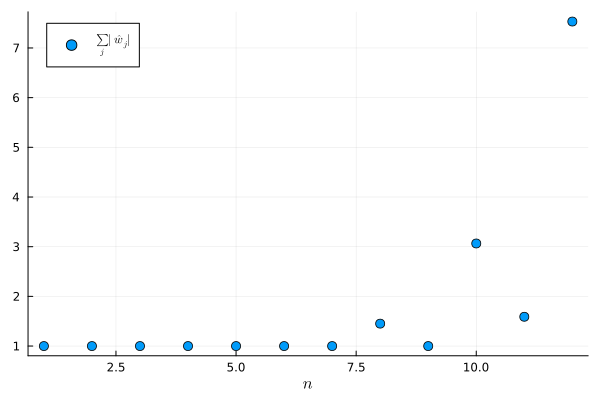
\(\big| \sum_j w_j (f(x_j) + \varepsilon_j) - \sum_j w_j f(x_j) \big| = \big| \sum_j w_j \varepsilon_j \big| \leq \varepsilon \sum_j |w_j|\). If all the weights are positive, then \(\sum_j |w_j| = \sum_j w_j = b - a\) and so errors in the data are not amplified. With large negative weights, small errors in \(f(x_j)\) (e.g. rounding errors) can be amplified enormously.
The Newton–Cotes rule integrates the equispaced interpolant, which suffers from the Runge phenomenon, so the error does not go to zero as \(n\) increases: in fact, it grows (to about \(6\) for \(n = 20\)). The composite Simpson rule with the same nodes converges at rate \(O(n^{-4})\) by Theorem 11.4.
Code
f = x -> 1 / ( 1 + 25x^2 )
I = (2/5) * atan(5)
function newton_cotes(f, a, b, n)
w = (b - a) .* Float64.( nc_weights(n) ) # weights on [a,b] (@exr-l10-weights (3))
x = range(a, b, n+1)
return sum( w .* f.(x) )
end
function simpson(f, a, b, n) # composite Simpson rule on n subintervals (n even)
x = range(a, b, n+1)
h = (b - a) / n
return h/3 * ( f(x[1]) + 4sum( f.(x[2:2:n]) ) + 2sum( f.(x[3:2:n-1]) ) + f(x[n+1]) )
end
N = 2:2:20
E_nc = [ abs( newton_cotes(f, -1, 1, n) - I ) for n in N ]
E_s = [ abs( simpson(f, -1, 1, n) - I ) for n in N ]
scatter( N, E_nc, yaxis=:log, markersize=5, xlabel=L"n", label="Newton–Cotes" )
scatter!( N, E_s, markersize=5, label="composite Simpson" )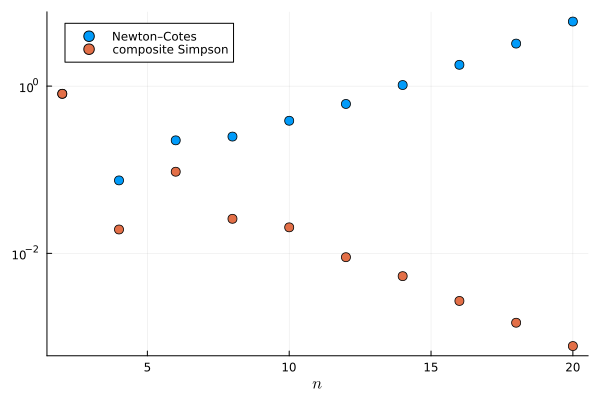
This exercise is more difficult
Midterm (Fall 2025)
Midterm (Fall 2025): Question A1
Compulsory section, 2 pts. Suppose that a quantity \(x \not= 0\) is approximated by \(\widetilde{x}\). What is the relative error in this approximation?
\[\begin{align} \frac{|x - \widetilde{x}|}{|x|} \end{align}\]
Midterm (Fall 2025): Question A3
Compulsory section, 3 pts. How many floating point numbers are there in the interval \([1,2)\) with binary precision \(k = 3\)?
Floating point numbers are of the form \((-1)^s( 1 + f ) 2^{n}\) where \(f = 0 . b_1 b_2 \dots b_k\) in binary. Therefore, there are \(2^k\) floating point numbers in the interval \([1,2)\). When the binary precision is \(3\), there are \(8\) floating point numbers in the interval.
Midterm (Fall 2025): Question A4
Compulsory section, 3 pts. What is the relative condition number of the function \(f(x) = x - 1\)?
\[\begin{align} \kappa_f(x) = \left| \frac{x f'(x)}{f(x)} \right| = \left| \frac{x}{x-1} \right| \end{align}\]
Midterm (Fall 2025): Question A5
Compulsory section, 3 pts. What scaling would you use in a graph to verify algebraic decay (i.e. \(O(n^{-\alpha})\) for some \(\alpha > 0\))?
(a). Linear scale, (b). Semi-logarithmic with the x-axis scaled, (c). Semi-logarithmic with the y-axis scaled, (d). Log-log plot (logarithmic scaling in both x- and y-axes).
(d). I would use a log-log scale. If \(y = n^{-\alpha}\), then \(\log y = - \alpha \log n\) which is linear on a log-log plot.
Midterm (Fall 2025): Question A7
Compulsory section, 4 pts. Let \(f : [ 0, \tfrac\pi2 ] \to \mathbb R\) be given by \(f(x) = x^2\sin x - 1\). Show that there is a \(\xi \in [0,\tfrac\pi2]\) for which \(f(\xi) = 0\).
\(f\) is a continuous function with \(f(0) = -1 < 0\) and \(f(\pi/2) = \pi^2/4 - 1 > 0\). By the change of sign theorem, there exists some \(\xi \in [0,\pi/2]\) such that \(f(\xi) = 0\).
Midterm (Fall 2025): Question A8
Compulsory section, 2 pts. Here, we apply Newton’s method to \(f(x) = x^2\sin x - 1\) (from Question A7):
Newton iteration on f(x) = x^2 sin(x) - 1 with x1 = π/2
┌───────────┬──────────┬────────────────┬─────────────────────┐
│ iteration │ sequence │ residual │ approximate α │
│ n │ x[n] │ r[n]=|f(x[n])| │ log r[n]/log r[n-1] │
├───────────┼──────────┼────────────────┼─────────────────────┤
│ 1.0 │ 1.5708 │ 1.4674 │ NaN │
│ 2.0 │ 1.10371 │ 0.0876848 │ -6.34694 │
│ 3.0 │ 1.06891 │ 0.00165227 │ 2.63171 │
│ 4.0 │ 1.06822 │ 6.52732e-7 │ 2.22338 │
│ 5.0 │ 1.06822 │ 1.01918e-13 │ 2.10043 │
└───────────┴──────────┴────────────────┴─────────────────────┘Why do we use the residuals \(r_n := |f(x_n)|\) instead of the errors \(|x_n - \xi|\) when we are approximating the order of convergence (\(\alpha\)) in this method?
\(\xi\) is unknown in advance.
Remark. Suppose that \((x_n) \to \xi\). Then, since \(f(x_n) = f(x_n) - f(\xi) = f'(\eta_n) (x_n - \xi)\) for some \(\eta_n\) between \(x_n\) and \(\xi\), we have
\[\begin{align} \lim_{n\to\infty} \frac{ \log |f(x_{n+1})| }{ \log |f(x_n)| } % &= \lim_{n\to\infty}\frac{ \log |f'(\eta_{n+1})| + \log |x_{n+1} - \xi| }{ \log |f'(\eta_{n})| + \log |x_{n} - \xi| } \nonumber\\ % &= \lim_{n\to\infty}\frac{ \frac{\log |f'(\eta_{n+1})|}{\log |x_{n} - \xi|} + \frac{\log |x_{n+1} - \xi|}{\log |x_{n} - \xi|} }{ \frac{\log |f'(\eta_{n})|}{\log |x_{n} - \xi|} + 1 } \nonumber\\ % &= \lim_{n\to\infty} \frac{\log |x_{n+1} - \xi|}{\log |x_{n} - \xi|}. \end{align}\]
As a result, we may use the residuals to estimate the order of convergence.
Midterm (Fall 2025): Question A9
Compulsory section, 4 pts. Let \(g(x) := 1 + \frac{1}{x}\) and define \(x_1 = 1\) and \(x_{n+1} = g(x_n)\). Suppose that \((x_n) \to \xi\). What is the value of \(\xi\)?
We have \(x_{n+1}\to \xi\) as \(n \to \infty\). Since \(g\) is continuous, we have \(g(x_n)\to g(\xi)\) as \(n \to \infty\). Therefore, \(\xi = 1+ \frac{1}\xi\) which is equivalent to \(\xi^2 - \xi - 1 = 0\) and so \(\xi = \frac{1 \pm \sqrt{5}}2\). If \(x_n > 0\) then \(x_{n+1} >0\). Since \(x_1 > 0\) we have \(x_n > 0\) for all \(n\) and thus \(\xi \geq 0\). Therefore, \(\xi = \frac{1+\sqrt{5}}{2}\) (the golden ratio).
Remark. It turns out the the sequence does indeed converge (can you find an interval on which \(g\) is a contraction and apply the contraction mapping theorem?)
x[n+1] = g(x[n]) with x_1 = 1.0
┌───────────┬──────────┬────────────────┬─────────────────────┐
│ iteration │ sequence │ residual │ approximate α │
│ n │ x[n] │ r[n]=|f(x[n])| │ log r[n]/log r[n-1] │
├───────────┼──────────┼────────────────┼─────────────────────┤
│ 1.0 │ 1.0 │ 1.0 │ NaN │
│ 2.0 │ 2.0 │ 0.5 │ -Inf │
│ 3.0 │ 1.5 │ 0.166667 │ 2.58496 │
│ 4.0 │ 1.66667 │ 0.0666667 │ 1.51139 │
│ 5.0 │ 1.6 │ 0.025 │ 1.36219 │
│ 6.0 │ 1.625 │ 0.00961538 │ 1.25902 │
│ 7.0 │ 1.61538 │ 0.003663 │ 1.20779 │
│ 8.0 │ 1.61905 │ 0.00140056 │ 1.17139 │
│ 9.0 │ 1.61765 │ 0.000534759 │ 1.14653 │
│ 10.0 │ 1.61818 │ 0.00020429 │ 1.12773 │
│ 11.0 │ 1.61798 │ 7.80275e-5 │ 1.11329 │
└───────────┴──────────┴────────────────┴─────────────────────┘
ξ = 1.618033988749895Remark. Notice that the first few terms of the sequence \((x_n)\) are given by
\[\begin{align*} x_2 &= 1 + \frac{1}{x_1}, \qquad x_{3} = 1 + \frac{1}{x_2} = 1 + \frac{1}{1 + \frac{1}{x_1}}, \qquad x_{4} = 1 + \frac{1}{x_3} = 1 + \frac{1}{1 + \frac{1}{1 + \frac{1}{x_1}}}, \cdots. \end{align*}\]
As a result, you have given meaning to the infinite continued fraction
\[\begin{align*} \xi := 1 + \frac{1}{1 + \frac{1}{1 + \frac{1}{1 + \ddots}}} \end{align*}\]
Midterm (Fall 2025): Question A10
Compulsory section, 4 pts. Write down the Lagrange form of the polynomial of degree at most \(n\) interpolating \(f\) on \(X = \{ x_0, \dots, x_n \}\).
The Lagrange polynomials are \(\ell_j(x) := \prod_{0\leq k \leq n \, : \, k\not= j} \frac{x-x_k}{x_j - x_k}\) and the polynomial interpolation, \(p\), of \(f\) on \(X\) is given by the following linear combination:
\[\begin{align} p(x) = \sum_{j=0}^n \ell_j(x) f(x_j) \end{align}\]
Midterm (Fall 2025): Question A11
Compulsory section, 4 pts. Consider the following finite difference table
\[\begin{align} x_0: \quad & f[x_0] = 0, \quad & f[x_0, x_1] = 1, \nonumber\\ x_1: \quad & f[x_1] = 0. \nonumber \end{align}\]
Which of the following statements are true? Select all that apply.
(a). The table does not correspond to any function \(f\), (b). The table determines a polynomial interpolant \(p\) of degree at least \(2\), (c). We must have \(f'(x_1) = 1\), (d). We must have \(x_0 = x_1\).
- and (d). By the definition of divided differences, we have \(f(x_0) = f(x_1) = 0\) and
\[\begin{align} 1 = f[x_0,x_1] = \begin{cases} \frac{f(x_0) - f(x_1)}{x_0 - x_1} &\text{if } x_0 \not= x_1 \\ f'(x_0) &\text{if } x_0 = x_1. \end{cases} \end{align}\]
- Therefore, we must have \(x_0 = x_1\) and \(f'(x_0) = f'(x_1) = 1\) (third and fourth options should have been selected).
- This table only determines a polynomial, \(p\), of degree at most 1 (and so the second option does not apply):
\[\begin{align} p(x) = f[x_0] + f[x_0,x_1] (x - x_0) = x - x_0. \end{align}\]
One can indeed show that \(p'(x_0) = 1 = f'(x_0)\) and \(p(x_0) = 0 = f(x_0)\).
- \(f(x) = x-x_0\) is an example of a function with the divided difference table as shown (so the first option does not apply).
Midterm (Fall 2025): Question A12
Compulsory section, 5 pts. Write down the Trapezoid rule on \([-1,1]\) and show that it is exact for all polynomials of degree at most \(1\).
The trapezoid rule has weights \(w_0 = w_1 = 1\) and nodes \(x_0 = -1\) and \(x_1 = 1\): i.e.
\[\begin{align} \int^{1}_{-1} f \approx f(-1) + f(1). \end{align}\]
When \(f(x) = \alpha\), the integral is \(2 \alpha = f(-1) + f(+1)\),
When \(f(x) = x\), since \(f\) is odd, the integral is \(0 = -1 + 1 = f(-1) + f(1)\).
Therefore, taking linear combinations, the rule is exact for all polynomials of degree \(1\).
Midterm (Fall 2025): Question D
Optional section, 30 pts. Newton’s method for repeated roots.
- [2 points] Show that \(f(x) = e^x - x - 1\) satisfies \(f(0) = f'(0) = 0\) and \(f''(0) \not= 0\).
- [2 points] Here, we apply Newton’s method to \(f(x) = e^x - x - 1\). What is the order of convergence?
┌───────────┬─────────────┬───────────────┬─────────────────────┐
│ iteration │ sequence │ error │ approximate α │
│ n │ x[n] │ e[n]=|x[n]-ξ| │ log e[n]/log e[n-1] │
├───────────┼─────────────┼───────────────┼─────────────────────┤
│ 1.0 │ 3.1 │ 3.1 │ NaN │
│ 2.0 │ 2.24624 │ 2.24624 │ 0.71527 │
│ 3.0 │ 1.512 │ 1.512 │ 0.51088 │
│ 4.0 │ 0.939627 │ 0.939627 │ -0.150621 │
│ 5.0 │ 0.542328 │ 0.542328 │ 9.826 │
│ 6.0 │ 0.295555 │ 0.295555 │ 1.99205 │
│ 7.0 │ 0.155046 │ 0.155046 │ 1.52927 │
│ 8.0 │ 0.0795256 │ 0.0795256 │ 1.35817 │
... ... ... ...
│ 12.0 │ 0.0050958 │ 0.0050958 │ 1.15071 │
│ 13.0 │ 0.00255006 │ 0.00255006 │ 1.13113 │
│ 14.0 │ 0.00127557 │ 0.00127557 │ 1.116 │
│ 15.0 │ 0.000637923 │ 0.000637923 │ 1.10398 │
│ 16.0 │ 0.000318995 │ 0.000318995 │ 1.0942 │
│ 17.0 │ 0.000159506 │ 0.000159506 │ 1.0861 │
│ 18.0 │ 7.97552e-5 │ 7.97552e-5 │ 1.07927 │
│ 19.0 │ 3.98781e-5 │ 3.98781e-5 │ 1.07345 │
│ 20.0 │ 1.99392e-5 │ 1.99392e-5 │ 1.06843 │
│ 21.0 │ 9.96963e-6 │ 9.96963e-6 │ 1.06404 │
└───────────┴─────────────┴───────────────┴─────────────────────┘Consider the modified Newton’s method
\[\begin{align*} x_{n+1} = x_n - 2 \frac{f(x_n)}{f'(x_n)}. \end{align*}\]
- [2 points] We apply this method to \(f(x) = e^x - x - 1\). Compare the table to that of the standard Newton method.
┌───────────┬─────────────┬───────────────┬─────────────────────┐
│ iteration │ sequence │ error │ approximate α │
│ n │ x[n] │ e[n]=|x[n]-ξ| │ log e[n]/log e[n-1] │
├───────────┼─────────────┼───────────────┼─────────────────────┤
│ 1.0 │ 3.1 │ 3.1 │ NaN │
│ 2.0 │ 1.39248 │ 1.39248 │ 0.292634 │
│ 3.0 │ 0.313183 │ 0.313183 │ -3.50653 │
│ 4.0 │ 0.0163206 │ 0.0163206 │ 3.54474 │
│ 5.0 │ 4.43937e-5 │ 4.43937e-5 │ 2.43539 │
│ 6.0 │ 3.27151e-10 │ 3.27151e-10 │ 2.17918 │
└───────────┴─────────────┴───────────────┴─────────────────────┘Now suppose that \(f:[a,b]\to\mathbb R\) is four times continuously differentiable with root \(\xi \in (a,b)\) of multiplicity \(2\): that is, \(f(\xi) = f'(\xi) = 0\) and \(f''(\xi) \not= 0\). Further, we suppose that there exists \(A > 0\) such that
\[\begin{align*} \left| \frac{f'''(x) + f^{(4)}(x) (x - \xi)}{f''(y)} \right| \leq A \end{align*}\]
for all \(x,y \in [a,b]\). The aim of this section is to show that the modified Newton method converges at least quadratically to \(\xi\) for all \(x_1 \in [a,b]\) with \(|x_1 - \xi| \leq A^{-1}\). Notice that the modified Newton method can be written
\[\begin{align*} x_{n+1} - \xi &= \frac{ f'(x_n)(x_n - \xi) - 2 f(x_n) }{ f'(x_n) }. \end{align*}\]
- [8 points] By expanding the numerator \(g(x) := f'(x) (x - \xi) - 2 f(x)\) and denominator \(h(x) := f'(x)\), show that there exist \(\eta_n, \theta_n\) between \(x_n\) and \(\xi\) such that \[\begin{align*} x_{n+1} - \xi &= \frac {\frac1{3!} g'''(\eta_n) (x_n - \xi)^3} {h'(\theta_n) (x_n - \xi) } % = \frac16 \left[ \frac {f'''(\eta_n) + f^{(4)}(\eta_n) (\eta_n - \xi) } {f''(\theta_n)} \right] (x_n - \xi)^2. \end{align*}\]
- [4 points] Hence show that, if \(|x_1 - \xi| \leq A^{-1}\), then \(|x_{n+1} - \xi| \leq 6^{-n} |x_1 - \xi|\) and thus the modified Newton’s method converges.
- [4 points] Show that \((x_n)\) converges at least quadratically to \(\xi\).
- [4 points] What is the theoretical value of the asymptotic error constant when the modified Newton method is applied to \(f(x) = e^x - x - 1\)?
- [4 points] Show that the modified Newton method converges in \(1\) iteration for functions of the form \(f(x) = (x - \xi)^2\).
We have \(f'(x) = e^x - 1\) and \(f''(x) = f'''(x) = \cdots = e^x\). Therefore, \(f(0) = e^0 - 0 - 1 = 0\) and \(f'(0) = e^0 - 1 = 0\) and \(f''(0) = e^0 = 1\).
The computational order of convergence appears to approach \(1\).
We have convergence in fewer iterations (\(21\) vs \(6\)) and the computational order of convergence seems to be around \(2\).
We take derivatives of \(g\): \[\begin{align} g(x) &= f'(x) (x - \xi) - 2 f(x)\nonumber\\ g'(x) &= f''(x) (x - \xi) - f'(x) \nonumber\\ g''(x) &= f'''(x) (x - \xi) \nonumber\\ g'''(x) &= f^{(4)}(x) (x - \xi) + f'''(x). \end{align}\] Notice that \(g(\xi) = g'(\xi) = g''(\xi) = 0\) and so there exists \(\eta_n\) between \(x_n\) and \(\xi\) such that \[\begin{align} g(x_n) &= g(\xi) + g'(\xi) (x_n - \xi) + \frac{1}2 g''(\xi) (x_n - \xi)^2 + \frac{1}{6} g'''(\eta_n) (x_n - \xi)^3 \nonumber\\ % &= \frac{1}{6} \Big[ f'''(\eta_n) + f^{(4)}(\eta_n) (\eta_n - \xi) \Big] (x_n-\xi)^3. \end{align}\] Moreover, there exists \(\theta_n\) such that \(f'(x_n) = f'(\xi) + f''(\theta_n) (x_n - \xi) = f''(\theta_n) (x_n - \xi)\) and so \[\begin{align} x_{n+1} - \xi &= \frac16 \left[ \frac {f'''(\eta_n) + f^{(4)}(\eta_n) (\eta_n - \xi) } {f''(\theta_n)} \right] (x_n - \xi)^2 \end{align}\]
By assumption, \[\begin{align} \left| \frac {f'''(\eta_n) + f^{(4)}(\eta_n) (\eta_n - \xi)} {f''(\theta_n)} \right| \leq A, \end{align}\] and so, if \(|x_n - \xi| \leq A^{-1}\), then \[\begin{align} |x_{n+1} - \xi| \leq \frac16 A |x_n - \xi| |x_n - \xi| % \leq \frac16 |x_{n} - \xi|. \end{align}\] In particular, \(|x_{n+1} - \xi| \leq A^{-1}\) and we may apply the bound inductively to obtain \(|x_{n+1} - \xi| \leq 6^{-n} |x_1 - \xi|\) and so this modified Newton’s method converges.
Since \(\eta_n, \theta_n\) are between \(x_n\) and \(\xi\), and \((x_n) \to \xi\), we have \[\begin{align} \lim_{n\to\infty} \frac{|x_{n+1} - \xi|}{|x_n - \xi|^2} &= \lim_{n\to\infty} \frac16 \left| \frac {f'''(\eta_n) + f^{(4)}(\eta_n) (\eta_n - \xi) } {f''(\theta_n)} \right| \nonumber\\ % &= \frac16 \left| \frac {f'''(\xi)} {f''(\xi)} \right| \end{align}\]
Recall that, in this case, \(\xi = 0\), and \(f'(x) = e^x - 1\), \(f''(x) = f'''(x) = e^x\). Therefore, the asymptotic error constant is \(\frac16 \frac{e^0}{e^0} = \frac16\).
Note that \(f(x)= (x - \xi)^2\) has a root of multiplicity \(2\) at \(\xi\). We have \(x_{n+1} = x_n - 2 \frac{ (x_n - \xi)^2 }{ 2(x_n - \xi)} = x_n - (x_n - \xi) = \xi\) so that \(x_{n+1} = \xi\) for all \(n \geq 1\) regardless of \(x_1 \in \mathbb R\).
Remark. In general, if \(\xi\) is a root of \(f\) of multiplicity \(m\), one can define the following modified Newton method: \[\begin{align} x_{n+1} = x_n - m \frac{f(x_n)}{f'(x_n)}. \end{align}\] Then, if \(f\) is sufficiently smooth and \(x_1\) is sufficiently close to \(\xi\), the modified Newton method converges quadratically with asymptotic error constant \[\begin{align} \mu = \frac{1}{m(m+1)} \left|\frac{f^{(m+1)}(\xi)}{f^{(m)}(\xi)} \right|. \end{align}\]
Midterm (Fall 2026)
Midterm (Fall 2026): Question A1
Compulsory section, 3 pts. Consider floating point numbers with binary precision \(k = 3\). What is the distance between consecutive floating point numbers in the interval \([4, 8)\)? What is the machine precision \(\epsilon_{\rm mach}\)?
Midterm (Fall 2026): Question A2
Compulsory section, 2 pts. True or false: in Float64 (binary precision \(k = 52\)), the computation \(1 + 2^{-60}\) returns exactly \(1\). Explain your answer.
Midterm (Fall 2026): Question A3
Compulsory section, 2 pts. What is the largest \(d\) such that the rectangular rule \(\int_a^b f \approx (b-a) f(a)\) is exact for all polynomials of degree at most \(d\)?
- \(d = 0\)
- \(d = 1\)
- \(d = 2\)
- \(d = 3\)
Midterm (Fall 2026): Question A4
Compulsory section, 7 pts. Approximate \(\int_{-1}^{+1} x^2 \, \mathrm{d}x = \frac23\) using (i) the rectangular rule, (ii) the trapezoid rule, and (iii) Simpson’s rule. Compare with the exact value.
Midterm (Fall 2026): Question A5
Compulsory section, 4 pts. Write down Newton’s method for computing \(\sqrt{2}\) (i.e. a root of \(f(x) = x^2 - 2\)). Compute \(x_2\) when \(x_1 = 1\).
Midterm (Fall 2026): Question A6
Compulsory section, 2 pts. The following table shows an iterative method for solving \(f(x) = x^2 - 2 = 0\) (here \(\xi = \sqrt{2}\)):
n x[n] e[n]=|x[n]-ξ| log e[n]/log e[n-1]
------------------------------------------------------------
1 1.000000000000 4.14214e-01
2 2.000000000000 5.85786e-01 0.60678
3 1.333333333333 8.08802e-02 4.70229
4 1.400000000000 1.42136e-02 1.69142
5 1.414634146341 4.20584e-04 1.82761
6 1.414211438475 2.12390e-06 1.68028
7 1.414213562057 3.15775e-10 1.67475
8 1.414213562373 2.22045e-16 1.64764Which of the following methods most likely produced this table?
- Relaxation
- Secant method
- Newton’s method
Midterm (Fall 2026): Question A7
Compulsory section, 4 pts. Let \(I_Xf \in \mathcal P_n\) be the polynomial interpolant of \(f : [-1,1] \to \mathbb R\) on \(n+1\) distinct nodes \(X\). Which of the following statements are true? Please select all that apply.
- \(I_Xf\) may have degree strictly less than \(n\)
- If \(f \in \mathcal P_n\), then \(I_Xf = f\)
- For the Chebyshev nodes \(X = \{\cos\frac{j\pi}{n}\}_{j=0}^n\), the barycentric weights alternate in sign
- For equispaced nodes, \(\max\limits_{x\in[-1,1]} |f(x) - I_Xf(x)| \to 0\) as \(n\to\infty\) for every continuous \(f\)
Midterm (Fall 2026): Question A8
Compulsory section, 5 pts. Find weights \(w_0, w_1\) such that the quadrature rule \(\int_0^1 f \approx w_0 f(0) + w_1 f(\tfrac13)\) is exact for all polynomials of degree at most \(1\). Is it exact for \(f(x) = x^2\)? (You may use \(\int_0^1 x^n \,\mathrm{d}x = \frac{1}{n+1}\) for \(n=0,1,2,...\).)
Midterm (Fall 2026): Question A9
Compulsory section, 2 pts. The following plots show the errors of two numerical methods, P and Q, as a function of the number \(n\) of function evaluations. The same data is shown on a log-log plot (left) and a semi-log plot (right).
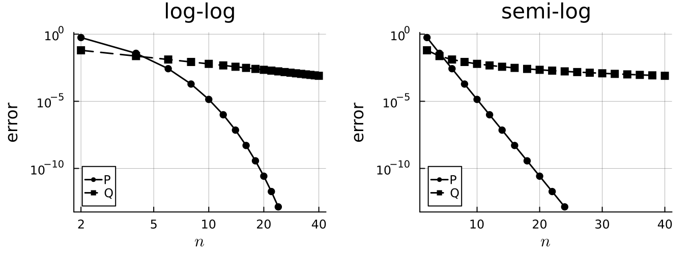
Is the decay of the error of method P algebraic or exponential?
Is the decay of the error of method Q algebraic or exponential?
Midterm (Fall 2026): Question A10
Compulsory section, 5 pts. For \(b > 1\), the equation \(x^2 - 2bx + 1 = 0\) has roots
\[ \xi_\pm = b \pm \sqrt{b^2 - 1} = \frac{1}{b \mp \sqrt{b^2 - 1}}, \]
Here, we compute \(\xi_-\) in Float64 using both formulas:
b b - sqrt(b^2 - 1) 1 / (b + sqrt(b^2 - 1))
------------------------------------------------------------------
b = 1e+04 5.000000055588316e-5 5.000000012500001e-5
b = 1e+06 5.00003807246685e-7 5.00000000000125e-7
b = 1e+08 0.0 5.0e-9Which column do you trust? Explain why the formulas give different results.
Midterm (Fall 2026): Question A11
Compulsory section, 4 pts. Consider the following divided difference table: \[ \begin{array}{c|cc} \quad x_j \quad & \quad f(x_j) \quad & \quad f[x_0, x_1] \quad \\[4pt] \hline \quad x_0 \quad & \quad 1 \quad & \\[8pt] & & \quad -2 \quad \\[8pt] \quad x_1 \quad & \quad 1 \quad & \end{array} \] Which of the following statements are true? Please select all that apply.
- The table does not correspond to any function \(f\)
- We must have \(x_0 = x_1\)
- We must have \(f'(x_0) = 1\)
- The table determines a polynomial interpolant \(p\) of degree at most \(1\)
Midterm (Fall 2026): Question B
Optional section, 30 pts. Polynomial Interpolation. Let \(f(x) = 2^x\) and \(X = \{x_0, x_1, x_2\} = \{-1, 0, 1\}\).
[14 points] Write down the polynomial interpolant \(I_Xf \in \mathcal P_2\) of \(f\) on \(X\) in both Lagrange and Newton form. Now add the node \(x_3 = 2\) and write down the polynomial \(p \in \mathcal P_3\) interpolating \(f\) on \(\{-1, 0, 1, 2\}\). Compare \(I_Xf(3)\) and \(p(3)\) with \(f(3)\).
[5 points] Use the interpolation error formula \[ f(x) - I_Xf(x) = \frac{f^{(3)}(\xi_x)}{3!} (x + 1) x (x - 1) \] to show that \(|f(x) - I_Xf(x)| \leq \frac{2 (\log 2)^3}{3!} \cdot \frac{2}{3\sqrt3}\) for all \(x \in [-1,1]\). Hint: \(f^{(3)}(x) = (\log 2)^3 \, 2^x\), and \(|(x+1) x (x-1)| = |x^3 - x|\) is largest on \([-1,1]\) at \(x = \pm \frac{1}{\sqrt3}\).
[5 points] Now let \(Y = \{y_0, y_1, y_2\}\) with \(y_0 = -\frac{\sqrt3}{2}, y_1 = 0, y_2 = \frac{\sqrt3}{2}\) (the zeros of the Chebyshev polynomial \(T_3(x) = 4x^3 - 3x\)). Show that \(\max\limits_{x \in [-1,1]} |(x - y_0)(x - y_1)(x - y_2)| = \frac14\). What is the corresponding error bound for \(|f(x) - I_Yf(x)|\)? Does \(X\) or \(Y\) give the better error bound?
[6 points] The following semi-log plot shows the maximum error \(\max\limits_{x \in [-1,1]} |f(x) - I_Xf(x)|\) when interpolating \(f(x) = 2^x\) on \(n+1\) equispaced nodes and on \(n+1\) Chebyshev nodes \(\{\cos\frac{j\pi}{n}\}_{j=0}^n\) (computed with the barycentric formula in
Float64).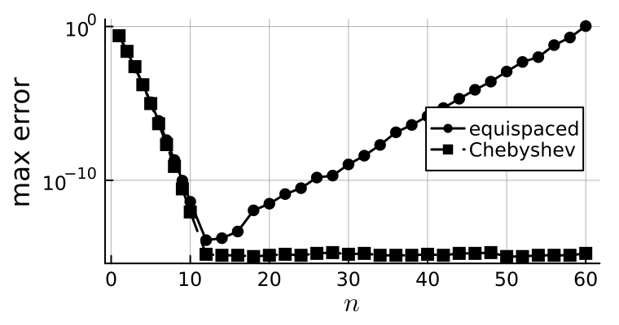
- For small \(n\) (\(n \leq 10\)), is the decay of the error algebraic or exponential (or faster)?
Next, we compare the time taken to evaluate \(I_Xf\) at \(1000\) points using two implementations: the naive implementation of the Lagrange form \(I_Xf(x) = \sum_j f(x_j) \prod_{k \neq j} \frac{x - x_k}{x_j - x_k}\), and the barycentric formula.
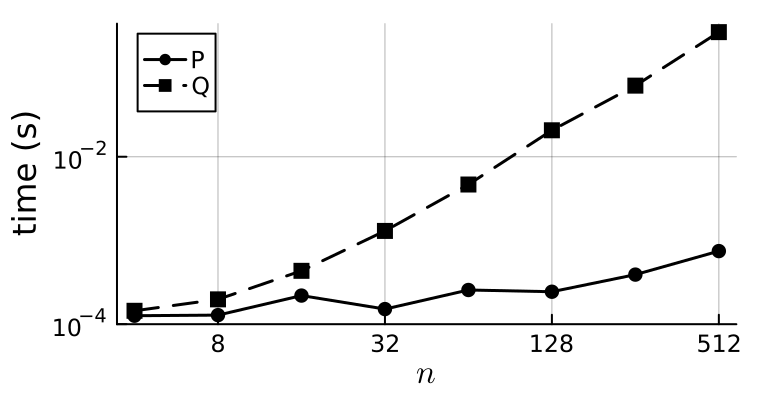
- Which of P and Q is the naive implementation? Explain why.
Midterm (Fall 2026): Question C
Optional section, 30 pts. Trapezoid Rule with End Point Derivatives. Suppose \(f\) is four times continuously differentiable. We will consider the following quadrature rule:
\[\begin{align*} \int_a^b f(x) \,\mathrm{d}x \approx \frac{b-a}{2} \big[ f(a) + f(b) \big] + \frac{(b-a)^2}{12} \big[ f'(a) - f'(b) \big]. \end{align*}\]
That is, we add a correction to the trapezoid rule which uses the derivative of \(f\) at both end points.
- [8 points] Show that this rule is exact for all polynomials of degree at most \(1\). Then show that it is exact for \(f(x) = (x - a)^2\) and \(f(x) = (x-a)^3\), and hence that it is exact for all polynomials of degree at most \(3\). (You may use \(\int_a^b (x-a)^n \,\mathrm{d}x = \frac{(b-a)^{n+1}}{n+1}\) for \(n=0,1,2,...\).)
- [3 points] Let \(p_3 \in \mathcal P_3\) be the Hermite interpolant of \(f\) on \(X = \{\{a, a, b, b\}\}\). Explain why \(\int_a^b p_3\) is equal to the quadrature rule applied to \(f\).
- [8 points] Recall that there exists \(\xi_x \in [a,b]\) such that \(f(x) - p_3(x) = \frac{f''''(\xi_x)}{4!} (x - a)^2 (x - b)^2\). Show that \[\begin{align*} \left| \int_a^b f(x)\,\mathrm{d}x - \frac{b-a}{2} \big[ f(a) + f(b) \big] - \frac{(b-a)^2}{12} \big[ f'(a) - f'(b) \big] \right| \leq \frac{\|f''''\|_{L^\infty([a,b])}}{720} (b-a)^5. \end{align*}\] Hint: \(\int_a^b (x-a)^2 (x-b)^2 \,\mathrm{d}x = \frac{(b-a)^5}{30}\).
Let \(x_j := a + j \frac{b-a}{n}\) for \(j = 0, \dots, n\) and note that \(\int_a^b f = \sum_{j=0}^{n-1} \int_{x_j}^{x_{j+1}} f\).
- [9 points] Apply the rule on each interval \([x_j, x_{j+1}]\) to show that the corresponding composite rule is \[\begin{align*} \int_a^b f \approx I_n' := \frac{b-a}{n} \Big[ \tfrac12 f(x_0) + \sum_{j=1}^{n-1} f(x_j) + \tfrac12 f(x_n) \Big] + \frac{1}{12}\left(\frac{b-a}{n}\right)^2 \big[ f'(a) - f'(b) \big]. \end{align*}\] Why do we only need the derivative of \(f\) at \(a\) and \(b\)? Use the error estimate from Question 3 to obtain an error estimate for \(I_n'\).
The following plot shows the errors in approximating \(\int_0^1 e^x \,\mathrm{d}x\) with the composite trapezoid rule \(I_n\) and the composite rule \(I_n'\) from Question 4, together with the curves \(C n^{-1}\), \(C n^{-2}\), \(C n^{-3}\) and \(C n^{-4}\):
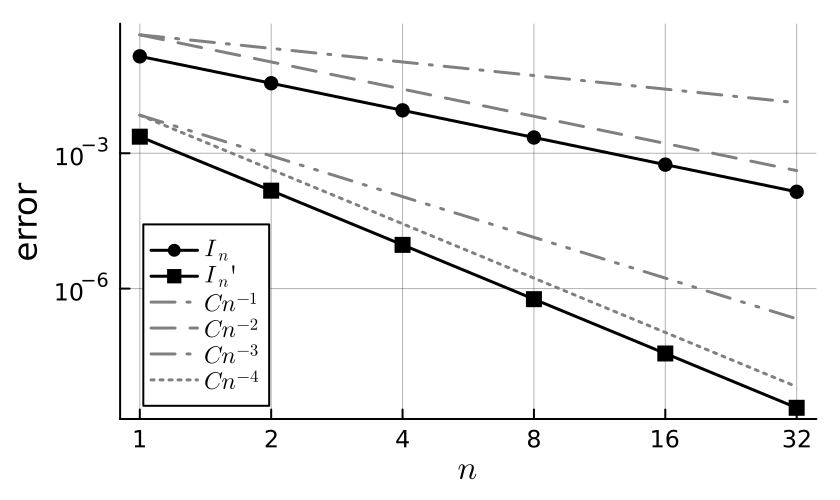
- [2 points] What are the rates of convergence of \(I_n\) and \(I_n'\)?
Midterm (Fall 2026): Question D
Optional section, 30 pts. Simple Iteration. Define \(g(x) = 1 + \frac12 \sin x\) and \(I := [\frac12,\frac32]\).
- [3 points] Show that \(g(x) \in I\) for all \(x \in I\).
- [4 points] Show that \(g\) is a contraction on \(I\) with constant \(L = \frac12\).
- [4 points] Which theorem guarantees that \(g\) has a unique fixed point \(\xi \in I\) and that \(x_{n+1} = g(x_n)\) converges to \(\xi\) for all \(x_1 \in I\)? Explain why \(\xi \in [\frac12, \frac32]\).
- [5 points] Show that \(|x_{n+1} - \xi| \leq L^n |x_1 - \xi|\). Find \(n\) such that \(|x_{n+1} - \xi| \leq 10^{-3}\) is guaranteed for every \(x_1 \in I\). (You may use \(2^{10} = 1024\).)
Here, we apply the iteration with \(x_1 = 1\) and compare with \(x_N\) for \(N = 100\):
n x_n r_n := |x_n - x_N| r_{n+1} / r_n
------------------------------------------------------------
1 1.000000000000 4.987e-01 0.1563
2 1.420735492404 7.797e-02 0.0554
3 1.494380992564 4.320e-03 0.0371
4 1.498540884399 1.602e-04 0.0361
5 1.498695355522 5.778e-06 0.0360
6 1.498700925407 2.081e-07 0.0360
7 1.498701126022 7.495e-09 0.0360
8 1.498701133248 2.700e-10 0.0360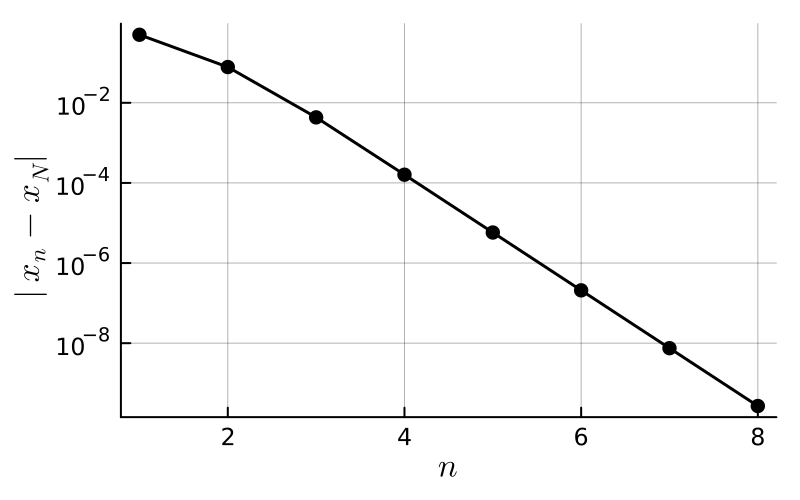
- [9 points] (a) Why do we plot \(|x_n - x_N|\) instead of the errors \(|x_n - \xi|\)?
- What do the plot and the table suggest about the order of convergence?
- The theory predicts that \(\frac{|x_{n+1} - \xi|}{|x_n - \xi|} \to \mu = |g'(\xi)| = \frac12 |\cos \xi|\). Estimate \(\mu\) and \(\xi\) from the table.
- [5 points] Show that \(\xi\) is a root of \(f(x) = 2x - 2 - \sin x\) and that \(x_{n+1} = g(x_n)\) is the relaxation method \(x_{n+1} = x_n - \lambda f(x_n)\) for some \(\lambda\). Which value of \(\lambda\) gives faster than linear convergence? Prove your answer.
Lecture 12
By considering the change of variables \(y = \frac{2}{b-a} \left( x - \frac{a + b}{2} \right)\) and defining \(\tilde{f}(y) = \frac{b-a}{2} f\big( \tfrac{b-a}2 y + \tfrac{a+b}2 \big)\), show that
\[ \begin{align} \int_a^b f(x) \mathrm{d}x = \int_{-1}^1 \tilde{f}(y) \mathrm{d}y. \end{align} \]
Moreover, show that, if \(p\) is the polynomial interpolation of \(f\) on \(X \subset [a,b]\), then \(\tilde{p}\) is the polynomial interpolation of \(\tilde{f}\) on \(\tilde{X} \subset [-1,1]\) where \(\tilde{X} = \{ \frac{2}{b-a} \left( x - \frac{a + b}{2} \right) : x \in X \}\). As a result, we may without loss of generality consider the interval \([-1,1]\).
Choose \(w_0, w_1\) and \(x_0, x_1\) such that
\[ \begin{align} \int_{-1}^1 f \approx w_0 f(x_0) + w_1 f(x_1) \end{align} \]
is exact for all polynomials of degree \(3 = 2n+1\).
Integrate the functions \(f = 1, x, x^2, x^3\) and solve the resulting system of equations.
Using the functions \(f = 1, x, x^2, x^3\), we want to solve
\[ \begin{align} 2 &= w_0 + w_1 \nonumber \\ 0 &= w_0 x_0 + w_1 x_1 \nonumber \\ \frac{2}{3} &= w_0 x_0^2 + w_1 x_1^2 \nonumber \\ 0 &= w_0 x_0^3 + w_1 x_1^3 \nonumber \end{align} \]
We have
\[ \begin{align} 0 &= ( w_0 x_0 + w_1 x_1 )( x_0 + x_1 ) \nonumber \\ &= (w_0 x_0^2 + w_1 x_1^2) + ( w_0 + w_1 ) x_0 x_1 \nonumber \\ &= \frac23 + 2 x_0 x_1 \nonumber \end{align} \]
and so \(x_0 x_1 = -\frac13\). Similarly, we have
\[ \begin{align} \frac23 (x_0 + x_1) &= ( w_0 x_0^2 + w_1 x_1^2 )( x_0 + x_1 ) \nonumber \\ &= (w_0 x_0^3 + w_1 x_1^3) + ( w_0 x_0 + w_1 x_1 ) x_0 x_1 \nonumber \\ &= 0 + 0 \cdot x_0 x_1 = 0 \nonumber \end{align} \]
and so \(x_0 = - x_1\) and \(x_0 = - \frac{1}{\sqrt{3}}\), \(x_1 = \frac{1}{\sqrt{3}}\).
Finally, we have \(0 = w_0 x_0 + w_1 x_1 = (w_0 - w_1) x_0\) and so \(w_0 = w_1 = 1\).
For \(n=1\), use the fact that Gauss quadrature is exact for all polynomials of degree \(2n+1 = 2(1) + 1 = 3\) to show that \[ \begin{align} \left| \int_{-1}^1 f(x) \mathrm{d}x - \left( f(-\tfrac{\sqrt3}{3}) + f(\tfrac{\sqrt3}{3}) \right) \right| % \leq \frac{1}{135} \max_{x\in [-1,1]} \big| f^{(4)}(x) \big|. \end{align} \]
We have \(X = \{x_0, x_1\} = \{ -\frac{\sqrt3}{3}, \frac{\sqrt3}3 \}\).
Choose \(p\) to be the Hermite interpolant on \(\{\{x_0,x_0, x_1,x_1\}\}\) (that is, \(p\in\mathcal P_3\) with \(p(x_j) = f(x_j)\) and \(p'(x_j) = f'(x_j)\) for \(j=0,1\)).
Using the hint \(p = I_{\{\{x_0,x_0,x_1,x_1\}\}} f\), we have \[ \begin{align} &\left| \int_{-1}^1 f - \left( f(x_0) + f(x_1) \right) \right| \nonumber \\ % &= \left| \int_{-1}^1 f - \left( p(x_0) + p(x_1) \right) \right| \nonumber \\ % &= \left| \int_{-1}^1 (f - p) \right|. \nonumber \end{align} \] Here, we have used the fact that Gauss quadrature is exact for all polynomials of degree \(3\).
Using the error estimate for Hermite interpolation, there exist \(\xi_x \in [-1,1]\) such that \(f(x) - p(x) = \frac{f^{(4)}(\xi_x)}{4!} (x-x_0)^2 (x-x_1)^2\). Therefore, \[ \begin{align} &\left| \int_{-1}^1 (f - p) \right| \nonumber \\ &\leq \frac1{4!} \|f^{(4)}\|_{L^\infty} % \int_{-1}^1 (x-x_0)^2 (x-x_1)^2 \mathrm{d}x \nonumber \\ &= \frac{8}{45} \frac{1}{4!} \| f^{(4)} \|_{L^\infty}\nonumber \\ &= \frac{1}{135} \| f^{(4)} \|_{L^\infty}, \nonumber \end{align} \] as required.
Approximate \(\log 2 = \int_1^2 \frac{1}{x} \mathrm{d}x\) using Gauss quadrature and evaluate an upper bound for the error.
First notice that \[ \begin{align} \log 2 &= \int_1^2 \frac1x \mathrm{d}x \nonumber \\ % &= \frac{1}{2} \int_{-1}^1 \frac1{ \frac{1}2 x + \frac32 } \mathrm{d}x \nonumber \\ % &= \int_{-1}^1 \frac1{ 3 + x } \mathrm{d}x \nonumber \\ % &\approx \frac1{ 3 - \frac{\sqrt{3}}3 } + \frac1{ 3 + \frac{\sqrt{3}}3 } \nonumber \\ % &= \frac9{13}. \nonumber \end{align} \] The error here is \(\log 2 - \tfrac{9}{13} \approx 8.39 \times 10^{-4}\).
The error bound is \(\frac{1}{135} \|f^{(4)}\|_{L^\infty}\) where \(f(x) = \frac{1}{3+x}\). Taking derivatives of \(f\), we find that \(f^{(4)}(x) = \frac{24}{(3+x)^5}\) and so the error between \(\log 2\) and the approximation using Gauss quadrature with \(n=1\) belongs to \[ \begin{align} &\big[\tfrac{24}{135} \min_{x\in [-1,1]} (3+x)^{-5}, \tfrac{24}{135} \max_{x\in [-1,1]} (3+x)^{-5}\big] \nonumber\\ % &= \big[ \tfrac1{5760}, \tfrac{1}{180} \big] % \approx \big[ 1.74 \times 10^{-4}, 5.56 \times 10^{-3} \big]. \end{align} \] The actual error belongs to this interval!
Compare this to the rectangular rule and its composite rule with 2 sub-intervals, and the trapezoid and Simpson rules.
Apply each rule to \(\int_1^2 g\) with \(g(x) = \frac1x\) (exact value \(\log 2 \approx 0.693147...\)):
| rule | approximation | error |
|---|---|---|
| rectangular | \(g(1) = 1\) | \(-0.307\) |
| composite rectangular, \(K = 2\) | \(\frac12\big( g(1) + g(\frac32) \big) = \frac56\) | \(-0.140\) |
| trapezoid | \(\frac12 \big( g(1) + g(2) \big) = \frac34\) | \(-0.0569\) |
| Simpson | \(\frac16\big( g(1) + 4 g(\frac32) + g(2) \big) = \frac{25}{36}\) | \(-1.30 \times 10^{-3}\) |
| Gauss, \(n = 1\) | \(\frac{9}{13}\) | \(8.39 \times 10^{-4}\) |
Using the error estimates from last time (with \(g''(x) = 2x^{-3}\) and \(g^{(4)}(x) = 24 x^{-5}\) on \([1,2]\)), the trapezoid error is \(-\frac{(b-a)^3}{12} g''(\xi) \in [-\frac16, -\frac1{48}]\) and the Simpson error is \(-\frac{(b-a)^5}{2880} g^{(4)}(\xi) \in [-\frac1{120}, -\frac1{3840}]\); the actual errors lie in these intervals.
Gaussian quadrature uses only two function values and beats the trapezoid rule (also two function values, but only exact on \(\mathcal P_1\)) by a factor of about \(70\). It is even slightly more accurate than Simpson’s rule, which is also exact on \(\mathcal P_3\) but needs three function values.
Show that \(P_0(x) = 1\), \(P_1(x) = x\), and \(P_2(x) = x^2 - \frac13\). What are the roots of \(P_2\) and compare to the nodes in Exercise 12.2.
Write \(P_0(x) = 1\), \(P_1(x) = x + a\), and \(P_2(x) = x^2 + b x + c\) and solve for \(a, b, c\).
When \(n=0\), there is only one monic polynomial: \(P_0(x) = 1\).
When \(n=1\), we require \(P_1(x) = x + a\) to satisfy
\[ \begin{align} 0 = \int_{-1}^1 P_1(x) \cdot 1 \, \mathrm{d}x = 2 a \end{align} \]
and so \(P_1(x) = x\).
When \(n=2\), we have \(P_2(x) = x^2 + a x + b\) and so
\[ \begin{align} 0 &= \int_{-1}^1 P_2(x) \cdot 1 \, \mathrm{d}x = 2b + \frac23 \nonumber \\ 0 &= \int_{-1}^1 P_2(x) x \, \mathrm{d}x = \frac{2a}3 \nonumber \end{align} \]
therefore \(P_2(x) = x^2 - \frac13\).
Show that the two definitions in Definition 12.2 are equivalent.
Suppose that \(p_k \in \mathcal P_k\) are monic polynomials of degree exactly \(k\). Show that the \(p_k\) are linearly independent: if \(\sum_{k=0}^n \alpha_k p_k = 0\), then all \(\alpha_k = 0\).
Show that Gauss quadrature with nodes \(X = \{x_0, \dots, x_n\}\) is never exact for all polynomials of degree \(N > 2n+1\).
Apply the quadrature rule to \(\ell_X(x)^2\).
- Write down the Gaussian quadrature rule with \(n=2\).
- What is the absolute error in approximating \(\log 2\) using the \(n=2\) scheme and following the same arguments as in class (see Exercise 12.4)?
- How would you prove an error bound for the \(n=2\) rule in general?
Show that the roots of \(P_{n+1}\) are real, distinct, and lie in the open interval \((-1,1)\) (compare with the proof of Lemma 12.1).
Lecture 13
- How would you write the following system of equations as a matrix equation?
\[ \begin{align*} 3x - y + z &= 1 \\ x-y-z &= 3\\ y + z &= 0 \end{align*} \]
- Why is there a solution to this equation?
- Use Cramer’s rule to compute the inverse of \(A\).
- Therefore show that \(x = 3, y = 4, z = -4\).
\[ \begin{align*} \begin{pmatrix} 3 & -1 & 1 \\ 1 & -1 & -1 \\ 0 & 1 & 1 \end{pmatrix} \begin{pmatrix} x \\ y \\ z \end{pmatrix} = \begin{pmatrix} 1 \\ 3 \\ 0 \end{pmatrix} \end{align*} \]
The determinant of \(A\) is non-zero.
What happens when you apply Gauss elimination to the following systems?
(i)
\[ \begin{align*} x - y + 2z &= -8 \\ 2x - 2y + 3z &= -20 \\ z &= 0 \end{align*} \]
(ii)
\[ \begin{align*} x - y + z &=4 \\ 2y - z &= -2 \\ 3x + 3y &= 6 \end{align*} \]
Solve \(LU x = b\) where
\[ \begin{align*} L = \begin{pmatrix} 1 & & & \\ 3 & 1 & & \\ 4 & 2 & 1 & \\ 0 & 7 & 2 & 1 \end{pmatrix}, \qquad % U = \begin{pmatrix} 4 & 1& 0 & 0 \\ & 1 & 0 &1 \\ & & 1 & 0 \\ & & & 2 \end{pmatrix} , \qquad b = \begin{pmatrix} 1 \\ 1 \\ 1 \\ 1 \end{pmatrix} \end{align*} \]
Compute the \(LU\) decomposition of \[
\begin{align*}
A = \begin{pmatrix} 1 & 2 & -3 \\ 0 & 1 & -1 \\ 1 & 1 & 0 \end{pmatrix}
\end{align*}
\] by hand, and check your answer with LU_decomp.
Show that forward substitution for solving \(Ly = b\) (where \(L \in \mathbb R^{n \times n}\) is lower triangular with non-zero diagonal entries) requires exactly \(n^2\) arithmetic operations (additions, subtractions, multiplications, and divisions). How many does backward substitution require?
- Check that \(p(x) = \det(xI - C)\) in Example 13.3 when \(n = 2\).
- Use
eigvals(fromLinearAlgebra) to compute the roots of \(p(x) = x^3 - 6x^2 + 11x - 6\) and compare withrootsfromPolynomials.jl.